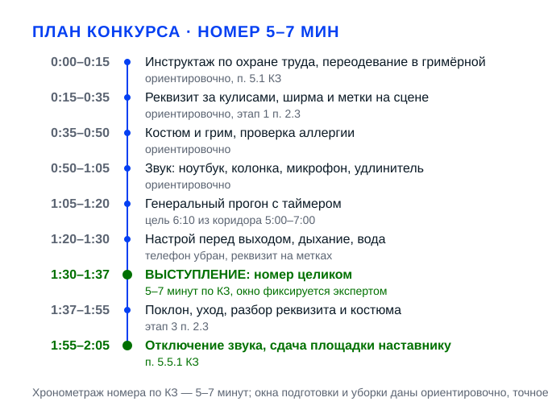
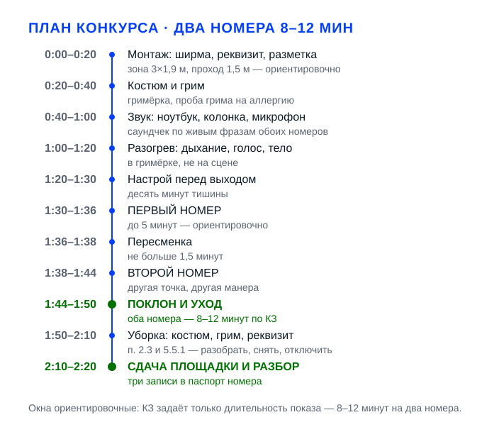
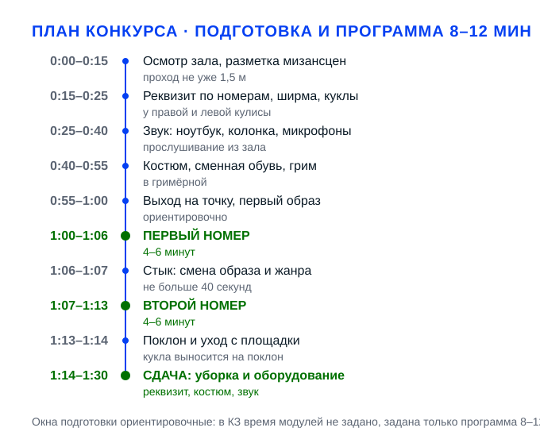

Театр малых форм (ФВ)
Задания ниже — официальные файлы «Абилимпикс» (источник: abilympics-russia.ru), разложенные по категориям. Решения написаны по тексту задания, регламенту и критериям оценки; в них указано, что именно проверяет эксперт.
Школьник
14–16 лет, базовый уровень заданияВ официальном файле категории не разделены отдельными разделами — приводим задание целиком; различия по категориям смотрите в таблице модулей.
Пошаговое решение
Конкурсное задание категории «Школьники» — один номер художественной самодеятельности в одном из шести жанров: кукольное представление, скетч, монолог, сценка, пародия или музыкальная композиция. Номер длится от пяти до семи минут, играется в актовом зале площадью 173 квадратных метра примерно на сто мест, а труппа театра малых форм насчитывает от 3 до 15 человек. Задание строится из трёх этапов по пункту 2.3: подготовить рабочее место — поставить реквизит, надеть костюм, при необходимости загримироваться, проверить микрофоны, колонку и ноутбук; выполнить номер; привести площадку в порядок, разобрав реквизит и отключив звук. Баллы по модулям в документе не расписаны, поэтому опираться надо на эти три этапа и на требования к оснащению: рабочее место 3000 на 1900 миллиметров, проход не меньше 1,5 метра, свет не менее 300 люкс. Ниже — путь от чтения задания до доклада о сдаче площадки.

Задача 1. Разобрать конкурсное задание и выбрать жанр номераЭтап 1 · подготовка, п. 2.3 КЗ
Задание категории «Школьники» звучит коротко: показать заранее разработанный и отрепетированный номер художественной самодеятельности в одном из шести жанров — кукольное представление, скетч, монолог, сценка, пародия или музыкальная композиция. Номер длится от пяти до семи минут, играется в актовом зале на сто с лишним мест и требует, чтобы к моменту выхода на сцене уже стоял реквизит, на участниках были костюмы, а звук был проверен. Всё, что делается до старта, засчитывается отдельным этапом подготовки по пункту 2.3 конкурсного задания, поэтому первые решения — про жанр и рамки — стоят столько же, сколько сама игра: неверно выбранный жанр потом не спасает никакая техника.
Действие 1.1. Прочитать задание и выписать рамки на бумагу
Шаг 1.1.1
Открываем конкурсное задание и переписываем в блокнот три вещи, которые потом будут решать всё: шесть разрешённых жанров, время номера от 5 до 7 минут и состав труппы от 3 до 15 человек. Пишем не «примерно пять минут», а «5:00–7:00, целимся в 6:10», потому что цель в середине коридора оставляет запас на реакцию зала. Рядом выписываем три этапа пункта 2.3: подготовка рабочего места, выполнение задания, приведение места в порядок. Лист кладём на видное место — он будет служить чек-листом до самого выхода на сцену.
Рамки задания — единственное, что не обсуждается: жанр вне списка, номер на девять минут или выход вдвоём вместо трёх участников одинаково выводят работу за пределы задания. Пункт 2.3 прямо перечисляет три этапа, и подготовка с уборкой оцениваются наравне с игрой, поэтому выписанные заранее рамки защищают не от эксперта, а от собственной спешки, когда за неделю до конкурса хочется добавить «ещё одну сцену» и всё рушится.
Проверьте лист по трём признакам: в нём шесть жанров; время записано числом с двумя границами; состав попадает в вилку от 3 до 15. Если хотя бы один пункт записан словом «около», перепишите числом: с приблизительной записью невозможно ни планировать репетиции, ни объяснять партнёрам задачу.
Самая частая ошибка — прочитать только первый абзац про пять-семь минут и пропустить перечень жанров и требований к подготовке. Тогда номер готовят в жанре, которого нет в списке, например в жанре литературно-музыкального монтажа с видео на экране, и на площадке выясняется, что экрана и проектора в оснащении нет вовсе.
Наставник смотрит на этот лист в первые же минуты консультации и по нему понимает, читал ли участник задание целиком или только заголовок. Заодно видно, умеет ли участник превращать числа из документа в план работы.
Шаг 1.1.2
Сверяем замысел с перечнем оборудования из третьего раздела задания: на участника дают ноутбук для музыкального сопровождения, одну колонку, микрофон, сетевой удлинитель, реквизит (ширма, перчаточные куклы, декор сцены), стулья и офисный стол. Читаем список медленно и напротив каждой строки ставим плюс, если наш номер это использует, и минус, если не использует. Всё, чего в списке нет, вычёркиваем из замысла сразу: дым-машину, второй микрофон, световую пушку, экран с видеорядом, живой рояль.
Перечень оборудования — это не рекомендация, а граница возможного: площадка оснащается ровно по нему, и на конкурсе никто не выдаст второй микрофон по просьбе. Номер, построенный на отсутствующей технике, разваливается в первые тридцать секунд, а замена на ходу почти всегда заметна зрителю и эксперту. Сверка занимает десять минут и снимает самый дорогой риск подготовительного этапа.
В списке из одиннадцати позиций у вас должно быть отмечено не больше пяти-шести — столько реально нужно одному номеру. Если плюсов больше восьми, вы планируете постановку, для которой нужна другая площадка: сокращайте, пока не поздно. Отдельно проверьте, что в вашем замысле нет ни одного предмета, который придётся просить у зала.
Типичная ошибка — рассчитывать на «свой» телефон вместо ноутбука и колонки: тихий динамик не озвучит зал на сто мест, фонограмма утонет в шуме, и половина реплик пропадёт. Вторая ошибка — планировать реквизит, которого нет в списке, и надеяться, что «наставник что-нибудь придумает» на месте.
Эксперт по оборудованию на площадке сверяет, чем участник реально пользуется, и отмечает случаи, когда номер пытались достроить чужими средствами. Отдельно отмечается, чем именно участник пользуется на площадке.
Шаг 1.1.3
Уточняем у наставника геометрию зала и записываем её рядом с рамками: актовый зал площадью 173 квадратных метра, вместимость около ста посадочных мест, рабочее место участника 3000 на 1900 миллиметров, ширина прохода между рабочими местами не меньше 1,5 метра. Из этих чисел выводим практические выводы: играть придётся крупно, потому что последний ряд далеко, а реквизит нельзя ставить поперёк прохода, по которому ходят участники других категорий и зрители на колясках.
Пункт 4 задания требует, чтобы проход между рабочими местами оставался не меньше 1,5 метра, а для участников на кресле-коляске выделялись первые места у дверного проёма. Если ширма или декорация перекроет этот проход, замечание получит не только планировка, но и весь номер: зритель на коляске не сможет заехать, а эксперт зафиксирует нарушение доступности площадки. Знание размеров заранее избавляет от перестановок в день конкурса.
Проверьте себя вопросом: поместится ли ваш реквизит в прямоугольник три метра на метр девяносто и останется ли от него свободная полоса шириной полтора метра до стены. Если ответ отрицательный, сокращайте декор, а не проход. Хороший признак — когда на бумаге остаётся свободное место: значит, есть куда отступить при перестановке.
Ошибка — планировать широкую декорацию «во всю сцену» и ставить её вплотную к первому ряду: зал на сто мест с близкой посадкой не даёт обзора, а перекрытый проход превращает выход на сцену в препятствие с полным реквизитом в руках.
Наставник проверяет планировку до начала репетиций на площадке и сразу видит, учитывал ли участник размеры рабочего места и требования доступности. Планировка, нарисованная по памяти, расходится с полом на первой же репетиции.
Действие 1.2. Выбрать жанр под свои сильные стороны
Шаг 1.2.1
Берём лист и делим его на три колонки: голос, руки, лицо и тело. В каждой честно отмечаем, что у вас получается лучше всего — длинная речь без запинки, точная работа кистью с куклой, мгновенная смена выражения лица, пластика и танец. Затем смотрим на шесть жанров из задания и выбираем тот, где сильная колонка работает главным инструментом: монолог держится на голосе, кукольное представление — на руках, скетч и пародия — на лице и мгновенной реакции, музыкальная композиция — на слухе и ритме. Выбираем не тот жанр, который нравится, а тот, где ваша сильная сторона оказывается в центре внимания.
Задание разрешает шесть жанров, и это шесть разных способов существовать на сцене. Побеждает обычно не самый эффектный жанр, а тот, в котором участник не борется со своим телом и голосом. Кроме того, пять-семь минут — короткая дистанция, на ней слабое место проявляется быстрее, чем сильное: если голос садится на третьей минуте, монолог на семь минут превращается в испытание.
Признак верного выбора простой: на репетиции вы устаёте, но не срываетесь, и после прогона можете повторить номер ещё раз без потери качества. Если после второго прогона голос сипнет, кисть немеет или появляется раздражение на собственную роль, жанр выбран против возможностей, и его лучше сменить сейчас, а не за три дня до выхода.
Ошибка — выбирать жанр «посложнее», чтобы удивить эксперта: сложность без опоры на сильную сторону читается как неуверенность, а не как смелость. Вторая ошибка — копировать чужой удачный номер без учёта того, что у автора был другой голос, другой рост и другая пластика.
Эксперт по жанру смотрит первый прогон и отмечает, совпадает ли заявленный жанр с тем, что происходит на площадке, — расхождение всегда видно с первых секунд.
Шаг 1.2.2
Отдельно проверяем выбранный жанр на совместимость с особенностями здоровья — своими и партнёров, если состав больше одного человека. При нарушении слуха сильнее работают кукольное представление, пантомима и сценка с крупной пластикой, а музыкальная композиция требует, чтобы ритм ощущался телом, а не только на слух. При нарушении зрения опорой становится голос и интонация, поэтому монолог и музыкальная композиция дают больше шансов, чем жанры, где важна точная геометрия мизансцен. При нарушении опорно-двигательного аппарата выручает ширма: за ней играют руками, сидя или стоя с опорой.
Пункт 4 задания перечисляет, что площадка даёт под каждую нозологию: при нарушении слуха — звукоусиливающую аппаратуру, индукционную систему и сурдопереводчика; при нарушении зрения — текст крупным шрифтом не меньше 16–18 пунктов, лупу с подсветкой и свет не менее 300 люкс; для колясочников — расширенные проходы и первые места у дверного проёма. Жанр, опирающийся на эти возможности, оценивается выше.
Сформулируйте одной фразой, на что опирается ваш номер: «на голос и интонацию», «на руки и куклу», «на пластику без слов». Если фраза получается с оговоркой вроде «если я услышу музыку» или «если успею переставить», опора выбрана ненадёжная, и жанр стоит пересмотреть, пока репетиции не начались.
Ошибка — брать жанр, который требует качества, недоступного на площадке: например, тонкую игру на шёпоте в зале на сто мест без выносных мониторов. Вторая ошибка — считать, что техническое оснащение «компенсирует» жанр: индукционная система помогает слышать, но не делает монолог выразительным.
Эксперт смотрит, использует ли участник возможности площадки осознанно, и отдельно отмечает случаи, когда номер построен на преодолении барьера, а не на игре.
Шаг 1.2.3
Составляем короткий список того, что номер потребует от площадки, и сверяем его с перечнем оборудования ещё раз, но теперь предметно: нужна ли ширма, сколько кукол, какой высоты стойка микрофона, хватает ли одного удлинителя до розетки, нужен ли стол под реквизит. Если в замысле появляется предмет, которого нет в списке, у нас есть два честных пути: убрать предмет или заменить его тем, что есть. Третий путь — договориться с наставником заранее и получить письменное подтверждение — тоже возможен, но только до дня конкурса, а не в гримёрной.
Пункт 3 задания фиксирует оснащение на одного участника: ноутбук, колонка, микрофон, сетевой удлинитель, реквизит с ширмой и перчаточными куклами, стулья, офисный стол, влажные салфетки, питьевая вода, стаканчики и аптечка. Всё это уже стоит на площадке, и номер, собранный из этих предметов, не зависит от чужих договорённостей. Зависимость от одного отсутствующего предмета — самая частая причина провала подготовительного этапа у школьников.
Проверьте список на избыточность: если из него убрать любой предмет, номер должен остаться понятным, хотя и беднее. Предмет, без которого номер рассыпается, называется критическим — таких в списке допустимо не больше двух, и оба должны быть в перечне оборудования. Всё остальное — украшение, его можно снять без потерь.
Ошибка — привезти свой реквизит, не согласовав его с площадкой, и обнаружить, что его некуда поставить или нечем закрепить. Вторая ошибка — строить номер на одном критическом предмете без замены: одна потерянная кукла обнуляет всю сцену.
Наставник сверяет список с описью площадки и сразу называет предметы, которых на месте не будет. Список из десяти позиций он называет признаком неготовности, а не запасливости.
Действие 1.3. Собрать труппу и распределить роли
Шаг 1.3.1
Определяем численность и записываем её на том же листе: по заданию труппа театра малых форм насчитывает от 3 до 15 человек, и это не формальность, а рамка, внутри которой номер остаётся мобильным. Каждому участнику даём одну главную задачу и одну запасную: первый голос и его дублёр, кукловод и второй кукловод, звукооператор и человек, который подменит его на перестановке. Дублирование обязательно хотя бы для двух ролей — тех, без которых номер не начнётся: выход первого персонажа и запуск фонограммы.
Вилка от 3 до 15 человек задана в описании компетенции и связана с мобильностью: театр малых форм выезжает со спектаклями и играет в помещениях до двухсот зрителей, поэтому труппа не может быть большой. Три человека — минимум, при котором номер держится: один занят куклой, второй говорит, третий управляет звуком. Дублирование ролей прямо влияет на оценку подготовки: номер, который не может начаться из-за одного опоздавшего, считается неготовым.
Проверьте распределение вопросом «что будет, если этот человек заболеет за день до конкурса». Если ответ «номер не состоится», роль не продублирована. Хороший признак — когда у каждого участника в блокноте записаны две строки: своя задача и то, что он делает, если партнёра нет.
Ошибка — собрать труппу из пятнадцати человек, чтобы «было масштабнее»: на сцене три на десять метров такая толпа не помещается, а синхронизировать выходы становится невозможно. Вторая ошибка — оставить без дублёра звукооператора, который в день конкурса занят своей номинацией.
Наставник смотрит на список ролей и сразу спрашивает про замену — по ответу видно, планировал участник состав или собрал людей «как получилось». Ответ «замены нет» наставник записывает отдельной строкой.
Шаг 1.3.2
Договариваемся о правилах работы в труппе и записываем их коротко: репетиции начинаются в назначенное время, текст не меняется позже чем за две недели до конкурса, замечания обсуждаются после прогона, а не во время. Назначаем одного человека, который ведёт хронометраж, и одного, который отвечает за реквизит — это не начальники, а хранители времени и вещей. Правило про текст особенно важно для школьников: желание переписать шутку за три дня до выхода почти всегда заканчивается тем, что партнёр путается в знакомых словах.
Пять-семь минут держатся на точности, а точность появляется только при повторении одного и того же текста. Когда текст меняется до последнего дня, репетиции не накапливаются: каждый прогон начинается заново, и к конкурсу номер остаётся сырым. Кроме того, договорённость о том, где обсуждаются замечания, снимает споры на площадке — а споры перед выходом стоят дороже любых шуток.
Проверьте, работает ли правило, на втором прогоне: если кто-то снова предлагает переделать концовку, напомните о сроке и запишите предложение в список «после конкурса». Признак порядка — когда на репетиции обсуждают темп и паузы, а не сюжет. Если обсуждают сюжет, значит, договорённость не принята.
Ошибка — договориться на словах и не записать: через неделю каждый помнит свою версию срока. Вторая ошибка — обсуждать замечания в момент прогона, когда все на взводе: номер начинает разваливаться именно там, где спорят.
Эксперт видит дисциплину косвенно, через готовность номера: слаженный выход и одинаковый текст у всех участников — следствие договорённости, а не удачи.
Действие 1.4. Зафиксировать план номера на одной странице
Шаг 1.4.1
Пишем одностраничный план, в котором семь строк: жанр, хронометраж с целевой цифрой вроде 6:10, состав и роли, перечень реквизита, что нужно из звука, точки выхода и финальная реплика или жест. Формулировки — короткие, но конкретные: не «кукольное представление про дружбу», а «кукольное представление, две перчаточные куклы, ширма по центру, три сцены, финал — куклы кланяются вместе». Такой лист удобно показать наставнику, и по нему же потом собирается реквизит: ничего не забывается, потому что каждая вещь уже названа.
Одна страница — это не бюрократия, а инструмент сборки. По пункту 2.3 подготовка включает реквизит на сцене, костюмы и звук, и всё это должно быть перечислено заранее, иначе в день конкурса выясняется, что забыт переходник или вторая кукла. План также защищает от расползания замысла: когда семь строк заполнены, добавить восьмую сцену психологически труднее, чем когда всё живёт в голове.
Проверьте план на полноту: каждая строка должна позволять другому человеку собрать номер без ваших объяснений. Если по строке «звук» непонятно, какой файл, в каком формате и с какого момента включается, значит, строка написана для себя, а не для дела. Хороший тест — отдать лист партнёру и спросить, что он возьмёт с собой на площадку.
Ошибка — держать план в голове и пересказывать его устно: детали теряются, а вместе с ними теряется время на площадке. Вторая ошибка — писать план после первых репетиций, когда уже поздно что-то менять: он нужен до, а не после.
Наставник читает план целиком и по нему готовит площадку — совпадение плана с реальностью проверяется на месте. Незаполненная строка плана — повод вернуться к заданию, а не догадываться.
Шаг 1.4.2
Согласовываем план с наставником по компетенции до начала репетиций на площадке: показываем лист, называем жанр и хронометраж, уточняем, что из оборудования доступно, а что придётся заменить. Записываем замечания прямо на листе и переписываем его набело после разговора, чтобы не осталось двух версий. Если наставник говорит, что жанр не соответствует заявленному или номер не укладывается в пять-семь минут, это надо услышать сейчас, а не за день до выхода.
Согласование — не формальность: наставник знает площадку, знает, как выглядит зал на сто мест, и часто видит проблему, которую участник не замечает. Пункт 2.3 прямо говорит, что подготовка рабочего места идёт с помощью наставников, поэтому разговор входит в задание. Кроме того, раннее согласование снимает риск, что заявленный жанр не совпадёт с фактическим содержанием номера.
После разговора у вас на руках один лист без пометок «уточнить» и без незакрытых вопросов. Проверьте: жанр назван одним словом из списка, время записано числом, оборудование перечислено только из разрешённого набора. Если остались вопросы, задайте их сразу — второй раз наставник может быть занят на другой площадке.
Ошибка — прийти на согласование с готовым номером и спорить с замечаниями: переделывать придётся всё равно, только времени останется меньше. Вторая ошибка — согласовать жанр, а про звук и реквизит промолчать, хотя именно они чаще всего не совпадают с площадкой.
Наставник фиксирует дату согласования и потом сверяет, что номер вышел в заявленном жанре и в заявленное время. Расхождение плана с выходом он относит к недоработке подготовки, а не к случаю.
Задача 2. Собрать материал номера и партитуру ролиЭтап 2 · исполнение, п. 2.2 КЗ
Второй шаг — превратить замысел в текст, который можно сыграть за пять-семь минут и повторить без запинки. Здесь появляются три части номера, счёт слов под темп речи, партитура роли с задачами и приспособлениями, а также финал, который ставит точку, а не обрывается. Именно на этом этапе закладывается то, что эксперт назовёт актёрской выразительностью: понятность, краткость и непосредственный контакт со зрителем — три свойства, которые описание компетенции называет главными для театра малых форм.
Действие 2.1. Написать основу номера и выстроить три части
Шаг 2.1.1
Берём выбранную основу — сказку, рассказ, песню, случай из жизни — и раскладываем её на три части: завязка, разработка, точка. В завязке за первые тридцать секунд должно стать понятно, кто здесь кто и чего он хочет; в разработке герой натыкается на препятствие и пробует его обойти хотя бы дважды; в точке он либо добивается своего, либо терпит поражение, и это видно без слов. Каждую часть записываем отдельным абзацем и ставим рядом примерное время: завязка около минуты, разработка три-четыре, точка полторы-две.
Три части — это скелет, по которому зритель понимает происходящее без объяснений, а в театре малых форм объяснять нечем: нет ни декораций на полсцены, ни антракта, ни закадрового голоса. Задание требует номера в одном из шести жанров, и любой из них держится на конфликте: кукла, которая не хочет кланяться, тоже конфликт. Без завязки номер превращается в набор красивых кусков, а без точки зритель не понимает, когда хлопать.
Проверьте скелет пересказом: попросите человека, не читавшего текст, пересказать историю в двух предложениях. Если он называет героя и то, чего герой добивался, скелет держит. Если пересказ звучит как «там все что-то делали и пели», значит, завязка не сформулирована, и дальше работать не с чем.
Ошибка — начинать номер с длинного вступления, где никто ещё ничего не хочет: первые тридцать секунд зритель решает, смотреть ему или нет. Вторая ошибка — делать две точки подряд, чтобы «было смешнее»: вторая гасит первую, и финал рассыпается на два слабых.
Эксперт по драматургии смотрит первый прогон и отмечает, читается ли конфликт с первых секунд, — это первый признак актёрской выразительности из описания компетенции.
Шаг 2.1.2
Переписываем выбранный материал своими словами, оставляя только то, что можно сыграть: действия, реплики, реакции. Все описания вроде «было тихо и грустно» превращаем в конкретное действие — герой садится на край ширмы и опускает голову куклы. Каждое предложение проверяем вопросом «что в этот момент делает актёр»; если ответа нет, предложение не нужно. В кукольном представлении вместо описаний работают наклоны, повороты и паузы, в монологе — смены интонации и адресата, к которому обращена фраза.
Своими словами — значит без книжных оборотов, которые школьник не произносит естественно: на сцене чужая интонация слышна сразу, а спотыкание на длинной фразе разрушает образ. Кроме того, переписывание сокращает текст почти вдвое без потери смысла, а сокращение прямо нужно для пяти-семи минут. Описание компетенции подчёркивает: информация должна доноситься ясно, понятно и кратко.
Прочитайте текст и подчеркните каждое слово, которое вы не сказали бы в обычном разговоре. Если подчёркнутых слов больше десятка, текст ещё книжный. Хороший признак — когда партнёр, услышав реплику один раз, может её повторить: значит, фраза построена просто.
Ошибка — оставить в тексте авторские ремарки и произносить их вслух, объясняя зрителю, что происходит. Вторая ошибка — переписать текст так гладко, что исчезли характерные словечки, и все персонажи заговорили одинаково.
Эксперт слушает, звучит ли текст как живая речь, и отличает выученный наизусть абзац от собственной интонации участника. Слишком гладкий текст он тоже отмечает: в нём пропадает характер персонажа.
Шаг 2.1.3
Отдельно проверяем, понятен ли номер без слуха: закрываем уши или просим партнёра проговорить текст без голоса и смотрим, читается ли история по движениям, по лицу и по кукле. Если смысл теряется, добавляем то, что работает визуально: жест-ключ, повторяющий главную мысль, крупное движение на акцент, смену позы персонажа. Там, где смысл держится только на словах, ставим короткий визуальный дубль — но не подпись и не объяснение.
В зале могут быть зрители и участники с нарушением слуха, и пункт 4 задания предусматривает для них звукоусиливающую аппаратуру, индукционную систему и переводчика русского жестового языка. Номер, который читается глазами, работает на всех и одновременно усиливает актёрскую выразительность: жест, несущий смысл, эксперт видит и оценивает, а слово, сказанное в пустоту, не видит никто.
Проверка простая: прогон без звука на видео с телефона. Посмотрите запись и скажите, о чём история. Если получается пересказать хотя бы основной конфликт, визуальный слой готов; если видно только, что люди ходят и открывают рот, нужны жесты-ключи.
Ошибка — заменить визуальный слой сурдопереводом своими силами: это отдельная профессия, и на площадке переводчик предусмотрен заданием. Вторая ошибка — перегрузить номер жестами так, что актёр начинает «иллюстрировать» каждое слово и выглядит как сурдопереводчик, а не как персонаж.
Эксперт смотрит прогон и отмечает, держится ли смысл на пластике, — для категории «Школьники» это один из самых заметных признаков зрелости номера. Прогон без звука он просит показать отдельно, чтобы увидеть визуальный слой.
Действие 2.2. Сократить материал до пяти-семи минут
Шаг 2.2.1
Считаем слова и переводим их во время: спокойная сценическая речь — это примерно сто-сто двадцать слов в минуту, значит, на пять минут приходится около пятисот-шестисот слов, на семь минут — до восьмисот. Из этого объёма сразу вычитаем паузы, переходы и реакцию зала: на каждый переход между сценами уходит пять-десять секунд, на поклон — три. Получается рабочий ориентир: пятьсот-семьсот слов текста, и лучше ближе к нижней границе, потому что в зале на сто мест речь звучит медленнее, чем в пустом классе.
Пять-семь минут — единственный хронометраж, который задание называет прямо, и он же самый безжалостный: номер на восемь минут воспринимается как нарушение задания, даже если игра прекрасна. Счёт слов — единственный способ узнать время до репетиции, а не после неё. Школьники почти всегда недооценивают длительность: текст, который читается за четыре минуты дома, на сцене идёт шесть.
Проверьте арифметику: количество слов разделите на сто десять и прибавьте по десять секунд на каждый переход. Если сумма выходит больше шести с половиной минут, у вас нет запаса на реакцию зала, и сокращать надо сейчас, пока текст не выучен.
Ошибка — считать время «на глаз» по количеству страниц: страница крупным шрифтом и страница мелким дают разницу в минуту. Вторая ошибка — забыть про музыкальные проигрыши, которые тоже идут в хронометраж и легко съедают сорок секунд.
Эксперт засекает время по факту выхода и сравнивает с пяти-семиминутным коридором, поэтому запас в тридцать-сорок секунд — это часть подготовки, а не перестраховка.
Шаг 2.2.2
Режем текст по правилу «одна мысль — одно действие»: если фраза не двигает конфликт и не меняет состояние героя, она уходит. Первыми убираем повторы одной и той же шутки, объяснения того, что зритель уже увидел, и вежливые конструкции вроде «позвольте мне сказать». Вторыми — второстепенных персонажей, если их реплики можно отдать главному герою. После каждого прохода читаем вслух и отмечаем места, где рука сама тянется пролистать, — это и есть лишнее.
Сокращение — не потеря, а концентрация: в театре малых форм ценится лаконичность, и короткий номер с плотным действием смотрится сильнее длинного с рыхлыми кусками. Кроме того, сокращённый текст легче удержать в памяти, а значит, меньше риск забыть слова на сцене — самая частая причина провала у школьников. Каждый вычеркнутый повтор освобождает секунды, которые можно отдать паузе.
Проверьте результат на слух: в сокращённом тексте не должно остаться фраз, которые начинаются с «как я уже говорил» или «напомню». Если после сокращения пришлось склеивать две сцены встык, поставьте между ними паузу в две-три секунды — она заменит вычеркнутый переход лучше, чем новая реплика.
Ошибка — сокращать за счёт финала, оставляя длинное начало: зритель запоминает последние секунды, и обрубленный финал стирает всё впечатление. Вторая ошибка — вырезать реплику, на которой держится шутка партнёра, и удивляться, что зал не смеётся.
Эксперт оценивает краткость и ясность изложения, поэтому плотность текста видна ему раньше, чем техника игры. Плотность текста он проверяет по числу пустых переходов между кусками.
Шаг 2.2.3
Читаем текст вслух с секундомером, стоя и в полный голос, как на площадке: сидя и вполголоса время всегда меньше. Замеряем не только общее время, но и каждую часть отдельно — завязку, разработку, точку — и записываем три числа рядом с текстом. Повторяем замер трижды в разные дни: разница между первым и третьим замером показывает, насколько вы ещё нестабильны. Целимся в шесть минут десять секунд, чтобы иметь по тридцать секунд запаса в обе стороны.
Три замера нужны потому, что первый прогон всегда медленнее: текст ещё читается с листа, паузы длиннее, дыхание сбивается. К третьему замеру время приходит к реальному сценическому, и именно его надо сравнивать с коридором пять-семь минут. Пункт 2.2 задания отводит на номер ровно этот интервал, и выход за него в любую сторону одинаково заметен эксперту.
Проверьте по трём числам, где расползлось время: если разработка занимает больше четырёх минут, режьте её, а не завязку. Если разница между замерами больше двадцати секунд, текст ещё не устоялся и репетиций нужно больше, чем кажется.
Ошибка — мерить время шёпотом или про себя: получается на минуту-полторы меньше, чем на сцене. Вторая ошибка — остановить секундомер на последней реплике и не учесть поклон, который тоже входит в номер.
Эксперт засекает выход от первого шага на сцену до ухода, поэтому в вашем хронометраже должны быть и вход, и поклон. Три замера подряд он считает нормой, один замер — случайностью.
Действие 2.3. Построить партитуру роли и поставить финал
Шаг 2.3.1
Напротив каждой реплики пишем три слова: задача, действие, приспособление. Задача — чего персонаж добивается от партнёра или от зала, например «хочу, чтобы меня пожалели». Действие — что для этого делаю физически: прошу, требую, дразню, подлизываюсь. Приспособление — как именно: шёпотом, настойчиво, с обидой, с улыбкой. Три слова на реплику — это немного, но именно они превращают чтение текста в игру, и по ним потом легко восстановить рисунок, если что-то сбилось.
Без партитуры актёр произносит слова правильно, но одинаково, и номер превращается в декламацию. С задачей и приспособлением появляется то, что описание компетенции называет актёрской выразительностью: зритель видит намерение, а не старание не забыть текст. Кроме того, партитура страхует на сцене: забыв слова, участник вспоминает задачу и продолжает действовать, вместо того чтобы замолчать.
Проверьте партитуру на разнообразие: если у десяти реплик подряд задача «хочу рассказать», приспособление одно и то же, номер получится ровным и скучным. Хороший признак — когда в партитуре есть хотя бы три разных приспособления: просьба, нажим, отступление.
Ошибка — записывать в задачу эмоцию вместо действия: «хочу грустить» — это не задача, играть её нечем. Вторая ошибка — делать все реплики одинаково громкими: без тихих мест громкие перестают работать.
Эксперт смотрит, есть ли в игре смена намерений, и по ней понимает, работает участник от задачи или от заученной интонации. Одинаковые приспособления подряд он называет «ровным голосом».
Шаг 2.3.2
Размечаем в тексте паузы и акценты: вертикальной чертой — остановки на одну-две секунды, точкой под словом — слово, которое несёт смысл, волной — место, где голос идёт на спад. В кукольном представлении отдельно расписываем работу кисти: большой палец держит голову куклы, указательный и средний ведут руки, наклон головы означает внимание, поворот в сторону — уход от разговора. Каждое движение кисти привязываем к реплике, чтобы кукла не «висела» без дела.
Пауза — самый дешёвый и самый недооценённый инструмент: она даёт залу время понять шутку и одновременно показывает, что актёр владеет темпом. В кукольном представлении техника кисти и есть игра: если кукла не наклоняет голову, зритель видит руку в перчатке, а не персонажа. Задание ставит кукольные представления первым жанром и требует использовать выразительные средства — техника куклы относится к ним.
Проверьте разметку на прогоне с зеркалом или записью: в паузах кукла должна оставаться живой, то есть чуть покачиваться и смотреть, а не замирать как предмет. Если в паузах зал видит неподвижную перчатку, разметка не готова.
Ошибка — ставить паузы только там, где забыл текст: тогда пауза читается как провал. Вторая ошибка — работать куклой от локтя, размахивая всей рукой: кукла начинает «плавать», и точность, которая и создаёт характер, исчезает.
Эксперт следит за кистью на уровне ширмы и видит, держит ли участник куклу или просто поднимает руку вверх. Куклу, замершую в паузе, он отмечает как потерю персонажа.
Шаг 2.3.3
Ставим финал отдельно от остального текста: последняя фраза или последний жест должны быть короче предыдущих, чтобы номер закончился, а не выдохся. После последнего слова держим три секунды полной неподвижности в образе — этого времени хватает, чтобы зал понял, что всё закончилось. Затем поклон: встаём прямо, смотрим в зал, кланяемся на счёт «раз-два-три» и уходим без суеты. Поклон репетируем отдельно, минимум пять раз подряд.
Три секунды тишины — то, что отличает сыгранный номер от оборванного: без них зритель не успевает переключиться и хлопает вяло, а эксперту трудно зафиксировать границу работы. Поклон входит в хронометраж и в общее впечатление, и именно на поклоне чаще всего видно, умеет ли участник держать сцену до конца. По описанию компетенции номер рассчитан на непосредственный контакт со зрителем — поклон и есть этот контакт в чистом виде.
Проверьте финал на записи: если после последней реплики участник сразу разворачивается и уходит, точка не поставлена. Хороший признак — когда на записи видно, что зал молчит две-три секунды, а потом звучит один общий хлопок, а не редкие аплодисменты по краям.
Ошибка — добавлять после финала лишнюю фразу «вот и всё» или объяснение морали: это гасит впечатление. Вторая ошибка — кланяться, глядя в пол и поправляя костюм: зал читает такое движение как неуверенность и снимает впечатление от игры.
Эксперт фиксирует конец номера по последнему действию, и невнятный финал снижает оценку всей игры, даже если середина была сильной. Поклон, сделанный на бегу, он считает незакрытым финалом.
Задача 3. Подготовить реквизит, костюм и гримЭтап 1 · подготовка, п. 2.3 КЗ
Пункт 2.3 ставит подготовку первым этапом и перечисляет её содержание буквально: поставить реквизит на сцене, надеть сценические костюмы для создания образа, при необходимости загримироваться. Это не «сборы перед выходом», а отдельная работа с ошибками, которые потом не исправить: потерянная кукла, шуршащий костюм, поплывший под лампой грим. Ниже — порядок, при котором реквизит, костюм и грим проверяются по очереди и каждый занимает своё место за кулисами и на столе.
Действие 3.1. Собрать и проверить реквизит
Шаг 3.1.1
Пишем опись реквизита по сценам, а не по предметам: напротив каждой сцены перечисляем, что в ней участвует, в какой руке это держат и откуда берут. Кукольное представление даёт простой пример: первая сцена — две куклы и маленький сундук, вторая — та же пара плюс платок, третья — одна кукла и веер. Опись занимает полстраницы, и по ней потом собирается стол за кулисами в том же порядке, в каком предметы выходят на сцену: слева направо по ходу номера.
Подготовка по пункту 2.3 включает реквизит на сцене, и проверяется она не количеством привезённых вещей, а тем, оказалась ли нужная вещь в нужной руке. Опись по сценам решает две задачи сразу: не забыть предмет дома и не искать его в темноте за кулисами, когда до выхода тридцать секунд. У театра малых форм реквизит — половина выразительных средств, потому что декораций почти нет.
Проверьте опись прогоном в уме: пройдите номер от первого шага до поклона и отметьте каждый предмет в момент, когда он впервые нужен. Если предмет появляется в описи, но в прогоне вы не смогли назвать момент, когда его берут, он лишний и место на столе занимает зря.
Ошибка — собирать реквизит «по памяти за час до выхода»: что-то обязательно останется в раздевалке. Вторая ошибка — складывать всё в одну сумку: на площадке приходится вытряхивать её целиком, и мелкие предметы теряются под куклами.
Наставник сверяет опись с тем, что реально лежит на столе за кулисами, и по расхождению видит, готова ли материальная часть номера. Опись, написанную после сборки, он отличает от сделанной заранее.
Шаг 3.1.2
Осматриваем ширму и кукол по пунктам. У ширмы проверяем стойки и петли: складывается ли она без заеданий, держат ли фиксаторы, не качается ли верхняя кромка, когда на неё опираются руками. Ткань натягиваем так, чтобы не было продольных складок, и проверяем, не просвечивает ли она: за ширмой видна тень кукловода. У перчаточных кукол смотрим швы на пальцах, крепление головы, состояние ткани на ладонях — именно там появляются потёртости, из-за которых кукла теряет форму.
Ширма и куклы — единственный «инструмент» этого жанра, и его неисправность видна зрителю сразу: качающаяся ширма отвлекает, просвечивающая ткань выдаёт кукловода, разошедшийся шов превращает персонажа в тряпку. В перечне оборудования ширма и перчаточные куклы заявлены как реквизит на участника, поэтому отвечает за их состояние сам участник. Проверка занимает пять минут и стоит дешевле, чем переделка номера под сломанную куклу.
Проверьте ширму на устойчивость, нажав на верхнюю кромку ладонью: она должна пружинить, но не шататься. Куклу наденьте и проверьте, держит ли она голову вертикально без усилия кисти. Ткань проверьте на просвет, встав за ширму с телефоном-фонариком.
Ошибка — надеяться, что расшатанную стойку «придержит партнёр»: в номере руки заняты куклой. Вторая ошибка — не проверять швы и обнаружить дырку на ладони куклы уже во время игры, когда палец выходит наружу.
Эксперт смотрит на ширму в первые секунды номера: устойчивость и натянутая ткань читаются как часть культуры работы с реквизитом. Проверку ширмы на устойчивость он просит показать руками, а не на словах.
Шаг 3.1.3
Раскладываем реквизит за кулисами на столе или стуле в порядке выхода и подписываем места: куклы — на левом краю стола головами к сцене, мелкие предметы — в лотке или на салфетке, запасной набор — отдельным пакетом. К каждому предмету, который берут в темноте, приклеиваем кусочек малярного скотча как тактильную метку. В запасной набор кладём скотч, нитки с иголкой, ножницы, булавки и вторую пару перчаток: ремонт на месте занимает две минуты, если всё под рукой.
Порядок за кулисами — это скорость и тишина. Когда предмет лежит на своём месте, его берут одним движением, не глядя, и не роняют; когда всё в куче, перед выходом начинается шум и суета, которую слышит зал. Пункт 2.3 говорит о подготовке рабочего места, и стол за кулисами — часть этого места. Запасной набор страхует от самой обидной потери баллов: порванной куклы или отклеившегося декора.
Проверьте раскладку с закрытыми глазами: пройдите рукой по столу и назовите каждый предмет. Если на каком-то месте рука находит не то, метка стоит неправильно. Второй признак порядка — на столе остаётся свободный участок, куда можно положить то, что снимают в процессе.
Ошибка — оставить реквизит на сцене «чтобы не бегать»: он мешает игре и путается под ногами. Вторая ошибка — держать запасной набор в сумке в гримёрной, то есть в другом помещении, куда за кулисы не сбегаешь.
Наставник проходит за кулисы перед выходом и по порядку на столе понимает, продумана ли работа с реквизитом до мелочей. Пустой стол за кулисами он считает нормой, заваленный — нет.
Действие 3.2. Подобрать костюм и обувь под номер
Шаг 3.2.1
Надеваем костюм целиком и проверяем по трём признакам: не жмёт в плечах и поясе, не спадает с плеч, не цепляется за ширму и реквизит. Рукава должны позволять поднимать руки до уровня ширмы без натяжения, а подол — не волочиться по полу, иначе участник наступит на него в повороте. Обувь берём закрытую, на нескользящей подошве и разношенную: новые туфли на сцене дают мозоли за пять минут. Если костюм подобран с чужого плеча, сразу подкалываем булавками то, что болтается.
Костюм создаёт образ, но в первую очередь он должен позволять двигаться так, как требует номер: театр малых форм строится на мобильности и быстрой смене мизансцен. Пункт 2.3 называет костюм среди обязательных элементов подготовки, а пункт 5.2.1 требует надеть сценический костюм и сменную обувь до начала работы. Сковывающий плечи костюм отнимает жест, а скользкая подошва на сцене — это уже риск падения с реквизитом в руках.
Проверьте движение в полном объёме: поднимите руки над ширмой, присядьте, повернитесь вокруг себя, пройдите пять шагов вперёд и назад. Ничего не должно тянуть, спадать или скользить. Отдельно проверьте, не видно ли под костюмом уличной одежды и не выглядывает ли она из-под ворота.
Ошибка — надевать костюм впервые в день конкурса: всё, что жмёт, обнаруживается за десять минут до выхода, когда менять уже нечего. Вторая ошибка — выходить в обуви на гладкой кожаной подошве: сцена обычно деревянная и отполированная, и разворот в кукле заканчивается падением.
Эксперт смотрит, соответствует ли костюм образу и жанру, и замечает, удобно ли участнику двигаться, — по скованности жеста это видно сразу. Костюм, в котором нельзя поднять руки, он отмечает сразу.
Шаг 3.2.2
Продумываем порядок переодевания в гримёрной и записываем его: что надевается первым, что последним, где висит верхняя одежда, куда складывается уличная обувь. По описи инфраструктуры гримёрная оснащена зеркалом, вешалкой для верхней одежды, вешалкой для костюмов, стульями, столами и бумажными полотенцами, поэтому раскладка получается простой: уличное — на одну вешалку, костюм — на другую, обувь — под стул. К костюму прикрепляем бирку с фамилией: в общей гримёрной одинаковые чёрные футболки путаются мгновенно.
Гримёрная на конкурсе общая, и в ней одновременно переодеваются участники нескольких категорий. Порядок переодевания экономит те минуты, которых всегда не хватает перед выходом, а бирка спасает от потери костюма, который потом ищут по всему залу. Кроме того, аккуратно сложенные вещи — условие того, что после номера участник успеет переодеться и вернуться к сдаче площадки, то есть к третьему этапу пункта 2.3.
Проверьте порядок на самом себе: разложите вещи и пройдите переодевание один раз с секундомером. Если уходит больше пяти минут, что-то лежит не на своём месте — обычно это мелкие детали вроде пояса, платка или второй перчатки.
Ошибка — оставить костюм в сумке до последнего: он мнётся и надевается наспех, а на глазах у эксперта видно каждая заломленная складка. Вторая ошибка — положить уличную обувь туда, где стоит реквизит: её потом ищут в темноте за кулисами.
Наставник видит порядок в гримёрной, когда заходит перед выходом, и отмечает участников, у которых всё разложено по местам. Порядок в гримёрной он видит, когда заходит туда перед выходом.
Шаг 3.2.3
Проверяем костюм на шум и на сцепление с реквизитом. Пройдите по сцене и прислушайтесь: шуршащая синтетика, звенящие молнии, браслеты и жёсткие манжеты слышны в зале на сто мест лучше, чем голос. В карманы, если они есть, кладём только то, что достают на сцене, и проверяем, что при наклоне ничего не выпадает. Длинные волосы убираем так, чтобы они не падали на лицо и не цеплялись за куклу; если по образу нужны распущенные волосы, закрепляем их невидимками в двух точках.
Сценический шум — то, чего участник не слышит, а зал слышит: ширма усиливает шорох ткани, а микрофон, стоящий рядом, добавляет шорохам громкости. В номере, построенном на тихих паузах, шуршащий рукав разрушает атмосферу сильнее, чем забытая реплика. Пункт 5.2.1 требует надеть костюм до начала работы, значит, проверить его на шум нужно тоже до выхода, а не во время игры.
Проверку делайте с партнёром: он стоит в пяти метрах и слушает, пока вы двигаетесь и говорите вполголоса. Если партнёр слышит шорох, зал услышит его вдвое громче. Отдельно проверьте, не цепляется ли манжет за край ширмы при подъёме руки.
Ошибка — надевать украшения «для образа» и терять их на сцене: звон и блеск отвлекают, а упавшая серёжка отвлекает ещё и самого участника. Вторая ошибка — оставить длинные волосы свободными в кукольном номере: они попадают под куклу и мешают точной работе кисти.
Эксперт слышит посторонние звуки в тихих местах номера и отличает их от художественного шума, который поставлен специально. Шорох в тихом месте номера он слышит и отличает от задуманного шума.
Действие 3.3. Загримироваться под жанр и свет площадки
Шаг 3.3.1
Выбираем тип грима по жанру и по свету. Для скетча и пародии достаточно нейтрального грима с усиленными глазами и бровями: с расстояния последнего ряда из ста мест лицо без акцентов кажется плоским. Для сказочного кукольного представления кукловод часто остаётся в «человеческом» виде, и тогда грим минимальный, а для характерной сценки допускается яркий рисунок — румяна, нарисованные веснушки, светлая полоса под бровью. Основа — тон на полтона светлее кожи, потому что сценический свет съедает цвет.
Грим в театре малых форм решает не задачу «перевоплощения», а задачу читаемости с дальнего расстояния: зал на сто мест и 173 квадратных метра сцены предполагают, что лицо видно целиком, но мелкие черты теряются. Пункт 2.3 говорит «при необходимости загримироваться», то есть грим не обязателен, но если он есть, он должен работать на образ, а не спорить с ним. Тяжёлый сказочный грим в бытовом скетче читается как отсутствие вкуса.
Проверьте грим при том свете, при котором будете играть: подойдите к зеркалу в гримёрной, затем выйдите к сцене и посмотрите на себя в камеру телефона. Если при сценическом свете лицо выглядит бледным пятном, добавьте акцент на глазах; если грим «кричит» вблизи, значит, для зала он в самый раз.
Ошибка — наносить грим впопыхах, без базы: тон ложится пятнами и к середине номера сползает. Вторая ошибка — делать грим «на всякий случай» ярче, чем требует жанр, и превращать персонажа в маску, за которой не видно мимики.
Эксперт оценивает соответствие грима образу и жанру и смотрит, видна ли под гримом мимика — для актёрской выразительности это важнее насыщенности цвета.
Шаг 3.3.2
Перед первым нанесением проверяем реакцию кожи: каплю тона или карандаша наносим на сгиб локтя и ждём сутки. В день конкурса работаем только тем, что уже проверено, и не пробуем новые средства «для яркости». Рядом держим влажные антибактериальные салфетки из перечня оборудования: ими снимают грим и вытирают руки, чтобы не испачкать куклу и костюм. Если появилось жжение, покраснение или зуд, грим снимаем сразу и идём к наставнику, а не терпим до конца номера.
Пункт 5.1.1 прямо оговаривает, что к работе допускаются лица без противопоказаний по состоянию здоровья, в том числе без аллергических реакций на компоненты используемых материалов, а в оснащении предусмотрены влажные салфетки. Аллергическая реакция на сцене — это не косметический дефект: распухающее лицо не даёт играть, а зуд отвлекает так, что номер рассыпается. Проверка за сутки стоит двух минут и снимает риск целиком.
Убедитесь, что на сгибе локтя после суток нет покраснения и зуда, и что используемые средства вы уже применяли раньше. На площадке проверьте, нет ли реакции после нанесения: кожа не должна гореть. Салфетки лежат рядом с гримом, а не в сумке в другом помещении.
Ошибка — взять чужой грим или подаренную тушь: чужая косметика чаще вызывает реакцию, чем своя. Вторая ошибка — наносить грим на немытое лицо и потные руки, после чего трогать куклу: ткань куклы впитывает тон и остаётся пятнистой.
Наставник спрашивает про аллергии до начала работы — это часть инструктажа по охране труда, и ответ «не знаю» здесь считается нарушением, а не отговоркой.
Шаг 3.3.3
Наносим грим по шагам, а не целиком: сначала вымыть и высушить лицо, затем выровнять тон спонжем от центра к краям, потом глаза и брови, в последнюю очередь — губы и румяна. Каждый слой слегка припудриваем, иначе он сползёт от пота за первые три минуты. Работаем у зеркала с подсветкой в гримёрной, а при нарушении зрения просим партнёра проверить симметрию: брови на одном уровне, тон не заходит на линию волос, границы не видны. На всё уходит десять-пятнадцать минут, и это время закладывается до выхода, а не после.
Грим накладывается слоями, потому что сцена — это тепло: при температуре воздуха 21–24 градуса в зале и свете рампы лицо потеет, и незакреплённый тон сползает полосами. Пункт 5.3.1 требует обеспечить анатомически правильное положение тела и комфортную работу, и закреплённый грим — часть этого комфорта. Симметрия важна потому, что асимметрию видит даже невнимательный зритель, и она читается как небрежность.
Проверьте результат по трём точкам: линия роста волос без резкой границы, брови симметричны при взгляде прямо, тон не темнее шеи. Затем посмотрите на себя с расстояния пяти шагов — так вас увидит первый ряд, и так грим должен выглядеть цельно.
Ошибка — красить глаза первыми, а потом ровнять тон и размазывать тени. Вторая ошибка — не пудрить и обнаружить на середине номера полосы на щеках, которые уже не поправить: руки заняты куклой, а уйти к зеркалу нельзя.
Эксперт подходит к участнику до выхода и смотрит грим вблизи, а затем сравнивает впечатление с тем, как участник выглядит на сцене. Полосы на щеках к середине номера он фиксирует как незакреплённый грим.
Задача 4. Озвучить номер, выстроить сцену и провести генеральный прогонЭтап 2 · п. 2.3 КЗ
Здесь номер впервые собирается целиком: ноутбук с фонограммой, колонка, микрофон, ширма и декор на своих метках, кабели убраны из-под ног, а прогон идёт от первого шага до поклона с секундомером. Пункт 2.3 перечисляет это как отдельную работу — подготовить звук, проверить подключение микрофонов и колонки, включить ноутбук, — и требует не менять установленное рабочее место после того, как оно собрано. Поэтому всё выстраивается один раз и проверяется в том же порядке, в каком будет работать.
Действие 4.1. Подготовить фонограмму, колонку и микрофон
Шаг 4.1.1
Готовим один звуковой файл и одно имя: латиницей, без пробелов, например teatr-minus.mp3, в формате mp3 или wav. Кладём его в корень рабочего стола, а не в папку с вложенными папками, и вторую копию — на флешку. Проверяем три настройки ноутбука: отключён спящий режим и заставка, громкость системы выставлена на семьдесят-восемьдесят процентов, звук идёт на внешнюю колонку, а не на динамики ноутбука. Ноутбук ставим рядом с колонкой и подключаем к сети через сетевой удлинитель, чтобы зарядка не закончилась на четвёртой минуте.
Фонограмма — единственное, что участник не может исправить на ходу: если файл не открывается, номер остаётся без музыки, а в жанре музыкальной композиции это означает провал. Пункт 2.3 требует включить ноутбук и проверить звук до начала выполнения задания, а пункт 3 называет ноутбук первым в перечне оборудования. Один файл вместо плейлиста нужен потому, что на площадке некогда выбирать трек из списка и легко нажать не ту строку.
Проверьте файл двойным щелчком и прослушайте первые и последние десять секунд: начало без паузы, конец не обрезан. Убедитесь, что в строке состояния видно подключение к сети, а индикатор батареи не мигает. Имя файла должно читаться с одного взгляда, без цифр вроде «новый (3)».
Ошибка — принести фонограмму в облаке и надеяться на интернет: в зале его может не быть, а вход в аккаунт займёт минуты. Вторая ошибка — оставить включённым спящий режим: экран гаснет в середине номера, и вернуть звук уже некому.
Эксперт по звуку проверяет файл до выхода и сразу видит, готова ли фонограмма или её будут искать в спешке. Файл с именем «новый (3)» он считает непроверенным.
Шаг 4.1.2
Ставим колонку так, чтобы она была направлена в зал, а не в ширму, и не стояла вплотную к стене: у стены низкие частоты гудят. Кабель от колонки ведём к ноутбуку по кратчайшему пути и сразу закрепляем малярным скотчем. Питание берём через сетевой удлинитель из перечня оборудования, проверяем, что розетка рабочая, а вилка сидит плотно. Уровень выставляем на самом ноутбуке, а ручку колонки — примерно на половину, чтобы был запас в обе стороны.
Звук в зале на сто мест идёт от одной колонки, и её положение решает половину разборчивости: направленная в зал колонка даёт ровный звук по всему залу, направленная в стену — гул в первых рядах и тишину в последних. Пункт 3 задания предусматривает на участника одну колонку и один сетевой удлинитель, поэтому рассчитывать надо ровно на это. Низкие частоты у стены гудят особенно сильно в актовых залах с деревянными панелями.
Проверьте на слух из последнего ряда: попросите партнёра включить фонограмму и пройдите в конец зала. Музыка должна быть слышна, но не должна перекрывать голос. Отдельно проверьте, что кабель нигде не натянут и не выдернется, если кто-то заденет его ногой.
Ошибка — поставить колонку на пол: звук уходит в первый ряд и в колени зрителей. Вторая ошибка — выкрутить громкость на максимум «чтобы точно слышно было»: на пиках появляются искажения, и голос тонет в шипении.
Эксперт проходит по залу во время проверки звука и отмечает, слышно ли номер с последнего ряда — это часть оценки технической подготовки. Положение колонки он проверяет, отойдя в последний ряд.
Шаг 4.1.3
Включаем микрофон и проверяем его до выхода: нажимаем кнопку питания, смотрим на индикатор, говорим «раз-два, проверка» в полный голос и слушаем, как звук идёт из колонки. Батарейку ставим новую, а старую кладём в карман как запасную. Микрофон держим на расстоянии ладони от рта, чуть ниже подбородка и не прямо в лицо: так меньше шипящих и вздохов. Стойку, если микрофон на стойке, выставляем по своему росту до того, как встали на метку.
Микрофон нужен не для громкости, а для разборчивости: в зале на сто мест и 173 квадратных метра сцены голос без подзвучки теряет согласные, а вместе с ними и смысл. Пункт 2.3 требует проверить подключение микрофонов до начала задания, и это единственная проверка, которую нельзя отложить: включение в середине номера слышно всем. Расстояние до рта важно потому, что при слишком близком микрофоне слышно дыхание, а при далёком — гул зала.
Проверьте три вещи: индикатор горит, звук идёт в колонку, а не в наушники; на расстоянии ладони голос звучит ровно, без свиста и щелчков; шнур не тянет и не цепляется за костюм. Проговорите скороговорку — она сразу показывает, разбираются ли согласные.
Ошибка — проверять микрофон шёпотом: шёпот не выявляет свист, который появится на громкой ноте. Вторая ошибка — держать микрофон в руке, которой работают куклой: в кукольном номере руки заняты, и микрофон должен стоять на стойке.
Эксперт слушает проверку и отмечает, умеет ли участник пользоваться микрофоном или включает его уже во время номера. Проверку шёпотом он не засчитывает и просит говорить в полный голос.
Действие 4.2. Разметить сцену и поставить ширму с декором
Шаг 4.2.1
Рисуем план сцены на листе в клетку и переносим его на пол метками: рабочее место участника — прямоугольник 3000 на 1900 миллиметров, от него в стороны остаётся проход не меньше 1,5 метра. Метки делаем малярным скотчем, а не мелом: скотч не стирается и не пачкает костюм. Отмечаем три точки — место ширмы, место выхода и точку финального поклона, — и подписываем их буквами, чтобы на прогоне можно было командовать «встань на Б».
Пункт 4 задания задаёт размеры рабочего места и ширину прохода между рабочими местами не меньше 1,5 метра, а для участников на кресле-коляске требует выделять первые места у дверного проёма и расширять зоны разворота. Метки на полу превращают эти требования в практику: вы физически видите, помещается ли номер в отведённую площадку. Без разметки каждый прогон начинается в новом месте, и мизансцены не закрепляются.
Проверьте рулеткой или шагами: ширина вашей площадки не меньше трёх метров, глубина не меньше метра девяноста, до ближайшего препятствия остаётся полтора метра. Пройдите этот проход с реквизитом в руках — вы должны проходить, не разворачиваясь боком.
Ошибка — размечать «на глаз» и обнаружить на прогоне, что ширма не помещается вместе с точкой выхода. Вторая ошибка — занять метками проход, по которому ходят другие участники и зрители на колясках: это прямое нарушение требований доступности из пункта 4.
Наставник проверяет разметку до первого прогона и сверяет её с планом площадки — по меткам видно, читал ли участник размеры в задании. Разметку без меток на полу он считает отсутствующей.
Шаг 4.2.2
Ставим ширму на размеченное место и фиксируем: ножки раскрываем до упора, фиксаторы защёлкиваем, под заднюю кромку подкладываем сложенную ткань или резиновые подкладки, если пол скользкий. Высота верхней кромки — на уровне подбородка участника, чтобы кукла была видна целиком, а кукловод оставался скрытым. Декор и стулья ставим так, чтобы они не перекрывали обзор из первых рядов и не выходили за метки. После установки рабочее место не передвигаем — пункт 5.2.2 говорит об этом прямо.
Ширма — центр кукольного номера, и её устойчивость проверяется весом: во время игры на неё опираются руками, и незафиксированная ширма начинает ходить по сцене. Высота кромки определяет, видит ли зритель куклу или только её макушку, а правило «не передвигать после установки» из пункта 5.2.2 нужно для того, чтобы мизансцены оставались теми же, что на прогоне: сдвинутая на полметра ширма ломает всю геометрию выхода.
Проверьте ширму нажатием на верхнюю кромку: она должна пружинить и возвращаться на место, а не ехать. Сядьте на первый ряд и посмотрите: видна ли кукла целиком и не видно ли за ширмой головы кукловода. Пройдите по краю площадки — ничего не должно выступать за метки.
Ошибка — ставить ширму слишком высоко «чтобы удобнее»: зал видит куклу по грудь, и вся работа кисти пропадает. Вторая ошибка — сдвинуть ширму во время прогона под удобство и забыть вернуть: на показе номер играется уже в другой геометрии.
Эксперт смотрит на ширму с первого ряда и оценивает, видна ли кукла целиком и устойчиво ли стоит конструкция. Сдвиг ширмы после установки он видит по изменившейся геометрии выхода.
Шаг 4.2.3
Убираем кабели с дороги: звуковой и сетевой прокладываем вдоль стены или под ковром, а на открытых участках приклеиваем малярным скотчем через каждые тридцать-сорок сантиметров. Проверяем освещение рабочей зоны: по требованиям к рабочим местам участников с нарушением зрения индивидуальное освещение составляет не менее 300 люкс, поэтому если сцена освещена слабо, об этом говорим наставнику заранее. Осматриваем пол на скользкие участки и на выступающие крепления декорации, аптечка должна быть на площадке.
Кабель под ногами — самая частая причина падения на сцене, а падение с куклой в руках в темноте за ширмой опаснее, чем кажется: рядом стойки и стулья. Пункт 5.4 задания требует немедленно прекращать работу при неисправностях оборудования, а лучший способ не попасть в эту ситуацию — заранее убрать провода и проверить пол. Свет не менее 300 люкс назван в требованиях к рабочему месту участника с нарушением зрения, и решается это до выхода.
Пройдите весь маршрут выхода и ухода в темноте, как будто свет уже погас: ни одна нога не должна нащупывать провод. Проверьте, что скотч держит кабель на деревянном полу и не отклеивается. Посчитайте, сколько шагов от метки выхода до ширмы, — это число пригодится на показе.
Ошибка — положить кабель «пока так» и забыть: во время номера его задевает партнёр, и звук пропадает вместе с фонограммой. Вторая ошибка — оставить на полу острые крепления декорации, о которые рвётся костюм.
Наставник по охране труда проходит площадку перед началом и отмечает неубранные провода как нарушение требований безопасности. Неубранный провод он фиксирует как нарушение требований безопасности.
Действие 4.3. Провести генеральный прогон и договориться о плане на сбой
Шаг 4.3.1
Проводим прогон точно в том виде, в каком будет показ: костюм, грим, реквизит на метках, микрофон включён, фонограмма запускается с ноутбука, таймер идёт от первого шага на сцену до ухода после поклона. Ничего не останавливаем и не поправляем по ходу, даже если что-то пошло не так: замечания записываем на лист и разбираем после. Время записываем в трёх точках — после завязки, после разработки, после поклона, — и сравниваем с расчётными.
Генеральный прогон — единственная репетиция, которая показывает реальное время: в костюме и с реквизитом номер всегда идёт дольше, чем в футболке, потому что добавляются переходы, поправки костюма и паузы на взятие предметов. Пункт 2.2 задаёт коридор пять-семь минут, и попасть в него можно только по замеру в полной экипировке. Кроме того, прогон без остановок тренирует способность продолжать после сбоя — а сбой на показе почти неизбежен.
Проверьте по трём числам, где номер теряет время: если после завязки таймер показывает больше полутора минут, завязка длинновата. Если общее время вышло за семь минут, сокращайте сейчас, а не надейтесь на «на показе соберёмся»: на показе время только растёт.
Ошибка — делать генеральный прогон вполсилы, «чтобы не устать»: тогда время и дыхание не проверены, и на показе голос садится на середине. Вторая ошибка — останавливаться и начинать заново с первого сбоя: номер никогда не будет сыгран целиком.
Эксперт присутствует на генеральном прогоне и по нему составляет первое впечатление о готовности номера. Прогон без костюма и реквизита он не считает генеральным.
Шаг 4.3.2
Договариваемся о плане на сбой и проговариваем его вслух с партнёрами. Если не завелась фонограмма — начинаем без музыки и играем в том же ритме, а звукооператор в это время пробует запустить файл ещё раз. Если упала кукла или слетел реквизит — не поднимаем в образе, а обыгрываем: персонаж смотрит вниз, пожимает плечами, поднимает предмет как часть сцены. Если партнёр забыл текст — не подсказываем шёпотом из-за ширмы, а задаём вопрос, на который он может ответить своей же репликой.
Сбой на сцене не отменяет оценку: эксперты смотрят, как участник выходит из ситуации, и судят об актёрской выразительности точнее, чем по гладкому прогону. План на сбой нужен заранее, потому что придумать его в момент падения куклы невозможно: в крови адреналин, и первая реакция — остановиться и извиниться, что читается как поражение. Правило «не поднимать в образе» взято из практики: поднятый предмет без обыгрывания разрушает персонажа.
Проверьте план на репетиции намеренно: уроните куклу и посмотрите, что получилось. Если реакция выглядит как обыгрывание, план работает. Если получается суета и извинения, репетируйте этот кусок отдельно, пока движение не станет частью роли.
Ошибка — останавливать номер при сбое и начинать заново: в зале это читается как неготовность. Вторая ошибка — подсказывать партнёру громким шёпотом: микрофон стоит близко, и подсказку слышит весь зал.
Эксперт специально следит за поведением при сбоях и отмечает участников, которые продолжают играть, — это видно в протоколе как устойчивость номера. План на сбой он спрашивает до показа, а не после.
Задача 5. Показать номер и сдать площадкуЭтап 3 · п. 2.3 КЗ
Показ занимает пять-семь минут, но вокруг них есть ещё два отрезка, которые входят в задание: выход на площадку с проверенным реквизитом и уборка после номера — разобрать реквизит, снять костюмы, отключить звук. Пункт 2.3 называет это третьим этапом наравне с двумя первыми, поэтому уходить со сцены нужно так же собранно, как выходить на неё. Ниже — порядок от последней проверки в гримёрной до доклада наставнику о том, что площадка сдана.
Действие 5.1. Выйти на площадку подготовленным
Шаг 5.1.1
За пятнадцать минут до выхода проходим по короткому списку и отмечаем каждый пункт вслух или про себя: костюм надет и застёгнут, обувь завязана, грим закреплён пудрой, реквизит лежит на своих метках за кулисами, ноутбук открыт на нужном файле, колонка включена, микрофон проверен, вода стоит рядом. Отдельно проверяем, что в карманах нет телефона: вибрация в кармане во время номера слышна в зале и сбивает ритм. Всё, что не нужно на сцене, убираем в гримёрную или отдаём сопровождающему.
Пятнадцати минут хватает ровно на то, чтобы пройти список без спешки, и мало на то, чтобы что-то искать. Пункт 2.3 перечисляет эти действия как обязательные перед выполнением задания: реквизит на сцене, костюм, при необходимости грим, проверенный звук. Порядок проверки идёт от внешнего к техническому, потому что костюм и грим исправляются дольше всего, а звук — быстрее всего.
Проверьте список дважды: один раз глазами по вещам, второй раз руками — потрогайте каждую метку за кулисами. Если хотя бы один пункт вызывает сомнение, решайте его сейчас: через десять минут вы уже будете стоять за кулисами, и бегать будет некуда.
Ошибка — оставить телефон в кармане костюма и почувствовать вибрацию посреди монолога. Вторая ошибка — проверять звук уже после того, как надели куклу на руку: с куклой на кисти неудобно нажимать клавиши, и проверка получается формальной.
Наставник проходит по площадке за пятнадцать минут и по готовности участника понимает, будет ли выход спокойным. Телефон в кармане костюма он считает признаком непроверенного списка.
Шаг 5.1.2
За пять минут до выхода прекращаем разговоры и суету: садимся, опускаем плечи, делаем три медленных вдоха с задержкой на четыре счёта и длинным выдохом. Проговариваем про себя первую фразу и первое движение — этого достаточно, чтобы тело вспомнило начало. Проверяем дыхание на звук: если голос сипит, выпиваем несколько глотков воды комнатной температуры, а не холодной. Воду берём из стаканчиков, предусмотренных в оснащении, и не пьём газированное.
Пять минут тишины нужны для того, чтобы сбросить возбуждение: на адреналине участник начинает говорить быстрее и громче, и первые тридцать секунд номера уходят на то, чтобы войти в темп. Дыхание с длинным выдохом снижает пульс и возвращает голосу опору. Пункт 5.3.2 требует, чтобы движения были уверенными, но плавными, и торопиться не следует, — а торопливость начинается именно в эти пять минут перед выходом.
Проверьте себя по признакам: дыхание ровное, руки не дрожат, голос на пробной фразе звучит в своей тесситуре. Если голос ушёл вверх и звучит тонко, сделайте ещё три выдоха и проговорите первую фразу на низкой ноте — это возвращает опору.
Ошибка — репетировать в последние пять минут, повторяя весь текст: это разгоняет волнение и сбивает дыхание. Вторая ошибка — пить холодную воду перед выходом: голосовые связки сужаются, и первая фраза звучит сипло.
Эксперт видит участника перед выходом и отмечает, собран ли он: паника за кулисами почти всегда слышна в первых секундах номера. Сбитое дыхание перед выходом он слышит в первой же фразе.
Шаг 5.1.3
Выходим на сцену и не начинаем сразу: встаём на метку, находим взглядом дальний ряд, делаем паузу в две секунды и только потом произносим первую фразу или поднимаем куклу над ширмой. Пауза кажется длинной только участнику — в зале она читается как готовность. Первое движение делаем крупно, чтобы зал успел переключить внимание с шума на вас: если начинать с мелкого жеста, первые секунды пропадают, а вместе с ними и завязка.
Две секунды перед началом — это то, что отделяет выход от выбегания. За это время зал затихает, эксперт успевает зафиксировать начало номера, а участник — поймать дыхание. Пункт 2.3 говорит о создании сценического образа до начала исполнения: образ создаётся в том числе этой паузой, а не первым словом. Крупное первое движение нужно потому, что актовый зал на сто мест с деревянными панелями гасит мелкую моторику на дальних рядах.
Проверьте по записи генерального прогона: видно ли на ней, что участник вышел и встал, а не появился сразу с репликой. Если в кадре первая секунда уже занята движением, пауза коротка. Хороший признак — когда на записи слышно, как шум зала стихает до первого слова.
Ошибка — начинать говорить на ходу, ещё не дойдя до метки: голос уходит в сторону, а зал не понимает, где смотреть. Вторая ошибка — сразу хвататься за куклу и поднимать её слишком быстро, без паузы: кукла появляется как предмет, а не как персонаж.
Эксперт фиксирует начало номера по первому действию и по нему же определяет хронометраж, поэтому скомканный выход съедает время из пяти-семи минут. Начало без паузы он отмечает как скомканный выход.
Действие 5.2. Вести номер до финала
Шаг 5.2.1
Играем крупно и адресуем в последний ряд: каждую реплику и каждый жест доводим до конца зала, а не до первого ряда. Темп держим ровный, не разгоняемся на шутках и не замедляемся на лирике больше чем на две-три секунды. В кукольном номере следим за тем, чтобы кукла работала на уровне верхней кромки ширмы и не проваливалась за неё: провал виден как исчезновение персонажа. Если в зале смеются, даём реакции две секунды и продолжаем, не пережидая аплодисментов.
Разборчивость и крупность — главное требование к театру малых форм: описание компетенции говорит о донесении информации до зрителей ясно, понятно и по-актёрски выразительно при непосредственном контакте. В зале на сто мест и 173 квадратных метра мелкая игра пропадает физически, а не метафорически. Ровный темп нужен потому, что на волнении участник ускоряется: за семь минут ускорение съедает до минуты и комкает финал.
Проверьте на прогоне с человеком в последнем ряду: он должен пересказать содержание и назвать, где смеялся. Если в последнем ряду смеются на две секунды позже первого — это норма, звук идёт с задержкой. Если не смеются вовсе, шутка сыграна мелко.
Ошибка — играть «для экспертов», поворачиваясь в их сторону: зал теряет контакт, а эксперты видят затылок. Вторая ошибка — пережидать смех до полной тишины: пауза растягивается, и номер выбивается из хронометража.
Эксперт сидит в зале и оценивает, доходит ли игра до дальних рядов, — по этому признаку судят о владении выразительными средствами. Игру только для первых рядов он видит по направлению взгляда.
Шаг 5.2.2
Держим образ до последней секунды: не смотрим на экспертов и на камеру, не поправляем костюм, не вытираем лицо, не переглядываемся с партнёрами «получилось ли». Если что-то пошло не так, продолжаем по плану на сбой: обыгрываем, а не извиняемся. Взгляд распределяем по залу тремя точками — левый край, центр, правый край, — задерживаясь в каждой на две-три секунды, чтобы каждый зритель чувствовал, что играют для него.
Существование в образе — то, что отличает спектакль от репетиции: любое выпадение из роли видно залу мгновенно, потому что зритель следит именно за лицом. Три точки взгляда нужны потому, что при взгляде «в пустоту» зал теряет контакт, а при взгляде в одну точку — часть зрителей выпадает. Пункт 2.3 говорит о создании сценического образа, и держать его надо до ухода со сцены, а не до последней реплики.
Проверьте по записи: есть ли в кадре моменты, когда участник смотрит в сторону экспертов или вниз. Если есть, отметьте их в тексте и на репетиции замените на движение по образу. Хороший признак — когда на записи не видно ни одного «служебного» взгляда.
Ошибка — поправлять костюм или куклу посреди номера: движение читается как поломка. Вторая ошибка — после сбоя начинать играть осторожно, «чтобы не ошибиться снова»: осторожность гасит темп и видна лучше самой ошибки.
Эксперт следит за лицом и глазами и по ним определяет, держится ли образ или участник «отрабатывает» текст. Служебный взгляд в сторону он замечает сразу.
Шаг 5.2.3
Ставим точку и держим её: после последнего слова или жеста остаёмся неподвижны три секунды, не разворачиваясь и не начиная поклон раньше времени. Затем кланяемся: встаём прямо, смотрим в зал, наклон на счёт «раз-два-три», выпрямляемся, при необходимости второй короткий поклон партнёрам. Уходим спокойным шагом, не оглядываясь и не подбирая реквизит на ходу. Реквизит забираем только после того, как ушли со сцены, если он лежит в зоне выхода.
Три секунды после точки — время, за которое зал понимает, что номер закончился, и реагирует. Без них аплодисменты получаются вялыми, а эксперту труднее зафиксировать границу работы, ведь номер оценивается целиком, включая поклон. Спокойный уход важен и практически: сцена часто скользкая, а в костюме с реквизитом в руках быстрый шаг заканчивается падением на глазах у зала.
Проверьте финал на записи: между последним движением и поклоном должно быть видно паузу, а не слияние. Если на записи зал хлопает дружно и сразу, точка поставлена верно. Если хлопки редкие и вразнобой, пауза коротка или финал скомкан.
Ошибка — кланяться, начиная наклон ещё в движении последней фразы: точка и поклон сливаются, и номер выглядит недоделанным. Вторая ошибка — уходить, пятясь и собирая куклы: зал видит спину и суету вместо финала.
Эксперт оценивает финал и поклон как часть номера, а по поведению после поклона судит о сценической культуре участника. Уход спиной вперёд он считает потерей финала.
Действие 5.3. Убрать площадку и сдать её наставнику
Шаг 5.3.1
После ухода со сцены разбираем реквизит в обратном порядке: сначала куклы снимаем с руки и укладываем головами в одну сторону, затем складываем ширму, снимаем декор и убираем мелкие предметы в лоток по описи. Костюм снимаем аккуратно, не выворачивая, и вешаем на вешалку в гримёрной; обувь ставим под стул. Грим снимаем влажными салфетками, а не полотенцем, и складываем использованные салфетки в мусор, а не на стол. На всё уходит десять-пятнадцать минут, и это время входит в третий этап пункта 2.3.
Пункт 5.5.1 прямо требует привести рабочее место в порядок: разобрать реквизит, снять сценические костюмы, выключить оборудование. Порядок разборки обратен порядку сборки, потому что так ничего не теряется: предмет, который взяли первым, убирают последним. Куклы укладываются головами в одну сторону, чтобы не заломить крепление головы, а грим снимается салфетками, потому что полотенце размазывает тон по лицу и оставляет пятна на ткани.
Проверьте по описи, что все предметы на месте: количество кукол, мелкий реквизит, запасной набор. Костюм должен висеть на вешалке, а не лежать на стуле. Пройдите по столу за кулисами рукой — он должен быть пустым, кроме того, что принадлежит площадке.
Ошибка — бросить реквизит за кулисами «разберут»: по описи он числится за участником, и недостача фиксируется. Вторая ошибка — снять костюм в спешке и вывернуть его наизнанку: ткань мнётся, а булавки остаются в подкладке и находятся потом рукой.
Наставник проверяет стол за кулисами после номера и по порядку на нём оценивает, доведена ли работа до конца. Пустой стол за кулисами он проверяет рукой, а не глазами.
Шаг 5.3.2
Отключаем оборудование в правильном порядке: закрываем файл и выключаем ноутбук, затем колонку, затем микрофон, и только после этого вынимаем сетевой удлинитель из розетки. Кабели сматываем в кольцо и закрепляем липучкой, а не завязываем узлом; малярный скотч с пола снимаем, чтобы не осталось следов. Микрофон возвращаем на стойку или в отведённое место, батарейку вынимаем. После этого подходим к наставнику и коротко докладываем: номер сыгран, реквизит разобран, оборудование выключено, площадка свободна.
Порядок отключения защищает оборудование: если выдернуть удлинитель из розетки при работающем ноутбуке, файл может не сохраниться, а колонка получит щелчок в динамик. Пункт 2.3 требует отключить звуковое сопровождение в конце работы, а пункт 5.4.1 — прекращать работу при неисправностях и сообщать о них, поэтому доклад наставнику закрывает этап полностью. Смотанные кабели и снятый скотч видит следующая категория, выходящая после вас.
Проверьте площадку глазами следующего участника: на полу нет скотча и проводов, стол пуст, ширма сложена и стоит у стены, розетка свободна. Если что-то осталось, значит, этап не закрыт. Доклад считайте сделанным только после того, как наставник кивнул или ответил.
Ошибка — уйти, не выключив колонку: она гудит, и следующий участник начинает с чужого фона. Вторая ошибка — оставить скотч на полу: на него налипает пыль, и следующая категория играет на грязной сцене, а замечание получает ваша работа.
Наставник принимает площадку и отмечает в протоколе, сдана ли она: незакрытый третий этап пункта 2.3 снижает итоговую оценку независимо от качества игры.
Студент
учащиеся колледжей и техникумовВ официальном файле категории не разделены отдельными разделами — приводим задание целиком; различия по категориям смотрите в таблице модулей.
Пошаговое решение
Студенческое задание компетенции «Театр малых форм» отличается от школьного не длиной, а плотностью: нужно показать два заранее разработанных и отрепетированных номера, разных по жанру и по характеру, и уложить в восемь — двенадцать минут всё вместе — выход, первый номер, пересменку, второй номер и поклоны. Площадка небольшая: актовый зал на сто три места, рабочая зона участника три метра на метр девяносто, проход полтора метра. Оборудование на одного участника — ноутбук, колонка, один микрофон, сетевой удлинитель, ширма с перчаточными куклами и декор сцены, поэтому номер, которому нужны два микрофона одновременно, физически не сыграть. Решение ниже разбирает подготовку по шагам, от чтения задания до сдачи площадки, и в каждом шаге показывает, что именно проверить и где обычно теряются баллы: чаще всего это пересменка, разборчивость голоса в последнем ряду и незакреплённый реквизит.

Задача 1. Разобрать задание и выбрать два разнохарактерных номераКЗ п. 2.2 · два номера, 8–12 минут
В категории «Студенты» показывают не один номер, а два, и оба должны быть разными по жанру и по характеру — это записано в пункте 2.2 конкурсного задания прямым текстом. На весь показ отводится от восьми до двенадцати минут, и в это время входят оба выхода, пересменка между ними и поклоны. Поэтому работа начинается не с репетиции, а с разбора бумаги: пока не выписаны жанры, хронометраж и состав реквизита, любой выбранный материал может оказаться мимо норматива. Здесь же решается, чем именно будут отличаться номера: контраст эксперт увидит и оценит раньше всего остального.
Действие 1.1. Прочитать задание и выписать его ограничения
Шаг 1.1.1
Открываем задание и читаем пункт 2.2 целиком, с карандашом в руке, а не по диагонали: в категории «Студенты» нужно показать два заранее разработанных и отрепетированных номера, причём разнохарактерных и разножанровых. Выписываем на отдельный лист три вещи: два номера, восемь — двенадцать минут на всё вместе, шесть разрешённых жанров — кукольное представление, скетч, монолог, сценка, пародия, музыкальная композиция. Время считается от первого выхода до последнего поклона, а не по длительности фонограмм.
Разножанровость — не пожелание, а условие задания: два лирических монолога подряд формально не выполняют требование, и за содержание номера балл снижается, сколько бы сил ни было вложено в исполнение. Кроме того, именно контраст двух номеров даёт возможность показать разные стороны мастерства — характер, пластику, голос, работу с предметом, — а по заданию оценивают диапазон, а не один удачный образ.
На листе должно остаться ровно три записи: два номера, восемь — двенадцать минут, жанры разные. Если после чтения вы не можете назвать два конкретных жанра из шести, задание прочитано не до конца. Перечитайте абзац про студентов отдельно от абзаца про школьников: у школьников один номер на пять-семь минут, и эти нормы легко перепутать.
Частая ошибка — взять два номера одной природы, например два лирических монолога, и считать, что раз тексты разные, то и номера разнохарактерные. На разборе это видно сразу: меняется текст, но не жанр. Вторая — готовиться по школьному нормативу, один номер на пять-семь минут: он не закрывает студенческое задание.
Эксперт сверяет заявленные жанры с тем, что видит на сцене, и делает это ещё до выхода: в паспорте номера записано, что заявлено, а дальше он смотрит, совпадает ли заявленное с исполненным.
Шаг 1.1.2
Выписываем из пункта 3.1 перечень оборудования на одного участника: ноутбук для музыкального сопровождения, колонка, микрофон, сетевой удлинитель, реквизит — ширма, перчаточные куклы, декор сцены, — стулья, офисный стол, влажные антибактериальные салфетки, питьевая вода и стаканчики. Отдельной строкой идёт аптечка, она относится к площадке, но знать о ней нужно заранее.
Один микрофон на участника — это не мелочь, а планировочное ограничение. Номер, в котором двое говорят одновременно на разных концах сцены, потребует второго микрофона, которого в перечне нет, и на площадке выяснится, что половина реплик уходит в зал неозвученной.
Проверьте себя просто: против каждого пункта перечня поставьте галочку, если понимаете, как именно вы это используете в своих номерах. Если напротив колонки или удлинителя стоит вопрос, значит, в номере есть слепое место, которое на площадке придётся решать на ходу.
Типичная ошибка — строить номер на диалоге двух персонажей, которые стоят по краям сцены, и рассчитывать, что «как-нибудь озвучат». Второй промах — забыть про удлинитель: розетка в актовом зале почти никогда не стоит там, где удобно, и без своего удлинителя ноутбук садится к середине второго номера.
Эксперт и технический специалист площадки смотрят, укладывается ли заявленный номер в имеющееся оборудование, и на саундчеке это становится видно раньше, чем на выступлении.
Шаг 1.1.3
Читаем пункт 4.1 про основную площадку и записываем размеры: актовый зал площадью 173 квадратных метра, вместимость 103 посадочных места, рабочее место участника три метра на метр девяносто, ширина прохода между рабочими местами полтора метра. Рядом дописываем, что в зале есть гримёрная комната с зеркалом, освещением, вешалкой для верхней одежды и отдельной вешалкой для костюмов, стульями, столами и бумажными полотенцами.
Размер площадки определяет, какой реквизит вообще имеет смысл везти. Ширма для кукольного номера, собранная на три метра в ширину, в рабочую зону три на метр девяносто не встанет, и её придётся переставлять в проходе, где ширина всего полтора метра. Знание размеров заранее превращает реквизит из проблемы в план: вы либо уменьшаете конструкцию, либо строите номер на двух точках вместо четырёх.
Возьмите рулетку и отмерьте на полу репетиционного зала прямоугольник три метра на метр девяносто — именно в нём окажется весь ваш реквизит и вы сами. Если ширма, стул и вы в этот прямоугольник не входите, конструкцию надо менять сейчас, а не на монтаже.
Ошибка — планировать номер «по большой сцене» Дома культуры, где вы репетировали, и не учитывать, что конкурсная площадка меньше. Второй промах — поставить ширму так, что она перекрывает проход полтора метра: это уже не композиция, а нарушение требований доступности.
Эксперт обходит площадку до начала и оценивает, свободен ли проход и не перекрывает ли реквизит зоны, обозначенные для участников в креслах-колясках. Он же проверяет, что после установки рабочее место не двигают — это прямое требование пункта 5.2.2.
Действие 1.2. Выбрать два номера на принципе контраста
Шаг 1.2.1
Строим пару по принципу разной природы, а не разной темы: кукольное представление плюс монолог, скетч плюс музыкальная композиция, сценка плюс пародия. Записываем на листе два столбца и в первом столбце называем, что зритель получает от первого номера, во втором — что от второго, и следим, чтобы ответы не повторялись словами. Если в обоих столбцах выходит «смешно» или «трогательно», пара не сложилась.
Контраст должен быть слышен и виден без пояснений: меняется способ существования, темп, костюм, отношение к зрителю. Когда два номера различаются только текстом, второй воспринимается как продолжение первого, и заявленная разнохарактерность не читается — а это прямое требование пункта 2.2.
Проверьте пару вслух: назовите жанры двух номеров человеку, который не знает вашего репертуара, и спросите, чем они отличаются. Если он отвечает «ну, там про другое», контраста нет. Если говорит «там кукла, а тут живой человек» — пара собрана верно.
Ошибка — выбирать второй номер как «добивку» к первому, из того, что уже отрепетировано когда-то. Получается пара, где второй номер слабее, и на пересменке видно, что участник выходит «доигрывать». Вторая ошибка — брать два жанра, требующих одного и того же: два голосовых номера без движения показывают только одну краску.
Эксперт фиксирует, насколько номера различаются по жанру и по образному содержанию, и оценивает именно диапазон: способность переключиться между двумя разными формами за одну пересменку. Ему важно увидеть вторую краску, а не повторение первой.
Шаг 1.2.2
Проверяем каждый выбранный номер на физическую выполнимость: сколько в нём текста, есть ли вокальная или пластическая часть, требуется ли быстрая смена костюма, работаете ли вы с куклой одной рукой или двумя. Честно отвечаем на вопрос, что именно в номере вы умеете делать уже сегодня, а что придётся осваивать с нуля, и записываем это двумя строками под названием номера.
Два номера в одном конкурсе удваивают нагрузку: голос, память и внимание работают дважды за короткое время. Если один из номеров требует навыка, которого нет, он съест всё репетиционное время и провалит подготовку второго. Задание разрешает выбрать жанр из шести — это и есть пространство для честного выбора по силам, а не по амбициям.
Напишите под каждым номером три слова, обозначающие его основу: текст, кукла, вокал, движение, пародийная точность. Если в одном номере больше двух основ, он перегружен и на сцене распадётся на части.
Ошибка — взять кукольный номер, никогда не работая с перчаточной куклой: кисть устаёт за две минуты, кукла «клюёт» и теряет лицо. Вторая — соединить в одном номере монолог, песню и танец, решив, что «так интереснее»: на площадке такой номер рассыпается на три незаконченных куска.
Эксперт смотрит на владение материалом: держится ли кукла, звучит ли голос, не бросает ли участник движение на середине. Он видит разницу между трудным номером и номером, который участник не тянет.
Шаг 1.2.3
Записываем порядок номеров и обосновываем его одной фразой: почему первым идёт именно этот жанр. Обычно сильнее смотрится тот, где участник увереннее, но если второй номер требует долгой пересменки, его ставят первым, чтобы переодевание не рвало финал. Рядом с порядком сразу пишем, что нужно успеть сделать в пересменке — снять куклу, переставить ширму, сменить обувь.
Порядок номеров — это композиция всего выступления, а не формальность. Восемь — двенадцать минут держат внимание, если внутри есть нарастание или слом; два номера, поставленные «как получилось», читаются как два отдельных выступления, между которыми участник отдыхает.
Проверьте порядок на бумаге по времени: сколько длится первый номер, сколько пересменка, сколько второй, сколько поклоны. Сумма должна попадать в коридор восемь — двенадцать минут с запасом хотя бы тридцать секунд.
Ошибка — ставить первым номер, который требует самой сложной пересменки, и потом весь второй номер играть запыхавшись. Вторая — не продумать пересменку вовсе, рассчитывая «как-нибудь переоденусь за кулисами»: кулис может не оказаться, а зал видит всё.
Эксперт отмечает, выстроено ли выступление как целое: есть ли логика в последовательности и не провисает ли пауза между номерами. Он же смотрит, не разваливается ли финал второго номера из-за усталости участника.
Действие 1.3. Свести хронометраж и завести паспорт номера
Шаг 1.3.1
Берём секундомер, а не телефон с часами, и прогоняем оба номера подряд, включая выход, поклон, пересменку и второй выход. Считаем три отдельных числа: длительность первого номера, длительность пересменки, длительность второго. Пересменка в студенческой категории — самая недооценённая часть: на переодевание и перестановку ширмы уходит от сорока секунд до двух минут, и эти минуты входят в общий норматив.
Норматив восемь — двенадцать минут — это коридор, а не цель. Если суммарно выходит восемь с половиной минут, у вас есть запас на живой зал, который смеётся дольше, чем на репетиции. Если выходит одиннадцать пятьдесят, любая задержка выводит за верхнюю границу, а за превышение времени оценка снижается независимо от качества исполнения.
Хороший ориентир — десять минут двадцать секунд суммарно: два номера по четыре с половиной минуты плюс пересменка около минуты. Проверьте это число трижды в разные дни: на первом прогоне темп всегда быстрее, на третьем — медленнее, и правда где-то между ними.
Частая ошибка — мерить только фонограмму, забыв про выход и поклон: в сумме это ещё сорок-пятьдесят секунд. Вторая — не мерить пересменку и узнать на площадке, что перестановка ширмы занимает полторы минуты, а не двадцать секунд.
Эксперт засекает время от выхода до окончания поклона и сравнивает с нормативом; превышение фиксируется в протоколе отдельной строкой. Он же смотрит, не тянет ли участник паузу перед началом: тишина дольше пяти секунд считается потерей темпа.
Шаг 1.3.2
Заводим паспорт каждого номера — одну страницу формата А4, где сверху написано название и жанр, а дальше пять строк: длительность, состав реквизита, костюм и обувь, фонограмма с точным названием файла, точки входа и выхода на сцене. Внизу приписываем, что делает помощник, если он есть, и кому участник говорит слово перед началом. Паспорт печатаем в двух экземплярах: себе и наставнику.
Паспорт решает главную проблему двух номеров — путаницу между ними. На монтаже, в гримёрке и на пересменке голова занята текстом, и именно в этот момент забывается, какая фонограмма идёт второй и где лежит левая перчатка от куклы. Страница, написанная заранее, снимает эти вопросы и экономит минуты, которых в нормативе нет.
Проверьте паспорт на постороннем человеке: дайте прочитать и попросите ответить, что нужно включить и что вынести на сцену. Если он путается, значит, в паспорте чего-то не хватает или написано слишком общо — например, «реквизит» вместо перечисления.
Ошибка — написать паспорт «для отчёта», общими словами, и никогда в него не смотреть. Вторая — держать паспорт в телефоне, который в этот момент лежит в сумке за кулисами вместе с зарядкой от ноутбука: нужная бумага должна быть на столе в гримёрке.
Эксперт может попросить показать паспорт номера при регистрации или на разборе: аккуратно составленный документ говорит об организации работы не меньше, чем сама сцена.
Задача 2. Собрать реквизит и подготовить площадкуКЗ п. 2.3 · подготовка рабочего места
В пункте 2.3 последовательность выполнения задания начинается словами «подготовить рабочее место»: реквизит на сцене, сценические костюмы, при необходимости грим, звук. Это отдельный этап, на который отводится время до выхода, и он же первое, что видит эксперт. Два номера означают два набора реквизита, две точки на сцене и одну пересменку между ними, поэтому площадку готовят не «под номер», а под оба сразу: сначала раскладывают всё, что понадобится, потом ставят ширму, потом размечают точки, и только после этого проверяют, что проход полтора метра остался свободным.
Действие 2.1. Составить реквизитный лист и уложить реквизит
Шаг 2.1.1
Берём паспорта обоих номеров и выписываем реквизит построчно, с количеством и пометкой «своё» или «выдаёт площадка». По перечню оборудования ширма, перчаточные куклы и декор сцены относятся к оборудованию участника, то есть получаются на месте, поэтому рядом с ними ставим вопрос и заранее уточняем у наставника, что именно будет на площадке, а что нужно привезти.
Реквизитный лист закрывает главный риск двух номеров — перепутать, что к какому выходу относится. Кроме того, он показывает, что реально нужно нести на сцену: каждый лишний предмет — это секунды на пересменке и риск уронить что-то в темноте за кулисами.
В списке напротив каждой строки должна стоять галочка и подпись, где предмет лежит. Проверьте количество: если в номере две куклы, в списке две строки, а не одна «куклы». Сверьте список с паспортами — расхождений быть не должно.
Ошибка — написать «реквизит по номеру» и считать вопрос закрытым: на монтаже выясняется, что нет именно той детали, на которой держится финал. Вторая — привезти своё, не согласовав с площадкой, и обнаружить, что ваша ширма не проходит в дверь гримёрной.
Эксперт при обходе смотрит, насколько организованно подготовлено место: разложен ли реквизит по номерам или свален в одну кучу у кулисы. По этому признаку он заранее понимает, насколько участник владеет собственным выступлением.
Шаг 2.1.2
Укладываем реквизит в две отдельные ёмкости — коробку или плотный пакет на каждый номер — и подписываем крупно: «номер 1» и «номер 2». Внутри каждой ёмкости порядок обратный порядку использования: то, что нужно в последнюю секунду, лежит сверху. Мелкие детали — булавки, запасные шнурки, скотч — в отдельный прозрачный пакет, который не надо искать на дне.
Две ёмкости вместо одной — это пересменка без паники. Когда реквизит двух номеров лежит вместе, на сцене обязательно находится предмет из другого номера, и участник либо играет с лишним, либо тратит секунды на его убору. Подписанные ёмкости позволяют помощнику подать нужное, не задавая вопросов, а вопрос в этот момент стоит дорого.
Проверьте укладку встряхиванием: поднимите ёмкость и слегка встряхните — ничего не должно греметь и перекатываться. Затем закройте и проверьте, что крышка держится и что ёмкость закрывается одной рукой, потому что вторая будет занята куклой.
Ошибка — сложить всё в одну сумку «разберу на месте»: на месте не будет ни света, ни времени. Вторая — уложить мелкие металлические детали без пакета: они царапают кукол и теряются в складках ткани декора.
Эксперт видит порядок подготовки косвенно — по тому, как быстро и уверенно участник выходит на второй номер и не ищет ли чего-то на полу. Поиск реквизита в темноте за кулисой он отметит обязательно.
Шаг 2.1.3
Осматриваем каждый предмет на целостность: у кукол проверяем швы на голове и руках, крепление головы к перчатке, нет ли расходящихся швов на костюме куклы; у декора — устойчивость и острые кромки; у реквизита из ткани — нет ли зацепок, которые пойдут дальше при движении. Всё, что держится на честном слове, укрепляем сразу, а не перед выходом. Починенное откладываем отдельно, чтобы не перепутать с непроверенным.
Кукла, у которой разошёлся шов, теряет лицо в самом буквальном смысле: набивка вылезает, и задуманный образ исчезает за две минуты. Острые кромки декора — это ещё и требования охраны труда: пункт 5.1.1 говорит о допуске участников без противопоказаний, а порезы и зацепки на сцене относятся к травмам, которых легко избежать заранее.
Проверяйте просто и грубо: потяните шов в стороны, поверните куклу головой вниз, проведите ладонью по кромкам декора. Если палец чувствует заусенец, заклейте его скотчем или зашкурьте — на сцене это сделает рука в движении.
Ошибка — осматривать реквизит глазами, не трогая руками: слабый шов виден только на растяжение. Вторая — оставить починку «на потом», а потом оказаться в гримёрке с иголкой в руках за три минуты до выхода.
Эксперт обращает внимание на состояние реквизита: потрёпанная кукла читается как небрежность подготовки, даже если номер сыгран хорошо. Отдельно он смотрит на куклу в движении — именно там расходится слабый шов.
Действие 2.2. Поставить ширму и подготовить кукол к работе
Шаг 2.2.1
Собираем ширму на размеченной точке, ставим на ровный участок пола, а не на ковёр и не на подиумную ступеньку. Проверяем устойчивость: нажимаем на верхнюю планку ладонью вбок и вперёд — конструкция не должна качаться. Верхний край ширмы выставляем так, чтобы кукловод был скрыт полностью даже при поднятой руке, а кукла работала чуть выше кромки, не «по пояс» из-за ширмы.
Устойчивая ширма — это и пластика номера, и безопасность. Если конструкция качается, участник начинает придерживать её плечом, и руки, занятые куклой, работают вполсилы: жест становится мелким, кукла «клюёт». Кроме того, упавшая ширма на площадке — это остановка номера, а после падения оборудование по правилам нужно осматривать и только потом продолжать.
Проверьте три признака: ширма не качается при боковом нажатии, верхний край на одной высоте по всей длине, за ширмой не видно ни головы, ни локтей. Последнее проверяется глазами зрителя с третьего ряда — попросите кого-нибудь сесть в зал и посмотреть.
Ошибка — поставить ширму слишком низко, «чтобы удобнее было рукам»: зритель видит макушку и плечи кукловода, и вся иллюзия рушится. Вторая — поставить на скользкий пол без фиксации: при первом активном движении ширма уезжает.
Эксперт смотрит на линию верха ширмы и на то, виден ли кукловод: это первое, что читается в кукольном номере. Ровная линия и скрытый кукловод дают ощущение, что на сцене живёт персонаж, а не человек с перчаткой.
Шаг 2.2.2
Надеваем каждую куклу на руку до выхода и проверяем посадку: голова куклы сидит на среднем пальце, руки — на большом и мизинце, ткань не тянет между пальцами. Прорабатываем три движения, на которых держится жизнь куклы: наклон головы, поворот в сторону, «шаг» руками. Если кукла садится свободно и не сползает при подъёме руки вверх, посадка верная. Второй раз проверяем уже в костюме: рукав меняет хват.
Посадка куклы определяет, сколько движений вы сможете сделать за номер. Свободная перчатка даёт мелкую моторику — взгляд, кивок, дрожь, — а тесная превращает куклу в варежку, которая только качается целиком. Отработка трёх базовых движений до выхода нужна ещё и потому, что на сцене пальцы от волнения деревенеют, и знакомое движение возвращает контроль.
Проверьте так: поднимите руку с куклой вверх и подержите десять секунд — кукла не должна сползать. Затем сделайте наклон головы настолько медленно, чтобы это читалось из зала, и «шаг» руками на счёт. Если на счёт не получается, значит, кисть зажата, её нужно размять.
Ошибка — надевать куклу первый раз на сцене: перчатка садится иначе, чем в репетиционном зале, и номер начинается с борьбы с реквизитом. Вторая — играть напряжённой кистью: кукла дрожит и теряет лицо, а рука устаёт за сорок секунд.
Эксперт смотрит на кисть и на амплитуду: живая кукла двигается от головы, а не всем корпусом кукловода. Он замечает и момент, когда рука устала: движения становятся мелкими и одинаковыми, кукла теряет характер.
Действие 2.3. Разметить сцену и выстроить мизансцены обоих номеров
Шаг 2.3.1
Рисуем на листе план площадки в масштабе: прямоугольник три метра на метр девяносто — рабочая зона участника по пункту 4.1, — и на нём отмечаем, где стоит ширма, где стул, где вы выходите и куда уходите. Потом переносим план на пол малярным скотчем: короткие полоски в углах ширмы, метка выхода, метка точки поклона. Скотч берём бумажный, чтобы не оставить следов на сценическом полу.
Разметка на полу снимает главную проблему чужой сцены: она больше или меньше привычной, и ноги сами ведут не туда. Метки возвращают геометрию: вы точно знаете, где начинается номер и на каком шаге оказываетесь в центре. Кроме того, размеченная зона не даёт расползтись по сцене — а расползшийся номер теряет композицию и уходит из света.
Проверьте план на соответствие размерам: ширина рабочей зоны три метра, глубина метр девяносто, проход рядом не меньше полутора метров. Пройдите номер по меткам в медленном темпе: если на каком-то шаге вы выходите за скотч, мизансцена не вписана в зону.
Ошибка — размечать «на глаз» и ставить ширму в центр, забыв про выход из кулисы: на выходе приходится обходить реквизит, и участник появляется в зале боком. Вторая — клеить разметку обычным скотчем: на сценическом полу остаются следы, и это уже претензия к площадке.
Эксперт смотрит, держится ли участник в свете и не уходит ли на край сцены: мизансцена читается как продуманность или как случайность. Сдвиг на полметра в сторону от светового пятна он видит сразу.
Шаг 2.3.2
Выстраиваем мизансцены отдельно для каждого номера: у кукольного это точка за ширмой, у второго — своя точка и своя дистанция до зрителя. Записываем на плане цифрами: точка старта, точка кульминации, точка финала. Дистанцию до края сцены держим такую, чтобы вас было видно с последнего ряда, но не так, чтобы можно было шагнуть в зал. План с точками держим при себе до выхода.
Два номера на одной площадке легко сливаются, если оба играются в одной точке. Смена точки пространства — самый дешёвый способ показать, что номер другой: зритель видит не только новый текст, но и новую геометрию. Ещё важнее кульминационная точка: она должна быть там, где свет ярче, иначе самый сильный момент номера уходит в полутон.
Пройдите оба номера по точкам без текста, только шагами: вы должны попадать в метки без подглядывания под ноги. Если на каком-то переходе приходится считать шаги, значит, мизансцена не выучена, и на сцене с волнением она рассыплется.
Ошибка — ставить оба номера в центр сцены и считать, что «так видно лучше»: второй номер воспринимается как повтор. Вторая — уходить в глубину сцены на кульминации: за кулисной тенью лицо теряется, и эмоция не читается.
Эксперт фиксирует, есть ли у номеров разная сценическая геометрия и попадает ли участник в свет на ключевых моментах. Совпадение точек у двух номеров он читает как отсутствие режиссёрской работы.
Шаг 2.3.3
Проигрываем пересменку отдельно, как самостоятельный этюд: уход первого номера, снятие куклы, перенос ширмы или её раскрытие, смена костюма и обуви, выход на второй номер. Засекаем время секундомером и повторяем дважды, каждый раз сокращая. Цель — уложиться в минуту, максимум в полторы, и делать это без суеты и без лишних шагов. Повторяем, пока движения не станут одинаковыми по времени.
Пересменка входит в общий норматив восемь — двенадцать минут, и именно она съедает время, которого потом не хватает. Быстрая пересменка ещё и сохраняет зрителю впечатление: если после первого номера наступает двухминутная пауза, зал остывает, и второй номер начинают слушать с нуля.
Секундомер покажет число: от ухода до первого слова второго номера. Если выходит больше полутора минут, ищите, что можно снять заранее — например, оставить второй костюм частично надетым под первым или подготовить ширму в сложенном виде у самой точки.
Ошибка — репетировать только номера, а пересменку считать «ерундой»: на конкурсе она превращается в полторы минуты беготни, и участник выходит на второй номер с сбитым дыханием. Вторая — переодеваться за кулисами, рассчитывая на темноту: зал видит силуэт.
Эксперт засекает время всего выступления и видит пересменку как часть работы: суетливая перестановка читается как потеря темпа. Он также отмечает, выходит ли участник на второй номер собранным или сбитым.
Действие 2.4. Снять риски площадки и проверить доступность
Шаг 2.4.1
Проходим по своей зоне и убираем всё, обо что можно споткнуться: кабели от колонки и ноутбука прокладываем по стене или приклеиваем скотчем к полу, удлинитель убираем под стол, свободные концы шнуров сматываем. Проверяем, что после установки ничего не будет передвигаться: пункт 5.2.2 прямо запрещает двигать рабочее место после установки, а сдвинутая ширма — это ещё и потерянная метка на полу.
Кабель под ногой в темноте за кулисами — самая частая причина падений на конкурсных площадках, и пункт 5.4 говорит о том, что делать при несчастном случае, но лучше до него не доводить. Закреплённые провода нужны и для качества: незакреплённый кабель цепляется за ногу в момент выхода, и первый шаг номера оказывается шагом на месте.
Проверьте рукой и ногой: пройдите всю свою зону в сценической обуви, наступая на каждый подозрительный участок пола. Ничего не должно шевелиться, греметь или пружинить. Отдельно проверьте, что удлинитель не греется и вилка сидит плотно, а не висит в розетке наполовину.
Ошибка — оставить кабель «на минутку» и забыть про него на всё выступление. Вторая — включить всё в один удлинитель вместе с чужим оборудованием: при перегрузке выключается вся линия, и вы остаётесь без фонограммы.
Эксперт и технический специалист смотрят на безопасность площадки до начала: незакреплённый кабель фиксируется как нарушение требований охраны труда. Это замечание идёт в протокол отдельно от оценки исполнения.
Шаг 2.4.2
Проверяем доступность своей зоны: проход шириной полтора метра остаётся свободным на всём протяжении, первые места у дверного проёма не заняты реквизитом, пандус или широкий проход к сцене не перекрыты коробками. Если в зале есть зрители в креслах-колясках, они должны видеть сцену, а не вашу ширму, поставленную в проходе. Коробки и чехлы убираем в гримёрку, а не под сцену.
Пункт 4.1 требует, чтобы для участников, передвигающихся в кресле-коляске, были выделены первые рабочие места у дверного проёма, и ширина прохода между рабочими местами составляла полтора метра. Это касается не только участников: доступность площадки — часть общей культуры конкурса, и перекрытый проход становится проблемой всех, включая вас, если придётся срочно выносить реквизит.
Встаньте в проходе и разведите руки: если вы задеваете реквизит или стену, проход уже. Пройдите путь от входа в зал до сцены так, как его пройдёт человек на коляске: без ступеней и без объездов вокруг декораций.
Ошибка — поставить коробки с реквизитом в проходе «чтобы далеко не носить»: это перекрывает эвакуационный путь и зону доступности. Вторая — поставить ширму так, что она закрывает обзор первого ряда, где обычно и сидят зрители с нарушениями зрения.
Эксперт проверяет доступность площадки и свободные проходы, а также то, не заслонён ли обзор для зрителей первых рядов. Для компетенции, которая существует ради контакта со зрителем, это прямое попадание в смысл.
Задача 3. Собрать костюм, грим и сценический образКЗ п. 2.3 · костюм, грим, образ
Пункт 2.3 называет среди подготовительных действий «одеть сценические костюмы для создания образа» и «при необходимости загримироваться». Для двух номеров это означает два образа и быструю пересменку между ними: костюм должен быть разным по силуэту и цвету, а сниматься и надеваться — за минуту, без помощника и без зеркала за кулисой. Грим решает другую задачу: с расстояния пяти-семи метров и в сценическом свете лицо без грима превращается в пятно, и никакая игра это не компенсирует.
Действие 3.1. Подготовить два костюма и обувь
Шаг 3.1.1
Собираем два костюма так, чтобы они различались силуэтом и цветом: если в первом номере вы в тёмном и длинном, во втором — в светлом и коротком. Проверяем главное свойство пересменки: костюм снимается и надевается за минуту, значит, никаких пуговиц в мелкую петлю, только молнии, липучки и резинки. Всё, что цепляется за куклу, убираем: броши, длинные шарфы, свисающие браслеты.
Два костюма — это два образа, и различие должно читаться с последнего ряда, а не на ощупь. Одновременно костюм обязан быть удобен в работе: в кукольном номере рукав не должен цепляться за ширму, иначе кукла дёргается, а в монологе воротник не должен мешать дышать.
Проверьте пересменку на практике: снимите и наденьте второй костюм с секундомером, стоя в гримёрке. Уложились в минуту — костюм готов. Затем поднимите руки вверх, присядьте, наклонитесь: ничего не тянет, не расходится, не сползает.
Ошибка — взять два похожих костюма «чтобы не запутаться»: контраст номеров пропадает, и второй выход выглядит как повтор. Вторая — надеть костюм с мелкими пуговицами и застёжками: на пересменке вы теряете минуту, которой потом не хватит на поклон.
Эксперт оценивает соответствие костюма образу и опрятность: мятый, плохо сидящий костюм снижает впечатление независимо от игры. Отдельно он отмечает, помогает ли костюм двигаться или сковывает движение.
Шаг 3.1.2
Обувь берём сценическую, сменную, с нескользящей подошвой и обязательно разношенную. Перед выходом проверяем её на самом сценическом полу: проходим по своей размеченной зоне и по пути из кулисы, пробуем развернуться на месте. Если подошва скользит по планшету сцены, а не по полу гримёрки, значит, нужна другая пара, а не другая техника шага. Новую обувь надеваем за неделю до конкурса, а не утром.
Сцена почти всегда затянута в другой материал, чем репетиционный зал, и обувь, удобная на линолеуме, на сценическом планшете ведёт себя иначе. Скольжение — это риск падения в самый неудачный момент, а пункт 5.3.2 требует, чтобы движения были уверенными и плавными: уверенность начинается с пола под ногами.
Проверьте три вещи: обувь не скользит при развороте, не жмёт в подъёме после десяти минут носки, не стучит громче вашего голоса. Последнее важно в монологе: цоканье каблуков перебивает тихую фразу. Проверяйте на босу ногу и в носках — ощущение разное.
Ошибка — выходить в новой обуви первый раз на конкурсе: к середине второго номера ноги устают, и походка меняется. Вторая — играть в уличной обуви с грязной подошвой: на светлом планшете остаются следы, а это уже претензия к площадке.
Эксперт смотрит на походку и устойчивость: неуверенный шаг читается как неподготовленность тела, даже если текст безупречен. Он же замечает, не подстраивает ли участник движение под неудобную обувь.
Шаг 3.1.3
Развешиваем костюмы в гримёрке на вешалке для костюмов в порядке номеров, а не как получится: первый костюм ближе к выходу, второй за ним. К каждому прикрепляем записку с номером и перечнем деталей — пояс, перчатки, головной убор. Обувь ставим под костюмом, реквизит, который надевается вместе с костюмом, кладём сверху на плечики. Записки пишем печатными буквами, чтобы читались на ходу.
Гримёрная по пункту 3.1 оборудована вешалкой для костюмов, столами, стульями, зеркалом и влажными салфетками — этим стоит пользоваться по назначению, а не складывать вещи на стул. Порядок на вешалке экономит самое дорогое время: перед выходом вы берёте нужное не глядя, а не перебираете два костюма, висящих вместе.
Проверьте вешалку глазами постороннего: по ней должно быть понятно, где первый номер, где второй и чего не хватает. Если приходится развязывать узел, чтобы понять, чей это пояс, записка написана плохо.
Ошибка — сложить костюмы в сумку: они мнутся, и на выходе видно складки, которые невозможно расправить. Вторая — оставить детали второго костюма в коробке с реквизитом: в пересменке вы ищете пояс вместо того, чтобы переодеваться.
Эксперт может зайти в гримёрную до начала: порядок на вешалке он читает как часть организации работы. Записка с перечнем деталей говорит ему, что участник продумал пересменку заранее.
Действие 3.2. Загримироваться под сценический свет
Шаг 3.2.1
До первого нанесения грима проверяем реакцию кожи: наносим каплю тона на сгиб локтя и ждём. Пункт 5.1.1 говорит о допуске участников без противопоказаний, в том числе на предмет аллергических реакций на компоненты используемых материалов, а грим — это как раз такой материал. Свои кисти и спонжи держим отдельно, руки перед гримом моем, а снимаем грим влажными салфетками, которые есть в перечне оборудования.
Проба на аллергию — не формальность: отёк или покраснение на лице за час до выхода означает, что номер не будет сыгран вообще. Гигиена важна и по другой причине: чужие кисти и общая баночка тона — это риск воспаления на коже, а лицо участника в этот день работает как инструмент, и его состояние прямо влияет на оценку.
Признаки нормальной реакции — кожа не чешется, нет покраснения и жжения в течение двадцати минут. Если реакция есть, грим отменяем и играем без него, усилив выразительность за счёт причёски и костюма. Это лучше, чем выйти с отёком.
Ошибка — наносить грим впервые в день конкурса, без пробы: реакция проявляется именно на сцене, при жаре от света. Вторая — пользоваться чужой кистью «одним движением»: кроме гигиены это ещё и перенос тона другого оттенка.
Эксперт видит состояние кожи и опрятность грима: потёкший или нанесённый неровно грим считывается как небрежность. Если участник играет без грима по состоянию здоровья, это не снижает оценку — важно, чтобы решение было осознанным.
Шаг 3.2.2
Наносим тон ровным слоем, на один-два тона светлее уличного: сценический свет съедает цвет лица, и естественный тон под ним превращается в серое пятно. Дальше работаем по трём зонам, которые читаются с расстояния: глаза — линия и тень в складке века, брови — чёткая форма, губы — цвет, заметный из зала. Румяна кладём на скулы, чтобы лицо не выглядело плоским.
Грим нужен не для красоты, а для читаемости: с пяти-семи метров и в свете софитов теряются мелкие черты, и без усиленного рисунка лицо не передаёт эмоцию. Для двух номеров грим ещё и разный: у кукольного он может быть ярче и гротескнее, у монолога — сдержаннее, потому что зритель смотрит в лицо вблизи и видит каждую деталь.
Проверьте результат на расстоянии: отойдите от зеркала на пять-семь шагов и посмотрите на себя в зеркало издалека или попросите кого-то сфотографировать. Видны глаза и брови — грим работает. Лицо выглядит как ровное светлое пятно — слой тонкий или тон слишком тёмный.
Ошибка — накладывать тон толстым слоем, чтобы «было видно»: под светом он начинает блестеть и подчёркивает мимические морщины. Вторая — забыть про шею и руки: граница тона на подбородке видна из зала отчётливо.
Эксперт смотрит на лицо в движении: грим должен держаться и не течь, а рисунок — работать на выражение, а не спорить с ним. Слишком яркий грим в камерном монологе он читает как непонимание жанра.
Действие 3.3. Закрепить причёску и технические средства на голове
Шаг 3.3.1
Убираем волосы так, чтобы они не выбивались ни спереди, ни сзади: закалываем шпильками и невидимками, при необходимости используем сеточку под головной убор. Если по образу нужен головной убор или парик, сажаем его на две шпильки крест-накрест, а не на одну. Для кукольного номера проверяем отдельно: при подъёме руки вверх ничего не съезжает и не тянет кожу.
Причёска — часть образа, но в двух номерах она ещё и техническая деталь: волосы, выбившиеся на поклоне, отвлекают зрителя, а съехавший головной убор приходится поправлять рукой посреди текста. В кукольном номере голова работает вверх-вниз десятки раз, и любая заколка, которая держит слабо, к третьей минуте окажется на плече.
Проверьте тремя движениями: резко наклоните голову вниз, запрокиньте назад, поверните в стороны. Ничего не выпало и не съехало — причёска держит. Затем поднимите обе руки вверх, как за ширмой: волосы не выбиваются из-под заколок.
Ошибка — заколоть волосы одной шпилькой «на честном слове»: на первом же активном движении конструкция разваливается. Вторая — надеть головной убор слишком низко, чтобы он закрывал брови: мимика перестаёт читаться.
Эксперт замечает, приходится ли участнику поправлять причёску по ходу номера: такое движение сразу разрушает образ. В кукольном номере он смотрит на голову кукловода — она видна над ширмой в момент подъёма руки.
Шаг 3.3.2
Если вы носите очки, слуховой аппарат или пользуетесь индукционной петлёй, всё это закрепляем до выхода: дужки очков фиксируем резинкой за затылком, аппарат проверяем на свист и сажаем плотно, петлю включаем и проверяем уровень. Микрофон и слуховой аппарат проверяем вместе — на слух, а не по индикатору: свист от близкого микрофона слышен сразу. Запасные батарейки держим в коробке с реквизитом первого номера.
Пункт 4.1 требует для участников с нарушением слуха звукоусиливающую аппаратуру, информационную индукционную систему и индивидуальные наушники — то есть техника на площадке есть, и её нужно не просто получить, а настроить под себя. Для участников с нарушением зрения там же предусмотрены лупы с подсветкой и освещение не менее трёхсот люкс, а текст задания выдаётся шрифтом не менее шестнадцати-восемнадцати пунктов.
Проверьте на слух: попросите наставника сказать фразу в микрофон с того места, где вы будете стоять, и повторите её. Если слышно каждое слово без напряжения — настройка верна. Для очков: наклон головы вниз не должен сдвигать оправу на нос.
Ошибка — надевать слуховой аппарат после того, как включили микрофон: обратная связь даёт свист, который слышит весь зал. Вторая — играть в очках, которые сползают: поправка оправы рукой в середине монолога читается как потеря мысли.
Эксперт оценивает, комфортно ли участнику: техника, которую приходится поправлять, отвлекает от игры и видна в зале. Для участников с нарушением слуха он отдельно проверяет, слышат ли они фонограмму и подсказки наставника.
Действие 3.4. Проверить образ в свете и с расстояния
Шаг 3.4.1
Выходим на сцену в полном костюме и гриме до начала, встаём в свою размеченную точку и просим наставника или волонтёра посмотреть на вас из третьего-четвёртого ряда при включённом сценическом свете. Смотрим три вещи: читается ли лицо, виден ли костюм как силуэт, не бликует ли что-то. Полезно снять себя на телефон с того же расстояния — на фото сразу видно то, что глаз в зале прощает.
Свет на площадке почти всегда жёстче, чем в гримёрке, и меняет всё: тёмный костюм уходит в фон, светлый грим становится маской, блеск ткани превращается в белое пятно. Проверка в свете — единственный способ увидеть это до выхода. Она же показывает, попадает ли ваша точка в световое пятно: смещение на полшага может стоить всего образа.
Проверьте по фотографии: лицо видно как лицо, а не как пятно; силуэт костюма отличается от фона; на ткани нет ярких бликов. Если что-то не читается, меняйте деталь сейчас — платок, яркость румян, положение точки, — а не после первого номера.
Ошибка — проверять образ только в зеркале гримёрки, при жёлтом бытовом свете: там всё выглядит ярче, чем на сцене. Вторая — выйти в костюме, который сливается с задником: зритель видит голову и руки, а тело исчезает.
Эксперт смотрит на участника в свете сценической площадки и оценивает читаемость образа именно оттуда, а не вблизи. Проверка из зала заранее — единственный способ увидеть то, что он увидит первым.
Шаг 3.4.2
Перед выходом проходим по короткому чек-листу образа, который держим на столе в гримёрке: костюм застёгнут и сидит ровно, обувь на обеих ногах и та же, что проверяли на полу, причёска держится, грим не потёк, техника на месте и работает, реквизит первого номера в руках. Чек-лист из семи пунктов проговариваем вслух, а не «пробегаем глазами». Обновляем его после каждой репетиции.
Два номера и две пересменки означают, что забыть можно что угодно: вторую перчатку, пояс, сменную обувь. Проговорённый вслух список возвращает внимание к деталям в тот момент, когда голова занята текстом. Это же спасает на пересменке: те же семь пунктов проверяются второй раз, только уже для второго образа.
Признак готовности простой: вы можете, не глядя, назвать, что на вас надето и что лежит в руках. Если на любом пункте возникает пауза — значит, именно эту вещь вы и забудете. Проверьте ещё раз и только потом идите к кулисе.
Ошибка — проверять образ в спешке, на ходу, между разговорами: пропускается ровно тот пункт, который потом оказывается решающим. Вторая — надеяться на память вместо списка: под волнением память выдаёт первое, что приходит, а не то, что нужно.
Эксперт фиксирует целостность образа на выходе: любая недостающая деталь видна в первые секунды и запоминается сильнее, чем всё остальное. Проговорённый чек-лист он не слышит, но его результат видит.
Задача 4. Настроить звук, микрофон и техникуКЗ п. 2.3 и 3.1 · ноутбук, колонка, микрофон
Подготовка звука названа в пункте 2.3 отдельным действием: проверить подключение микрофонов, колонки, включить ноутбук. По перечню оборудования на участника приходится один ноутбук, одна колонка, один микрофон и один сетевой удлинитель — значит, вся техника на два номера идёт через эту связку, и переключаться между номерами нужно внутри неё. Здесь важны три вещи: файлы найдены за секунду, микрофон даёт живой голос без свиста, и у вас есть план на случай, если техника откажет посреди второго номера. Акустика зала на 103 места обманчива: в пустом зале тихо, в полном — гулко.
Действие 4.1. Подготовить ноутбук и фонограммы
Шаг 4.1.1
Раскладываем фонограммы по папке с двумя файлами и называем их так, чтобы не перепутать на ощупь: 01_первый_номер и 02_второй_номер. Формат — WAV или MP3 с высоким битрейтом, без переменной громкости и без встроенных пауз в начале: тишина в две секунды перед музыкой сбивает вход. Проверяем, что ноутбук не уходит в сон и не блокируется: отключаем спящий режим, убираем запрос пароля после заставки, ставим запрет на автоматические обновления.
Названия с цифрами нужны из-за пересменки: в темноте за кулисой вы нажимаете не «тот трек», а первый сверху файл. Запрет сна и обновлений — не паранойя: на конкурсах ноутбук нередко гаснет именно в тот момент, когда до выхода остаётся минута, и никакая игра уже не спасает.
Проверьте каждый файл целиком, от начала до конца, а не первые пять секунд: слушаем, что нет обрыва, нет щелчка в начале, нет наложения голоса. Отдельно проверьте, что после последнего трека не включается следующий: автопереход и случайное воспроизведение отключаем.
Ошибка — держать фонограммы в плеере на телефоне с уведомлениями: звонок или сообщение глушит музыку прямо в номере. Вторая — оставить включённым спящий режим и увидеть чёрный экран перед вторым выходом.
Эксперт и звукооператор площадки видят, насколько аккуратно подготовлены файлы, и на саундчеке это становится очевидно: поиск трека в списке занимает время у всех.
Шаг 4.1.2
Ставим колонку так, чтобы она работала в зал, а не в кулису: разворачиваем в сторону зрителя, поднимаем над полом, не прижимаем к стене и не закрываем декорацией. Подключаем к ноутбуку кабелем, а не по беспроводной связи, если есть выбор. Громкость выставляем на самом ноутбуке примерно на семьдесят процентов, а тонкую настройку делаем на колонке — так меньше шума и искажений.
Положение колонки определяет, слышит ли зал музыку и слышит ли её вы сами. Колонка, повёрнутая в кулису, оглушает участника и оставляет зал без сопровождения; колонка на полу даёт гул и низкие частоты вместо голоса. Проводное подключение надёжнее в зале, где много чужих беспроводных сетей и микрофонов.
Проверьте из последнего ряда: попросите включить трек и пройдите в конец зала. Музыку должно быть слышно чисто, без хрипа на громких местах, а на тихих — без пропадания. Затем вернитесь на сцену и проверьте, не глохнет ли слух от собственной колонки.
Ошибка — выкрутить громкость на максимум «чтобы точно слышно было»: на громких фрагментах появляется хрип, а на тихих всё равно ничего не разобрать. Вторая — поставить колонку за ширмой: звук уходит в ткань и в декорацию.
Эксперт оценивает, слышно ли музыкальное сопровождение и не перекрывает ли оно голос: баланс он проверяет на саундчеке. Колонка, развёрнутая в кулису, слышна участнику и не слышна залу, и это заметно сразу.
Шаг 4.1.3
Делаем две резервные копии: одну на флешке, которую держим в коробке с реквизитом первого номера, вторую — на телефоне с отключённым звуком уведомлений. Рядом с ноутбуком кладём распечатанный тайминг обоих номеров с точным временем включения каждого трека. Если на площадке есть второй проигрыватель, заранее договариваемся, как на него переключиться.
Двойное резервирование — это ответ на самый частый сбой конкурсной площадки: чужой ноутбук не читает флешку, файл повреждён при копировании, разъём не работает. Одна копия на бумаге нужна для другого: вы должны помнить, на какой секунде входит музыка, даже если экран погас.
Проверьте копии прямо на месте: вставьте флешку в конкурсный ноутбук и запустите первый трек при выключенной колонке. Файл открылся и играет — копия рабочая. Распечатанный тайминг проверьте на глаз: времена совпадают с тем, что вы слышите.
Ошибка — сделать копию, но никогда её не проверять: половина флешек на конкурсе оказывается в формате, который ноутбук не читает. Вторая — положить флешку в сумку с костюмами, а не в коробку с реквизитом: в пересменке её не найти.
Эксперт не проверяет наличие копий, но видит результат: если техника подводит, а номер продолжается, это засчитывается как владение ситуацией. Остановка ради поиска файла читается как потеря номера.
Действие 4.2. Поставить микрофон и провести саундчек
Шаг 4.2.1
Ставим микрофон на стойку и выставляем высоту под себя: головка на уровне подбородка, направлена в сторону рта, но чуть сбоку, а не прямо в губы. Расстояние до рта — примерно ладонь, чтобы не ловить дыхание и взрывные согласные. Если микрофон петличный, крепим его на лацкан или воротник со стороны груди, кабель прячем под костюм и закрепляем скотчем у пояса, чтобы не тянул.
Высота и направление микрофона определяют, слышно ли вас в зале. Микрофон прямо в губы ловит «п», «б» и дыхание, и зал слышит удары вместо текста; микрофон слишком низко даёт гулкий, далёкий голос, в котором теряются окончания. Боковое положение смягчает взрывные согласные — а в монологе именно они выдают близость микрофона.
Проверьте по трём звукам: скажите «пять подков», «сорок сорок», «барабан бил в барабан». Если на «п» и «б» слышны удары, отодвиньте микрофон или отведите чуть в сторону. Если свистит на «с» — микрофон слишком близко к зубам.
Ошибка — держать стойку на уровне груди и наклоняться к ней во время номера: голос уходит, а спина сгибается. Вторая — закрепить петличку так, что кабель натягивается при повороте головы и шуршит по ткани.
Эксперт слушает голос в зале: глухой или свистящий звук он отмечает раньше, чем оценивает технику речи. Микрофон, который участник поправляет рукой посреди фразы, он тоже замечает.
Шаг 4.2.2
Проводим саундчек по живым фразам из обоих номеров, а не по «раз-два-три»: берём самое тихое место первого номера и самое громкое место второго. Просим наставника или волонтёра стоять в последнем ряду и подавать знак рукой: слышно — палец вверх, не слышно — вниз. Отдельно проверяем обратную связь: подходим к колонке и отходим, слушая, не начинается ли свист.
Проверка на живых фразах нужна потому, что тихая реплика и громкий выкрик ведут себя по-разному: то, что настроено под громкий голос, проваливает шёпот. Обратная связь — отдельный риск: свист появляется, когда микрофон оказывается близко к колонке, и на конкурсной площадке колонка часто стоит именно там, где удобно технике, а не вам.
Признаки готовности: самую тихую фразу слышно в последнем ряду, самая громкая не хрипит, свиста нет ни в одной точке сцены. Пройдите по своим размеченным точкам и проверьте каждую — особенно кульминационную, где голос звучит громче всего.
Ошибка — проверять звук стоя на одном месте: свист и провал появляются именно в движении. Вторая — просить проверить человека, который стоит в первом ряду: оттуда слышно всегда, и проблему вы обнаружите только на выступлении.
Эксперт отмечает, слышно ли каждое слово: тихая, но разборчивая речь оценивается выше, чем громкая и невнятная. На саундчеке он слышит ровно то же, что услышит зал.
Шаг 4.2.3
Записываем настройки для двух номеров отдельно: у первого может быть тише музыка и ближе микрофон, у второго — громче фонограмма. Если на площадке есть пульт, помечаем положения ручек малярным скотчем и подписываем: «первый», «второй». Договариваемся, кто именно нажимает воспроизведение и кто меняет уровень: вы этого делать не должны, ваши руки заняты.
Два номера с разной акустикой требуют разных настроек, а переключать их придётся в пересменке, когда времени нет. Подписанные положения ручек превращают переключение в механическое действие, которое делает помощник. Разделение ролей важно и потому, что участник, который сам бежит к ноутбуку между номерами, теряет темп и выходит на второй номер с сбитым дыханием.
Проверьте переключение практически: пусть помощник переведёт настройки с первого номера на второй и обратно, а вы в это время стоите на своей точке. Услышали разницу — настройки разные, как и задумано. Не услышали — значит, пометки ничего не меняют.
Ошибка — оставить настройки одинаковыми «и так сойдёт»: во втором номере музыка перекроет голос, и половина текста уйдёт. Вторая — не договориться, кто нажимает: в пересменке двое одновременно тянутся к ноутбуку и нажимают дважды.
Эксперт слушает баланс голоса и музыки в каждом номере отдельно и фиксирует провалы разборчивости. Если во втором номере музыка перекрывает текст, это видно по реакции зала.
Действие 4.3. Подготовить план на случай отказа техники
Шаг 4.3.1
Проговариваем вслух, что делаем, если посреди номера пропадает фонограмма, гаснет ноутбук или отключается микрофон. Решение принимаем заранее и одинаковое для обоих номеров: продолжаем играть без музыки, голосом, в том же темпе, не останавливаясь и не объясняя залу, что случилось. Отдельно решаем, в каком месте номера можно без потерь перейти на а капелла и как звучит финал, если сопровождения нет вовсе.
Отказ техники на конкурсе — не редкость: линия перегружена, кабель отходит, чужой ноутбук уходит в обновление. Участник, который останавливается и начинает разбираться, теряет номер целиком, а тот, кто продолжает играть, теряет только музыкальную подложку.
Проверьте план на репетиции: сыграйте оба номера с выключенным звуком, от начала до конца, в том же темпе. Если без музыки номер рассыпается — значит, вы держались не на игре, а на фонограмме, и это надо исправлять до конкурса.
Ошибка — остановиться и сказать в зал «извините, сейчас включим»: это разрывает номер и читается как потеря контроля. Вторая — начинать второй номер с той же музыки, что и первый, чтобы «не искать файл»: разнохарактерность исчезает.
Эксперт оценивает способность держать номер в нештатной ситуации: продолженное выступление он отмечает как владение профессией. Остановка и объяснения с залом снимают впечатление от всей работы.
Шаг 4.3.2
Договариваемся с наставником и волонтёром о двух сигналах: «готов» — когда вы стоите за кулисой и можно включать трек, и «стоп» — если случилось что-то, что требует паузы. Сигналы показываем рукой, а не голосом, потому что микрофон включён. Проговариваем, кто включает трек, кто держит второй файл наготове и кто отвечает за свет. Договариваемся за пятнадцать минут до выхода, а не в момент выхода.
Сигнальная договорённость нужна потому, что техническая часть на конкурсе делается чужими руками. Если трек включают «примерно тогда, когда участник вышел», вход в номер получается сбитым, а в кукольном номере первые секунды уходят на то, чтобы поднять куклу.
Проверьте договорённость на месте: покажите сигнал «готов» из-за кулисы и убедитесь, что трек пошёл через две-три секунды, а не через десять. Затем проверьте «стоп»: звук должен остановиться сразу. Если реакции нет, сигнал не прочитан — договоритесь иначе.
Ошибка — кричать из-за кулисы «включайте»: микрофон уже открыт, и зал слышит вашу команду. Вторая — считать, что все всё понимают без слов: на площадке работает несколько человек, и каждый уверен, что трек включает кто-то другой.
Эксперт видит организованность выхода: точный вход по сигналу читается как опыт, а суета за кулисой — как неготовность. Он же замечает, начинается ли номер с пустой паузы.
Задача 5. Разогреть голос, тело и настроиться на выходКЗ п. 5.3 · подготовка к исполнению
Пункт 5.3 требует, чтобы движения были уверенными, но плавными, а тело находилось в анатомически правильном положении: на сцене это возможно только после разогрева. Два номера подряд — это двойная нагрузка на голос и на кисть, и холодный голос к середине второго номера садится, а незагретая кисть теряет куклу. Разогрев занимает около двадцати минут и делается в гримёрке, не на сцене, — так вы не мешаете другим и не тратите нервы на посторонние глаза. Последние десять минут перед выходом отводятся не упражнениям, а тишине.
Действие 5.1. Поставить дыхание и разогреть голос
Шаг 5.1.1
Начинаем с дыхания, а не с голоса. Встаём ровно, стопы на ширине плеч, руки на нижние рёбра, и дышим на четыре счёта: вдох носом на четыре, задержка на два, выдох ртом на четыре-шесть. Повторяем восемь-десять раз, потом добавляем выдох на звук «с» — тонкой струёй, ровно, пока хватает воздуха. Следим, чтобы поднимались рёбра и живот, а плечи оставались на месте.
Дыхание — основа звука, и на сцене оно первым сдаёт от волнения: воздух уходит в верхнюю часть груди, фраза обрывается на середине, и конец мысли теряется. Пункт 5.3.1 говорит об анатомически правильном положении тела для комфортной работы: ровная спина и свободные плечи как раз и дают опору, на которой держится длинная фраза в монологе.
Проверьте ровность выдоха: на «с» вы должны тянуть двадцать счётов без рывка и без наклона вперёд. Если к пятнадцатому счёту воздух кончается и вы подхватываете плечами — выдох неровный, повторите медленнее.
Ошибка — дышать «в плечи» и набирать воздух шумно, с поднятием ключиц: на сцене это слышно и выглядит как волнение. Вторая — задерживать дыхание перед фразой: голос выходит сдавленным, и первое слово теряется.
Эксперт слышит дыхание в длинных фразах: если участник добирает воздух посреди мысли, текст рассыпается на куски. Он же отмечает шумный вдох — в зале он слышен как признак волнения.
Шаг 5.1.2
Переходим к голосу: сначала мычание с закрытым ртом на удобной ноте, минуту, чтобы почувствовать резонанс в груди и в лице. Потом открытые слоги на одной ноте, затем короткая распевка по терциям вверх и вниз, не выше и не ниже своего диапазона. Заканчиваем читкой нескольких фраз из первого номера — тихо, без напора, чтобы голос «сел» на текст. Всю распевку делаем сидя или стоя ровно, не запрокидывая голову.
Распевка нужна не для красоты, а для того, чтобы связки были готовы к нагрузке: холодный голос на первом же громком месте даёт сип, и дальше номер играется на остатках. Особенно это важно при двух номерах, где голос работает почти без пауз. При этом распевка не должна быть предельной: задача — разогреть, а не спеть концерт.
Проверьте три признака: голос звучит легко на средней громкости, нет першения и сухости, верхние ноты берутся без нажима. Прочитайте первую фразу номера — если она выходит свободно и без сипа, голос готов.
Ошибка — распеваться на максимальной громкости и на предельных нотах: к выходу связки устают, и появляется охриплость. Вторая — начинать сразу с текста, без мычания: голос включается на сухую, и первый абзац звучит скрипуче.
Эксперт отмечает состояние голоса с первых фраз: сип и «песок» в звуке он слышит сразу и относит к подготовке, а не к тексту. Сорванный голос во втором номере он читает как неумение рассчитать нагрузку.
Действие 5.2. Разогреть тело и пластику номеров
Шаг 5.2.1
Делаем суставную разминку сверху вниз, минут десять: круговые движения головой без запрокидывания, плечи вперёд и назад, лопатки, повороты корпуса, наклоны в стороны, таз, колени, стопы. Каждое движение по восемь повторов, в спокойном темпе, без рывков и без растяжки до боли. Заканчиваем потряхиванием рук и ног и несколькими глубокими приседаниями.
Пункт 5.3.2 требует уверенных, но плавных движений: тело, которое не разогрето, двигается угловато, и первое же резкое движение на сцене может закончиться зажимом или растяжением. Для кукольного номера особенно важны кисти и плечи: именно они держат куклу две-три минуты подряд, и незагретая кисть к концу номера начинает дрожать.
Проверьте себя на свободу: поднимите руки вверх, наклонитесь вперёд, присядьте и встаньте. Нигде не должно тянуть и щёлкать. Отдельно проверьте кисти: сожмите и разожмите кулак десять раз, потрясите — пальцы должны быть тёплыми и свободными.
Ошибка — начинать с силовой растяжки или резких наклонов: мышца, которая не разогрета, отвечает болью, и на сцене вы двигаетесь осторожно. Вторая — разминаться один раз утром: к вечернему выходу всё снова зажато.
Эксперт видит свободу тела в первых движениях: зажатые плечи и скованная походка читаются как неготовность независимо от текста. Разогретый участник двигается крупнее, и это заметно с первого шага.
Шаг 5.2.2
Прогоняем пластику обоих номеров отдельно от текста: походку до точки, поворот, жест, работу с куклой. Делаем это медленно, следя за тем, чтобы движение шло от корпуса, а не от кисти. Отдельно проходим пересменку — снятие куклы, перенос ширмы, смену обуви — и повторяем её дважды, потому что именно там тело работает без текста и без подсказок. Каждое движение повторяем по три раза подряд, пока оно не станет одинаковым.
Пластика запоминается телом, а не головой: на сцене под волнением вы воспроизводите то движение, которое повторяли последним. Медленный прогон нужен, чтобы найти лишние зажимы — поднятые плечи, задержанное дыхание, — и снять их до выхода. Пересменка в этом смысле важнее самого номера: она делается на автомате, и автомат нужно выставить заранее.
Проверьте по ощущениям: после прогона не должно быть усталости в плечах и в пояснице. Если устали плечи — вы держите куклу рукой, а не корпусом; если поясница — вы стоите с прогибом. Оба признака исправляются до выхода, а не после.
Ошибка — гонять номера в полную силу до выхода: к моменту выступления вы уже устали, и первый номер играется на остатках. Вторая — пропустить пересменку на разогреве: тело впервые делает её на сцене, в темноте и в спешке, и вместо минуты уходит полторы.
Эксперт смотрит на пластику как на отдельную краску: движение, которое идёт от корпуса, он отличает от жеста, нарисованного кистью. Пересменку он тоже видит как движение тела, а не как технический перерыв.
Действие 5.3. Настроиться и проверить готовность
Шаг 5.3.1
Последние десять минут перед выходом отводим тишине. Садимся, опускаем руки, дышим ровно и проговариваем про себя первую фразу первого номера и первую фразу второго — только первые, чтобы был вход. Текст в эти минуты не переучиваем и не проверяем по бумаге: любая попытка вспомнить забытое слово перед выходом выбивает из состояния и рождает панику. Телефон в это время убираем, часы смотрим один раз.
Настрой — это не мистика, а управление вниманием. За десять минут до выхода внимание нужно направить на вход и на партнёра по залу, а не на текст: текст уже выучен, а вот первая фраза под волнением проваливается чаще всего. Тишина снижает пульс, а спокойный пульс — это ровное дыхание, от которого зависит звук в первом номере.
Проверьте состояние по трём признакам: дыхание ровное и неглубокое, руки не дрожат, во рту не пересохло. Если ладони холодные и мокрые — сделайте пять медленных выдохов и потрясите кистями. Если пересохло — маленький глоток воды комнатной температуры, не больше.
Ошибка — лихорадочно повторять текст по листу за минуту до выхода: находится забытое слово, и дальше вы думаете о нём весь номер. Вторая — настраиваться в шумной гримёрке, слушая чужие разговоры: внимание уходит на них, а не на вход.
Эксперт видит состояние участника за кулисой и на первых секундах выхода: собранность читается как готовность, суета — как потеря контроля. По паузе перед началом он понимает, настроен ли участник на зал.
Шаг 5.3.2
За двадцать минут до выхода пьём немного воды комнатной температуры, а не холодной: по перечню оборудования на площадке есть питьевая вода и одноразовые стаканчики, но своя бутылка надёжнее. Проверяем, что реквизит первого номера лежит там, где нужно, кукла надета или лежит под рукой, обувь на ногах, техника включена. Уточняем у наставника точное время выхода и порядок участников.
Вода нужна для голоса: сухие связки дают сип на первой же длинной фразе, а холодная вода сужает связки и добавляет охриплость. Проверка реквизита за двадцать минут — это буфер: если чего-то не хватает, остаётся время это найти, а не выяснять за двадцать секунд до включения трека.
Проверьте по списку: вода есть, реквизит на месте, кукла в руках, обувь та же, техника включена, время выхода известно. Если хотя бы один пункт не подтверждён — решайте его сейчас. Отсутствие одного предмета проверяется за пятнадцать минут и не проверяется за пятнадцать секунд.
Ошибка — пить холодную воду или газировку перед выходом: связки сужаются, и первая фраза выходит с хрипом. Вторая — оставить куклу в коробке «до выхода»: надевать её нужно заранее, иначе первые секунды номера уходят на борьбу с перчаткой.
Эксперт не проверяет бутылку воды, но слышит сухой голос и видит, как участник ищет реквизит в последний момент. Такая суета перед выходом запоминается сильнее, чем сам номер.
Задача 6. Отыграть два номера на площадкеКЗ п. 2.1–2.2 · исполнение, 8–12 минут
Главная часть задания: показать два заранее подготовленных разнохарактерных номера с использованием актёрских выразительных средств и технических возможностей площадки. По пункту 2.2 на это отведено от восьми до двенадцати минут, и в них входит всё — выход, первый номер, пересменка, второй номер, поклоны. Здесь ничего не изобретается: играется то, что отрепетировано, а внимание уходит на зал, дыхание и переключение между двумя образами. Самое трудное в этой задаче — не первый номер, а пересменка и вход во второй: именно там теряется темп и уходит контакт со зрителем.
Действие 6.1. Выйти на первый номер
Шаг 6.1.1
За две минуты до выхода стоим у кулисы, а не в гримёрке. Проверяем последний раз то, что держим в руках: кукла надета на руку, реквизит на месте, обувь завязана. Слушаем, что происходит в зале: гул, тишина, аплодисменты предыдущему участнику. Свет проверяем глазами с площадки — видно ли вашу точку и не бьёт ли луч в лицо. Если рядом стоит стул, на него не садимся: тело перед выходом должно быть собранным.
Две минуты у кулисы нужны для того, чтобы войти в акустику зала: голос, который звучал в гримёрке, здесь звучит иначе, и слух должен привыкнуть. Кроме того, это последняя точка, где можно спокойно проверить реквизит, не мешая другим. Пункт 5.3.1 требует правильного положения тела, и стоя у кулисы проще выстроить спину и опустить плечи, чем вбегая на сцену.
Проверьте три вещи: кукла сидит на руке и не сползает, реквизит весь в руках или на размеченной точке, обувь застёгнута. Затем сделайте два медленных вдоха и выдоха — это единственная подготовка, которая осталась.
Ошибка — оставаться в гримёрной до объявления и выбегать на сцену: дыхание сбито, первые фразы звучат рвано. Вторая — надевать куклу в последний момент, уже за кулисой: посадка получается неровной, и кукла «клюёт» весь номер.
Эксперт видит выход: спокойный шаг из кулисы и пауза перед началом читаются как уверенность, а вбегание — как суета. Проверку реквизита он замечает по тому, поправляет ли участник что-то на первых секундах номера.
Шаг 6.1.2
Выходим на свою размеченную точку спокойным шагом, не торопясь и не кланяясь на ходу. Останавливаемся, ставим стопы, находим глазами зал — не «в пространство», а в двух-трёх конкретных людей в разных рядах. Держим паузу две-три секунды, пока зал не замолчит, и только потом делаем первый вдох и начинаем. Руки в это время свободно опущены, а не спрятаны за спину.
Пауза перед началом — это не пустое время, а способ забрать внимание зала. Если начать сразу на выходе, первые слова попадают в шум и шорох, и зритель входит в номер с опозданием. Взгляд в конкретные лица нужен по той же причине: он превращает выступление в разговор, а без этого контакт появляется только к середине номера.
Проверьте себя в момент паузы: плечи опущены, дыхание не задержано, вес распределён на обе стопы. Если чувствуете, что стоите на носках или на одной ноге, — переставьте стопу сейчас: на этом равновесии держится вся первая минута.
Ошибка — начинать на ходу, ещё не дойдя до точки: половина первого абзаца уходит в перемещение. Вторая — смотреть в потолок или в пол: зал читает это как неуверенность и перестаёт слушать, а вернуть внимание потом почти невозможно.
Эксперт фиксирует первые секунды: точка, пауза, взгляд — по ним он понимает, готов ли участник работать с залом. Отсутствие паузы он читает как желание поскорее начать, а не как энергию.
Шаг 6.1.3
Играем первый номер в темпе, отработанном на прогонах, не ускоряясь от волнения. Держим опору дыхания до конца каждой фразы, не глотаем окончания и не перескакиваем паузы: пауза внутри номера — это часть текста, а не пустое место. Работаем с партнёром по номеру, если он есть, и с куклой, если номер кукольный: кукла смотрит туда, куда смотрит её история, а не в зал вообще.
Темп — первое, что ломается на сцене: под волнением речь ускоряется на треть, и номер укладывается в четыре минуты вместо пяти. Слушатель не успевает за текстом, а участник выдыхается к кульминации. Дыхание и окончания — признак техники: по ним эксперт понимает, работает ли участник с текстом или просто произносит знакомые слова.
Проверьте по ходу номера три опоры: дыхание не заканчивается на середине фразы, окончания слов слышны, паузы выдержаны. Если чувствуете, что несётесь, — остановитесь на паузе, которую написал автор, и начните следующую фразу медленнее.
Ошибка — гнать текст, чтобы поскорее добраться до сильного места: кульминация приходит на пустом дыхании. Вторая — играть куклой в зал, а не в партнёра: кукла теряет адресата, и номер превращается в показ реквизита.
Эксперт слушает темп и разборчивость: ускорение он отмечает как потерю управления материалом. Отдельно он смотрит на куклу или на партнёра — есть ли адресат, к которому обращена речь.
Действие 6.2. Провести пересменку и отыграть второй номер
Шаг 6.2.1
Заканчиваем первый номер на своей финальной точке, держим секунду-две после последней фразы, кланяемся и уходим тем же спокойным шагом, не оборачиваясь. За кулисой сразу начинаем пересменку по отработанному порядку: снимаем куклу или реквизит, снимаем верхний слой костюма, надеваем второй, меняем обувь, берём реквизит второго номера. Всё это — за минуту, без разговоров и без поисков.
Финал первого номера — это граница между двумя работами, и он должен быть закрыт: не договорённая фраза, а точка. Если уйти в спешке, зал не успевает выдохнуть, и пересменка читается как провал. Порядок действий в пересменке отработан заранее именно для того, чтобы руки делали своё, пока голова настраивается на второй образ.
Проверьте пересменку по времени: от ухода до первого слова второго номера должно пройти не больше полутора минут. Проверьте и состояние: дыхание восстановилось, руки свободны, костюм застёгнут. Если застёгивать нечего и обувь на месте, вы уложились.
Ошибка — начинать переодеваться, не дойдя до кулисы, и попадать в поле зрения зала: переодевание на сцене разрушает оба номера. Вторая — тратить пересменку на разговоры с помощником: время уходит, а второй номер начинается с опозданием.
Эксперт засекает время и смотрит на пересменку как на часть выступления: аккуратная смена образа читается как мастерство. Разговоры и поиски за кулисой он видит по тому, сбит ли вход во второй номер.
Шаг 6.2.2
Выходим на второй номер в другой точке и с другим самочувствием: если первый был плотным и громким, второй ведём тише и медленнее, и наоборот. Меняем не только текст, но и тело — осанку, походку, ритм речи. Первые секунды второго номера должны сразу показать залу, что это другая история, а не продолжение первой. Проверяем на себе: если вам самим кажется, что вы играете то же самое, — меняйте темп.
Разнохарактерность, заявленная в пункте 2.2, проверяется именно здесь: если второй номер начинается так же, как закончился первый, зал воспринимает его как длинное продолжение и теряет интерес. Смена точки и темпа — самый быстрый способ обозначить нового персонажа.
Проверьте на первых тридцати секундах: зал затих и смотрит — значит, переключение прочитано. Если слышны разговоры и шорох, добавьте паузу и начните тише: тишина в зале возвращается через внимание, а не через громкость.
Ошибка — играть второй номер «на остатках», тем же напором, что и первый: силы уходят, а контраст не читается. Вторая — начинать второй номер с той же точки, где закончился первый: геометрия не меняется, и зритель не чувствует перехода.
Эксперт сравнивает два номера между собой: различие в манере и в темпе он оценивает как диапазон участника. Совпадение интонации первого и второго номера он читает как одну краску вместо двух.
Шаг 6.2.3
Заканчиваем второй номер так же, как первый: точка, пауза, поклон. Кланяемся один раз, спокойно, глядя в зал, и уходим. Если по регламенту предусмотрен общий поклон за оба номера, выходим на него отдельно, уже без реквизита, и стоим ровно, не переминаясь. После ухода за кулису не выглядываем и не возвращаемся на сцену. Реквизит при этом держим в руках, а не бросаем за кулисой.
Финал запоминается сильнее середины: скомканный поклон смазывает впечатление от обоих номеров, а спокойный и короткий — закрепляет. Общий поклон за два номера нужен, чтобы зал понял, что выступление закончено: без него зритель ждёт продолжения и не аплодирует в полную силу.
Проверьте по залу: аплодисменты идут ровно, без паузы-недоумения. Если хлопки слабые и быстро стихают, дело не в поклоне, а в том, что финал номера не был точкой. В следующий раз ставьте паузу после последней фразы длиннее.
Ошибка — кланяться на ходу, уже разворачиваясь к кулисе: зал видит спину вместо лица. Вторая — выходить на второй поклон «на бис», когда его не объявляли: это нарушает регламент и время выступления, а эксперты фиксируют превышение норматива.
Эксперт оценивает завершённость: точный финал и ровный поклон он отмечает как умение держать форму до конца. Скомканный уход он запоминает лучше, чем удачную середину номера.
Действие 6.3. Держать контакт с залом и работать со сбоями
Шаг 6.3.1
Если забыли текст, не останавливаемся и не извиняемся. Действуем по заранее выбранному правилу: делаем то физическое действие, которое стоит в этом месте номера, — шаг, поворот, взгляд на куклу, — и говорим следующую фразу, которую помним. Пауза в две-три секунды, заполненная действием, читается как режиссёрская, а не как провал. Текст возвращается через действие, а не через попытку вспомнить слово.
Сбой памяти на сцене случается у всех, и оценивают не его, а реакцию. Участник, который стоит с открытым ртом и краснеет, теряет и номер, и контакт; участник, который продолжает действовать, теряет две секунды. Правило «действие вместо слова» работает потому, что тело помнит мизансцену лучше, чем память помнит текст: движение тянет за собой фразу.
Проверьте правило заранее на репетиции: попросите партнёра или наставника остановить вас в случайном месте словом «стоп» — и продолжайте без текста, одним действием, пока фраза не вернётся. Если возвращается за три-четыре секунды, правило работает.
Ошибка — извиняться перед залом и объяснять, что забыли текст: это разрушает образ и переводит выступление в репетицию. Вторая — начинать фразу заново с начала абзаца: зритель слышит повтор и теряет нить происходящего.
Эксперт отмечает, как участник выходит из сбоя: сохранённый темп и непрерывность действия он оценивает выше, чем безупречный, но остановленный текст. Извинения перед залом он читает как потерю образа.
Шаг 6.3.2
Работаем с реакцией зала, но не подстраиваемся под неё. Если смеются — держим паузу и даём смеху пройти, не перекрикивая его, а затем продолжаем с той же интонации, с какой остановились. Если в зале тишина — это не провал: тишина часто означает, что слушают. Не ускоряемся, чтобы «расшевелить», и не добавляем шуток, которых нет в номере. В кукольном номере отдельно следим, чтобы кукла реагировала на зал раньше вас: поворот головы в сторону смеха оживляет сцену.
Контакт с залом — то, ради чего существует театр малых форм: по описанию компетенции это искусство донесения информации ясно, понятно и кратко при непосредственном контакте со зрителем. Пауза на смех и спокойное отношение к тишине — признаки опытного исполнителя; подстройка под реакцию, наоборот, разрушает выстроенный образ и сбивает темп второго номера.
Проверьте по залу: смех идёт в тех местах, где он задуман, и не рвёт фразы. Если зал смеётся там, где не планировалось, — проверьте, не играете ли вы на бытовом комизме вместо образа. Если тишина стоит весь номер, посмотрите, слышно ли вас в последнем ряду.
Ошибка — перекрикивать смех, чтобы уложиться в хронометраж: фраза тонет, и зритель перестаёт смеяться вообще. Вторая — добавлять импровизацию, которой нет в номере: она ломает выстроенную композицию и уводит от текста.
Эксперт смотрит на живость контакта: реакция на зал без потери образа — один из главных признаков владения профессией. Подстройку под смех и лишние шутки он отмечает как уход от выстроенного номера.
Задача 7. Привести площадку в порядок и разобрать результатКЗ п. 2.3 и 5.5.1 · уборка и сдача
Пункт 2.3 заканчивается словами «привести рабочее место в порядок»: разобрать реквизит, снять сценические костюмы, отключить звуковое сопровождение. Пункт 5.5.1 повторяет то же самое как требование охраны труда по окончании работы. Это короткий, но обязательный этап: он занимает десять-пятнадцать минут, и именно на нём теряется то впечатление, которое сложилось во время выступления. После уборки остаётся разбор с наставником — три конкретных пункта, что удалось и что нет, пока впечатление свежее.
Действие 7.1. Снять костюм и разобрать реквизит
Шаг 7.1.1
Снимаем костюм аккуратно, не через голову и не дёргая застёжки, вешаем на вешалку для костюмов в гримёрке и снимаем грим влажными салфетками, а не водой с мылом в спешке. Салфетки и бумажные полотенца в гримёрке есть по перечню инфраструктуры. После снятия грима умываемся прохладной водой, выпиваем немного воды комнатной температуры и только потом идём разбирать реквизит.
Костюм, снятый рывком, рвётся по швам и теряет форму — а он ещё понадобится на разборе и на следующих конкурсах. Грим, оставленный на коже, забивает поры, и к вечеру лицо краснеет: для голоса и для следующего выхода это лишняя проблема. Пункт 5.1.3 требует соблюдать правила личной гигиены, и снятие грима — прямая часть этого требования.
Проверьте по трём признакам: костюм висит ровно, все детали на месте, лицо чистое и без следов тона у линии волос и на шее. Отдельно проверьте руки: в кукольном номере на кистях остаётся грим, и его видно на ладонях.
Ошибка — бросить костюм в сумку вместе с реквизитом: он мнётся, а реквизит пачкается гримом. Вторая — стереть грим наспех и уйти со следами тона на воротнике: на разборе это видно, и выглядит как небрежность.
Эксперт может зайти в гримёрную после выступления: порядок на вешалке и чистое лицо он отмечает как завершённость работы. Снятый аккуратно костюм говорит ему, что участник думает о следующем выходе, а не только о текущем.
Шаг 7.1.2
Разбираем реквизит по коробкам в обратном порядке: сначала второй номер, потом первый. Ширму складываем и ставим к стене, кукол снимаем с рук, укладываем в коробку головой вверх и пересчитываем по списку из паспорта. Мелкие детали — булавки, заколки, скотч — собираем в прозрачный пакет. Если что-то сломалось или потерялось, говорим об этом сразу, до ухода из гримёрки.
Обратный порядок разбора нужен, чтобы не перепутать принадлежность предметов: второй номер закончился последним, его реквизит ещё в руках. Пересчёт по списку — единственный способ обнаружить потерю, пока её можно найти: зал и кулисы осматривают до того, как туда зайдёт следующий участник.
Проверьте по списку: каждая строка отмечена, количество совпадает, куклы уложены без заломов. Пройдите глазами по своей зоне на сцене и по кулисе — там чаще всего остаются мелкие предметы. Если нашли чужое, отдайте наставнику.
Ошибка — оставить ширму на сцене «пусть стоит»: она мешает следующему участнику и считается неубранным рабочим местом. Вторая — уйти молча, если что-то сломалось: поломку заметят и спишут на вас, но уже без вашего объяснения.
Эксперт и технический специалист проверяют, освобождена ли площадка: оставленный реквизит фиксируется как нарушение порядка сдачи. Пересчитанный по списку реквизит он видит по тому, что участник не возвращается на сцену за забытым.
Действие 7.2. Отключить технику, сдать площадку и разобрать результат
Шаг 7.2.1
Выключаем ноутбук правильно — через завершение работы, а не закрытием крышки, — выключаем колонку, снимаем микрофон со стойки и сдаём его вместе с кабелем, удлинитель сматываем и убираем. Проверяем, что ничего не осталось включённым в розетку и что кабели, закреплённые скотчем, сняты вместе со скотчем. Оборудование принимает наставник или технический специалист площадки.
Пункт 5.5.1 прямо требует по окончании работы выключить оборудование, а пункт 5.4.1 напоминает, что неисправные приборы отключают и сообщают руководству. Смотанный кабель и снятый скотч — это ещё и уважение к следующему участнику: он не споткнётся о ваши провода.
Проверьте по трём признакам: розетка свободна, кабели смотаны и лежат вместе с оборудованием, микрофон сдан и записан за вами. Пройдите по своей зоне и убедитесь, что на полу не осталось ни скотча, ни бумажек.
Ошибка — уйти, оставив ноутбук включённым на столе: он уходит в сон, а на следующем выступлении его приходится будить, теряя время. Вторая — оставить приклеенный скотч на полу: это порча покрытия и замечание к сдаче площадки.
Эксперт проверяет сдачу площадки: чистая зона и сданное оборудование читаются как профессиональная дисциплина. Оставленный включённым ноутбук он замечает сразу — по горящему экрану на столе в зале.
Шаг 7.2.2
Идём к наставнику на короткий разбор, пока впечатление свежее. Говорим по трём пунктам: что получилось лучше, чем на репетиции; где был сбой и в какой момент; что сделаем иначе в следующий раз. Слушаем замечания, не споря, и записываем их в паспорт номера — прямо на той странице, где указан хронометраж. Три-четыре строки, написанные сейчас, стоят дороже часа воспоминаний через неделю.
Разбор сразу после выступления даёт то, чего не даст видеозапись: собственное ощущение сбоя и его причина. Через день помнится результат, но не момент, где именно рассыпался темп. Запись в паспорт превращает впечатление в рабочий документ: по нему видно, что менять в пересменке, в хронометраже и в дыхании, — а это и есть следующий шаг в подготовке.
Проверьте, что разбор закончился конкретикой: в паспорте появились три записи с указанием места номера, а не общие слова «надо лучше». Если записей нет, разбор получился разговором, а не работой. Хорошая запись всегда называет фразу или секунду, на которой случился сбой.
Ошибка — уйти сразу после выступления, сославшись на усталость: причина сбоя забывается, и на следующем конкурсе повторяется то же самое. Вторая — спорить с замечанием на месте: разбор превращается в защиту, и замечание не доходит.
Эксперт даёт обратную связь по критериям и отмечает, готов ли участник её слышать: умение разбирать свою работу входит в общую оценку профессионализма. Записанное замечание он отличает от вежливого кивка.
Специалист
работающие профессионалыВ официальном файле категории не разделены отдельными разделами — приводим задание целиком; различия по категориям смотрите в таблице модулей.
Пошаговое решение
Конкурсное задание по компетенции «Театр малых форм» для категории «Специалисты» — это не один номер, а программа из двух: показать нужно два заранее разработанных и отрепетированных выступления, разнохарактерных и разножанровых, общей длительностью от восьми до двенадцати минут. Жанры выбираются из шести направлений — кукольное представление, скетч, монолог, сценка, пародия, музыкальная композиция. До выхода на площадку участник обязан подготовиться: поставить реквизит, надеть костюм, при необходимости загримироваться, проверить микрофоны, колонку и ноутбук с фонограммой, а после показа — привести рабочее место в порядок. Зал небольшой, до ста посадочных мест, зритель сидит близко, поэтому оценивают не масштаб, а точность: контакт, разборчивость, смену жанра и способность держать внимание без декораций. Ниже — сорок семь шагов от выбора пары номеров до сдачи оборудования.

Задача 1. Собрать пару номеров, которые спорят друг с другомДва номера · 8–12 минут по КЗ
Задание категории «Специалисты» отличается от школьного ровно одним словом — «два»: показать нужно два заранее разработанных и отрепетированных номера, разнохарактерных и разножанровых, общей длительностью от восьми до двенадцати минут. Это значит, что конкурс оценивает не отдельную удачную миниатюру, а программу: способность артиста перейти из одного жанра в другой и остаться живым в обоих. Поэтому работа начинается не с репетиции, а с решения, какую именно пару вы показываете, — и дальше всё подчиняется этому решению, вплоть до того, в каком порядке вы выходите на площадку.
Действие 1.1. Выбрать два жанра из шести и обосновать контраст
Шаг 1.1.1
Берём лист и выписываем шесть направлений из конкурсного задания: кукольное представление, скетч, монолог, сценка, пародия, музыкальная композиция. Напротив каждого ставим две отметки — «делаю уверенно» и «делаю на пределе». Пару собираем так, чтобы один номер стоял в первой колонке, а второй во второй, но ни в коем случае не наоборот: на конкурсе нельзя позволить себе два номера, в которых вы рискуете одинаково сильно. Между выбранными жанрами должно быть расстояние по трём вещам сразу — по способу существования, по темпераменту и по адресату.
Требование двух разнохарактерных и разножанровых номеров — прямая формулировка конкурсного задания, и вся дальнейшая оценка строится вокруг неё. Пара, где оба номера лирические или оба построены на кукле, читается экспертом как один номер, показанный дважды, и разговор идёт уже не о мастерстве, а о том, что участник не показал диапазон. Разнохарактерность здесь не украшение программы, а доказательство, что вы владеете не одной маской.
Проверьте пару простым вопросом: если поменять номера местами, что-нибудь изменится? Если нет — контраста нет. Второй тест: расскажите о номерах человеку, который не бывал в театре, — он должен удивиться, что это один артист. Третий: между жанрами обязаны различаться минимум два признака из трёх — способ существования, темперамент, адресат.
Самая частая ошибка — взять два номера, которые просто нравятся: монолог и музыкальную композицию с одним лирическим героем. Эксперт видит во втором номере повтор первого и снимает оценку за диапазон. Вторая ошибка — поставить второй номер «на пределе» и весь конкурс бояться его: страх съедает непосредственность контакта со зрителем.
Эксперт смотрит программу целиком и отмечает именно различие характеров и жанров, а не качество каждого номера по отдельности. Первый вопрос, который он задаёт себе на втором номере, звучит так: это другой артист или тот же самый?
Шаг 1.1.2
Прогоняем каждый выбранный номер по составу средств, которые в нём работают: голос, тело, предмет, музыка. Записываем для первого и для второго номера, что в нём главное, а что поддерживающее. В кукольном представлении главный инструмент — предмет и руки, голос уходит вторым планом; в монологе всё держится на речи и паузе; в скетче и пародии работает темп и точность внешнего рисунка. Пару собираем так, чтобы главные инструменты номеров не совпадали, иначе вы дважды нагружаете одну и ту же мышцу и второй номер выходит уставшим.
Театр малых форм держится на малом количестве актёров и декораций, поэтому выразительность здесь добывается не масштабом, а сменой средств. Когда главные инструменты номеров различаются, зритель в зале на сто мест действительно видит два разных представления, а не вариации одного. Когда они совпадают, второй номер обязательно проигрывает первому — не потому, что хуже сделан, а потому, что у зрителя уже сработал тот же механизм восприятия.
Разложите лист на две колонки и проверьте, что в них нет одинаковых главных инструментов. Второй признак верного решения — вы можете назвать, чем именно второй номер удивит зал после первого. Если ответа нет, номер нужно либо менять, либо переставлять порядок показа.
Ошибка — строить оба номера на голосе, потому что он кажется самым надёжным инструментом. К середине программы связки устают, и второй номер звучит глуше первого, а эксперт фиксирует не спад мастерства, а спад выносливости. Вторая ошибка — перегрузить один номер всеми средствами, оставив второму только текст.
Эксперт отмечает, как распределены средства выразительности между номерами, и в разборе почти всегда говорит, что второй номер должен быть сделан другим инструментом. Смотрит он на это уже во время показа, по первым тридцати секундам второго номера.
Шаг 1.1.3
Определяем порядок показа и фиксируем его решением, а не настроением. Первым обычно идёт номер, который быстрее устанавливает контакт с залом: скетч, пародия, музыкальная композиция. Вторым — тот, что требует тишины и внимания: монолог, кукольная история, сценка с медленным входом. Если оба номера требуют разгона, ставьте первым тот, где меньше реквизита: пока зал привыкает, вам важнее не мешать себе перестановкой.
Порядок — часть режиссёрского решения программы, и он влияет на оценку обоих номеров. Зал на сто мест, актовый зал Дома культуры или школы, входит в работу не мгновенно: первые минуты он разглядывает артиста, и номер, построенный на полутонах, в это время теряется. Поставив сильный по контакту номер первым, вы покупаете внимание для второго, более тонкого, и выигрываете там, где иначе проиграли бы.
Проверьте порядок на репетиции с людьми, которые видят номера впервые: после первого номера они должны быть готовы смотреть дальше, а не переваривать. Если после первого номера в зале повисает пауза, а второй начинается в тишине, которую нечем заполнить, — порядок выбран неверно.
Ошибка — ставить вторым номер, который вы любите больше: любовь не заменяет разгон зала. Вторая, более дорогая ошибка — ставить вторым номер с тяжёлой перестановкой: пока вы переставляете ширму или декор, зритель остывает, и вступительная часть второго номера проваливается в пустоту.
Эксперт видит порядок как заявленное решение и оценивает, удержана ли программа целиком. Особенно внимательно он смотрит на стык: чем заполнены те секунды, пока один номер заканчивается, а второй ещё не начался.
Действие 1.2. Выстроить драматургию каждого номера
Шаг 1.2.1
Раскладываем каждый номер на четыре отрезка: завязка, развитие, точка обострения, финал. Для миниатюры это буквально секунды: завязка занимает первые пятнадцать-двадцать секунд, и в них должно случиться событие, а не разогрев. Проверяем каждый отрезок вопросом «что изменилось» — если после отрезка ничего не изменилось ни в герое, ни в ситуации, отрезок нужно сокращать или соединять с соседним.
Малые формы не прощают вступления: в зале до двухсот человек, на выездной площадке, где зритель сидит в двух метрах от вас, разогрев читается как неуверенность. Драматургия здесь работает как плотность: каждые пятнадцать секунд должно происходить событие. Именно плотность отличает миниатюру от обрезанного большого спектакля, и именно её эксперт чувствует раньше, чем может объяснить.
Возьмите секундомер и пройдите номер по отрезкам, отмечая время. Если завязка длиннее тридцати секунд — сокращайте. Если в номере больше одной точки обострения и обе слабые, оставьте одну, но сделайте её громкой: у миниатюры одна вершина, а не три подряд.
Ошибка — строить номер как маленький спектакль с экспозицией: зритель успевает заскучать раньше, чем начнётся действие, и дальше уже не возвращается. Вторая ошибка — три равные вершины: зал не понимает, какая из них главная, и аплодисменты приходят в пустоту.
Эксперт слушает и смотрит номер как зритель, но отмечает, где именно его внимание провисло. Точка, в которой он посмотрел на часы, и есть место, требующее переделки.
Шаг 1.2.2
Прописываем для каждого номера сквозное действие героя одной фразой, отвечающей на вопрос «чего он добивается всё это время». В скетче это может быть желание получить чужой стул, в монологе — попытка объяснить то, что не объясняется, в кукольной истории — поиск потерянного. Дальше каждую реплику и каждое движение сверяем с этой фразой: если действие не приближает героя к цели и не отбрасывает назад, оно лишнее.
Сквозное действие — тот стержень, который держит короткий номер и не даёт ему расползтись на отдельные шутки. Без него миниатюра превращается в набор приёмов: зал смеётся в нужных местах, но не сопереживает, а сопереживание в театре малых форм ценится выше, потому что достигается при прямом контакте, без декораций и света, которые могли бы помочь.
Проверьте фразу на прочность: она должна произноситься без «и» и «потом», в ней одно желание. Затем пройдите номер и отметьте места, где герой перестаёт хотеть: это провалы, даже если текст в них смешной. Хороший признак — после финала вы можете назвать, чего герой добился или не добился.
Ошибка — подменить сквозное действие темой: «это номер про одиночество» темой является, а действием нет, и репетировать такую формулировку невозможно. Вторая ошибка — держать в номере две цели героя: за восемь минут зритель не успевает переключиться и перестаёт следить за обеими.
Эксперт проверяет целостность: может ли он после показа сказать, чего хотел герой. Если ответа нет, номер оценивают как набор эффектов, и это сказывается в строке о режиссёрском решении.
Шаг 1.2.3
Прописываем финал отдельно от всего остального и репетируем его первым. Финал миниатюры — это последняя фраза или последнее движение, после которого номер заканчивается, а не затухает. Ставим точку так, чтобы её было видно и слышно с последнего ряда: движение крупное, фраза короткая, пауза после неё не меньше двух секунд — за эти две секунды зал успевает понять, что номер кончился, и начинает хлопать.
Финал держит всю оценку впечатления: именно он остаётся в памяти эксперта, когда он заполняет лист. Номер, который заканчивается на полуслове или на затухающем движении, воспринимается как недоделанный, даже если предыдущие семь минут были сильными. Пауза в две секунды после точки — техническая вещь, которой чаще всего пренебрегают, а она превращает хороший финал в смазанный.
Проверьте финал на человеке, который стоит в дальнем конце зала: он должен без подсказки понять, что номер закончился. Второй признак — после финала вам не хочется добавить ещё одну реплику. Если хочется, значит, точка поставлена раньше, чем прозвучала мысль.
Ошибка — оставлять финал «на импровизацию»: в миниатюре импровизировать в финале нечем, зал уже устал следить. Вторая ошибка — заканчивать на музыке, которая уходит в затухание: зритель не понимает, хлопать или ещё ждать, и аплодисменты приходят с опозданием, а вместе с ними уходит и впечатление.
Эксперт смотрит финал внимательнее, чем начало, и в разборе почти всегда говорит именно о последних секундах. Это тот момент, когда он уже начал формулировать оценку.
Действие 1.3. Срепетировать хронометраж и стык между номерами
Шаг 1.3.1
Считаем хронометраж по КЗ: два номера вместе — от восьми до двенадцати минут. Делим поровну не по секундомеру, а по весу: номер, который держится на внимании, обычно короче. Рабочая раскладка для двенадцатиминутного окна — четыре с половиной минуты на первый, пять на второй и две с половиной минуты резерва на стык, поклон и неизбежную задержку аплодисментов. Резерв не показывается в программе, он существует для того, чтобы вы не вышли за верхнюю границу.
Восемь-двенадцать минут — жёсткая рамка задания, и она проверяется по факту выхода на площадку. Недобор в четыре минуты читается как неготовность программы, перебор — как неумение считать время, и то и другое снимает баллы независимо от качества исполнения. Резерв нужен ещё и потому, что зал на сто мест реагирует аплодисментами и смехом, а реакция всегда отнимает время у номера: пауза на смех — это тоже сцена.
Прогоните оба номера подряд с секундомером в руках, не останавливаясь на ошибки. Запишите три цифры: время первого, время второго, время стыка. Сумма трёх цифр должна попадать в коридор от девяти до одиннадцати минут — тогда даже с реакцией зала вы остаётесь внутри рамки.
Ошибка — считать хронометраж по тексту, а не по исполнению: на сцене темп всегда медленнее, чем на репетиции в классе. Вторая ошибка — уложиться ровно в двенадцать минут: любая задержка на поклон выводит вас за границу, а работа, вышедшая за время, оценивается совсем иначе.
Эксперт фиксирует время выхода и ухода с точностью до секунд, и эти цифры стоят в протоколе рядом с оценкой. Обсуждать потом, что номер был хорош, но чуть длиннее, бесполезно.
Шаг 1.3.2
Отдельно репетируем стык: то, что происходит между номерами. Стык — это не пауза, а действие: вы уходите за кулису, меняете костюм или берёте куклу, возвращаетесь и начинаете второй номер. Если стык занимает больше сорока секунд, его надо закрывать сценически — оставить на площадке предмет, который держит внимание, или вывести партнёра, который произносит одну фразу. Пустой сцены в программе быть не должно.
Сорок секунд пустой сцены в зале на сто мест ощущаются как минута с лишним, и именно на стыке теряется контакт, ради которого существует театр малых форм. Кроме того, стык показывает уровень постановочной культуры: программа, где артист выходит из-за кулисы, поправляя костюм, читается как небрежная, даже если оба номера сильные.
Замерьте стык секундомером от последнего движения первого номера до первого движения второго. Если он длиннее сорока секунд, придумайте, чем его заполнить, и проверьте заполнение на людях: они не должны заметить, что это техническая пауза.
Ошибка — рассчитывать на помощника, который «подаст реквизит»: на конкурсной площадке помощников может не оказаться, а наставник помогает только с подготовкой места. Вторая ошибка — переодеваться в темноте за кулисой и выходить с перекошенным воротом: это видно с первых рядов.
Эксперт смотрит стык как часть программы: для него это проверка того, умеет ли участник держать сцену, когда не играет роль. Многие оценки за организацию ставятся именно в эти секунды.
Шаг 1.3.3
Собираем полный прогон программы в том виде, в каком она пойдёт на конкурсе: с реквизитом в руках, с музыкой из колонки, без остановок и без подсказок. Прогон делаем дважды подряд, чтобы проверить выносливость: второй прогон покажет, где садится голос и где теряется точность движений. По результатам второго прогона сокращаем, а не добавляем — уставший артист всегда хочет добавить воздуха, хотя ему не хватает плотности.
Категория «Специалисты» предполагает, что участник умеет работать на повторении: программа идёт целиком, без пауз на «ещё разок». Выносливость здесь — часть профессии, и она проявляется в том, что второй номер не выглядит слабее первого. Сокращать по итогам второго прогона нужно потому, что уставший артист всегда хочет добавить воздуха, а на самом деле ему не хватает плотности.
После второго прогона ответьте на три вопроса: где вы сбились с дыхания, где потеряли темп, где забыли текст. Все три места — кандидаты на сокращение или на упрощение движения. Если после двух прогонов программа идёт ровно, она готова к площадке.
Ошибка — репетировать по частям и ни разу не собрать программу целиком: на конкурсе ломается именно стык, а не отдельные номера. Вторая ошибка — добавлять детали после удачного прогона: любая новая деталь на конкурсе идёт с двойным риском, потому что внимание уже занято волнением.
Эксперт видит результат прогонов, а не сами прогоны: по ровности второго номера он понимает, репетировалась ли программа целиком. Неровность второго номера почти всегда читается как отсутствие цельного прогона.
Задача 2. Подготовить площадку и рабочее местоЭтап подготовки · до выхода на сцену
По конкурсному заданию до начала исполнения участники обязаны подготовиться: надеть костюмы, поставить реквизит на сцене, при необходимости загримироваться, проверить звук — микрофоны, колонку, ноутбук. Эта часть работы не выглядит творческой, но именно она решает, состоится ли номер: театр малых форм играют в двух метрах от зрителя, и любая недоделанная мелочь — скрипящая ширма, тихая фонограмма, съехавший парик — видна и слышна в первом ряду. Поэтому подготовка идёт строго по порядку: сначала площадка, потом реквизит, потом звук, и только затем костюм и грим, потому что в костюме нельзя лазить под ширму и тянуть кабели.
Действие 2.1. Осмотреть площадку и разметить мизансцены
Шаг 2.1.1
Входим в зал до начала работы и обходим его целиком: смотрим на планшет сцены, на границы кулис, на то, где стоит первый ряд. Актовый зал по условиям задания — около 173 квадратных метров и до ста посадочных мест, но конкретная площадка почти всегда другая, поэтому первым делом измеряем шагами глубину от занавеса до задней стены и ширину между кулисами. Отдельно проверяем проход между рабочими местами: он должен быть не уже полутора метров, иначе вы будете задевать реквизит при выходе.
Планировка площадки определяет всю геометрию номеров: точку выхода, точку финала, место для ширмы. Театр малых форм требует мобильности, а мобильность начинается с того, что артист знает, сколько у него места. Полутораметровый проход — не формальность из требований к доступности: если он уже, коляска или костыли не пройдут, а вы сами обязательно зацепите декорацию на выходе.
Проверьте себя тремя замерами: глубина сцены в шагах, ширина между кулисами, ширина прохода. Запишите цифры на листке и держите при себе — по ним вы будете ставить мизансцены. Если проход уже полутора метров, скажите об этом наставнику до начала работы, а не после.
Ошибка — выходить на незнакомую площадку, не посмотрев её: половина провалов в малых формах случается из-за того, что артист привык к своей сцене и на чужой не рассчитал расстояние. Вторая ошибка — ставить ширму, не посмотрев, где висит занавес: кулиса оказывается там, где вы планировали точку финала.
Эксперт не ходит с вами по залу, но видит результат осмотра: мизансцены, поставленные по месту, а не по привычке, выглядят свободно. Первое, что он отмечает, — умеет ли участник занимать предложенное пространство.
Шаг 2.1.2
Размечаем на планшете три-четыре точки малярным скотчем или кусочками бумаги: точка выхода, центральная точка, точка финала и место ширмы. Разметку делаем так, чтобы её не было видно из зала: скотч кладём у самого плинтуса или под декорацией, а не посреди сцены. Дальше проходим каждый номер по разметке и проверяем, что все ключевые движения попадают на свои точки без подглядывания под ноги.
Разметка заменяет мышечную память, которую невозможно перенести с одной сцены на другую. Когда точки отмечены, вы перестаёте считать шаги и начинаете играть: внимание освобождается для партнёра и зала. Особенно это важно в кукольном номере, где артист стоит за ширмой и не видит собственных ног, а смещение на полшага ломает всю картину для зрителя.
Проверьте разметку из зала, а не со сцены: сядьте в третий ряд и посмотрите, видно ли метки. Их не должно быть видно. Затем пройдите номер и отметьте, где вы сбились с точек: если сбиваетесь дважды в одном месте, точка стоит неудобно и её надо перенести.
Ошибка — клеить яркие метки по центру сцены: они попадают в кадр и отвлекают зал, а в малой форме лишний предмет на планшете виден как декорация. Вторая ошибка — размечать больше шести точек: запомнить их невозможно, и разметка начинает мешать.
Эксперт замечает разметку только тогда, когда она видна, и в этом случае считает её небрежностью оформления. Аккуратные метки у плинтуса он не видит вовсе — и это правильно.
Шаг 2.1.3
Проверяем видимость с последнего ряда: садимся на дальнее место и просим кого-нибудь встать на каждую из размеченных точек и показать ключевые позы номера. Смотрим на три вещи — видно ли лицо, читается ли движение рук, не перекрывает ли ширма или декор артиста. Отдельно проверяем освещение: по требованиям к доступности рабочее место обеспечивается равномерным освещением не менее 300 люкс, и на сцене это означает, что лицо не должно уходить в тень от верхнего света.
Малые формы существуют при прямом контакте со зрителем, и контакт держится на лице и руках. Если с последнего ряда не читается лицо, зритель теряет половину смысла и начинает смотреть на декорацию. Проверка видимости — единственная возможность узнать это до показа: после начала номера исправлять уже нечего, а переставить точку на полшага назад можно за десять секунд.
Каждая ключевая поза должна читаться с последнего ряда без напряжения: если приходится вглядываться, точка стоит слишком глубоко. Проверьте также, что свет не бьёт в глаза артисту с центра — иначе в номере вы будете щуриться, и это увидят все.
Ошибка — проверять видимость из первого ряда, где видно всё: именно так ставятся мизансцены, которые «не доходят» до зала. Вторая ошибка — ставить точку финала в глубине сцены: последнее движение должно быть ближе к зрителю, чем начало, иначе номер уходит в темноту.
Эксперт сидит в зале и оценивает номер из тех же условий, что и зритель. Если он пересаживается, чтобы лучше видеть, — это уже сигнал, что мизансцены поставлены для первого ряда.
Действие 2.2. Собрать реквизит и проверить ширму с куклами
Шаг 2.2.1
Раскладываем реквизит по номерам, а не по видам: отдельная кучка для первого номера, отдельная для второго, и между ними чёткая граница. Каждую вещь берём в руки и проверяем на три вещи — цела ли, работает ли, не мешает ли. Всё, что нужно в первом номере, укладываем у правой кулисы в порядке появления; всё для второго — у левой, накрытым тканью, чтобы не отвлекать зал во время первого номера.
Порядок реквизита — это порядок движений. Когда вещи лежат по номерам, вы не ищете нужное на ощупь в темноте за кулисой и не путаете реквизит двух номеров, что в разножанровой программе случается постоянно: в кукольном номере рука тянется за куклой, а находит элемент костюма из скетча. Ткань, накрывающая вторую кучку, решает ещё одну задачу: зал на сто мест видит кулису и не должен видеть подготовки второго номера.
Проверьте раскладку проходом: закройте глаза, пройдите от точки выхода к кулисе и возьмите нужную вещь, не глядя. Если получается — порядок верный. Второй признак — после первого номера на площадке не осталось ничего, что принадлежит второму.
Ошибка — сваливать реквизит в одну сумку «разберусь на месте»: на месте разбираться некогда, а лишние секунды на стыке съедают время программы. Вторая ошибка — оставлять реквизит второго номера на виду: зал заранее видит, что будет дальше, и эффект неожиданности пропадает.
Эксперт отмечает, насколько организован реквизит: аккуратная раскладка читается как профессиональная подготовка, а поиск вещей на сцене — как импровизация. Смотрит он на это в первые минуты, когда участник выходит на площадку.
Шаг 2.2.2
Если в программе есть кукольное представление, разворачиваем ширму и проверяем её устойчивость: толкаем ладонью в трёх местах — по центру и у обоих краёв. Ширма не должна шататься и не должна скрипеть при движении куклы над грядкой. Полог проверяем на просвет: свет из зала не должен проходить сквозь ткань, иначе зритель видит руки артиста. Перчаточных кукол надеваем по одной и проверяем посадку — кукла должна сидеть на руке плотно, без проворота, а голова держаться вертикально при опущенной руке.
Ширма и куклы — единственные декорации кукольного номера, и вся его выразительность зависит от их исправности. Скрип слышен в зале как отдельный звук и разрушает иллюзию сильнее, чем любая ошибка текста; просвечивающий полог уничтожает её полностью. Плотная посадка куклы нужна потому, что при провороте голова смотрит вбок, а зритель читает это как небрежность, хотя на самом деле просто растянулась перчатка.
Проверьте три вещи на каждой кукле: голова держится прямо, рот закрывается полностью, ткань не перекручена на запястье. Затем поднимите куклу над грядкой на максимальную высоту номера и посмотрите из зала — видна ли только кукла. Если видна рука, опустите грядку или поднимите полог.
Ошибка — ставить ширму на гладкий пол без фиксации: при первом же резком движении она отъезжает, и артист догоняет её по сцене. Вторая ошибка — надевать куклу, не расправив перчатку: пальцы упираются, и кукла получает «деревянную» моторику, которую невозможно исправить темпом.
Эксперт смотрит кукольный номер глазами ребёнка: он должен видеть живое существо, а не тряпку на руке. Первое, что проверяется, — держит ли кукла голову и не видно ли артиста под пологом.
Шаг 2.2.3
Проверяем мебель, которая есть в перечне оборудования: стулья и офисный стол. Стул, на котором вы сидите в номере, не должен скрипеть и качаться — проверяем, покачавшись на нём всем весом. Стол, если он участвует в сценке, ставим так, чтобы он не перекрывал вас от зала и не оказывался на пути выхода. Всё, что стоит на площадке, после установки не передвигается — это прямое требование охраны труда.
Скрипящий стул в зале на сто мест слышен как отдельный персонаж, а качающийся — это ещё и риск падения на глазах у зрителей. Требование не двигать рабочее место после установки существует не для формальности: переставленный на ходу стол ломает мизансцену, которую вы репетировали, и заставляет партнёра перестраиваться в момент показа.
Проверьте каждую единицу мебели на устойчивость и звук: покачайтесь, нажмите на угол, сдвиньте на пару сантиметров и послушайте. Ничего не должно звучать. Затем обойдите площадку и убедитесь, что между мебелью и кулисой остаётся проход не меньше полутора метров.
Ошибка — использовать первый попавшийся стул, не проверив его: на конкурсных площадках мебель часто сборная. Вторая ошибка — ставить стол так, что он закрывает ноги и нижнюю часть корпуса: в малой форме это отнимает у артиста половину выразительности.
Эксперт обращает внимание на то, как организовано пространство: свободный выход и устойчивая мебель читаются как уважение к зрителю. Замечание о том, что участник споткнулся о собственный стул, помнят до конца конкурса.
Действие 2.3. Настроить звук и проверить технику
Шаг 2.3.1
Открываем ноутбук и собираем плейлист ровно из двух треков — по одному на номер. Файлы переименовываем так, чтобы их нельзя было перепутать: «01_первый», «02_второй», без пробелов и кириллицы в латинских названиях, чтобы плеер не спотыкался. Оба трека ставим в одну папку на рабочем столе и копию кладём на флешку, а не в облако: на конкурсной площадке интернета может не быть вовсе. Ноутбук ставим слева от сцены, экраном к себе, чтобы видеть строку воспроизведения, не наклоняясь.
Музыкальное сопровождение — обязательная часть оборудования по перечню задания, и в малых формах фонограмма часто несёт половину смысла номера. Два трека в одном плейлисте нужны потому, что переключение между папками на стыке — это те самые секунды, которых потом не хватает в двенадцатиминутном окне. Копия на флешке страхует от единственного отказа, который невозможно исправить на месте: ноутбук не читает файл или плеер завис.
Проверьте плейлист проигрыванием обоих треков подряд, не трогая мышку: первый должен закончиться, второй начаться по вашему нажатию, без задержки и без перехода на следующий трек сам. Убедитесь, что ноутбук не уходит в спящий режим: отключите засыпание экрана и звуковые уведомления, иначе в тихом монологе раздастся сигнал сообщения.
Ошибка — держать фонограмму в телефоне: звонок входящего вызова обрывает трек, и это уже невосстановимо. Вторая ошибка — оставить включёнными системные звуки: короткий щелчок уведомления в паузе монолога слышен всему залу и стоит участнику впечатления, которое он выстраивал восемь минут.
Эксперт замечает техническую подготовку по тому, начинается ли номер без суеты у ноутбука. Если участник перед первым звуком ищет файл, это фиксируется как неготовность рабочего места.
Шаг 2.3.2
Подключаем колонку, ставим её так, чтобы звук шёл в зал, а не в кулису: разворачиваем на зрительские места и приподнимаем над полом, если есть подставка. Выводим громкость примерно на треть и просим наставника пройти по залу и послушать с последнего ряда и с первого. Дальше поднимаем до уровня, при котором слова и музыка слышны в дальнем ряду, но не бьют по ушам в первом: по санитарным требованиям шум на площадке не должен превышать 81 дБА, и это тот порог, за которым звук перестаёт быть искусством и становится помехой.
Колонка — единственный источник звука на площадке, и от её положения зависит разборчивость. Направленная в кулису, она даёт артисту громко, а залу тихо; приподнятая над полом, она не гудит от планшета и не режет первый ряд. Порог в 81 дБА взят из требований к условиям работы на площадке, но у него есть и художественный смысл: в театре малых форм зритель сидит близко, и перегруженный звук убивает ту самую интимность, ради которой жанр существует.
Проверьте тремя прослушиваниями: первый ряд, середина и последний. В каждом должно быть слышно тихую реплику, а не только громкую музыку. Если в первом ряду хочется закрыть уши, а в последнем вслушиваться — колонку надо поднять и повернуть, а не добавлять громкости.
Ошибка — ставить колонку на пол под стол: звук уходит в планшет и в зал приходит глухим, а низкие частоты гудят. Вторая ошибка — выкручивать громкость на максимум «чтобы точно услышали»: зал слышит искажение, а не смысл, и первая же тихая сцена пропадает.
Эксперт оценивает звук по разборчивости речи и по балансу музыки с голосом. Если он наклоняется вперёд, чтобы расслышать, — это уже минус в строке о техническом сопровождении.
Шаг 2.3.3
Проверяем микрофоны: включаем, говорим в каждый по очереди на расстоянии ладони, слушаем из зала. Отдельно проверяем запас батареек — свежие ставим сразу, а не «когда сядут»: у радиомикрофона ресурс обычно несколько часов, и садящаяся батарейка начинает трещать задолго до полного отказа. Если микрофон головной или петличный, проверяем крепление: капсула не должна тереться о ткань костюма и не должна цепляться за ворот при повороте головы.
Микрофон в малой форме нужен не для громкости, а для разборчивости: зал на сто мест без усиления ещё слушает, а выездная площадка в школе или детском саду — уже нет. Треск садающейся батарейки невозможно замаскировать, и он приходится ровно на середину номера, когда вы уже не можете ни остановиться, ни заменить элемент. Крепление капсулы проверяется потому, что шорох ткани о микрофон слышен как шум ветра и перекрывает шёпот.
Проверьте каждый микрофон на слух из третьего ряда: голос должен быть разборчив без напряжения, посторонних шорохов и треска нет. Затем пройдитесь по номеру с микрофоном, делая самые резкие движения — наклоны, повороты, падения на колени: если капсула шуршит, её надо перевесить.
Ошибка — брать микрофон «на всякий случай» и не проверять его до выхода: включённый, но не выведенный в зал микрофон создаёт петлю и свист, который обрывает номер. Вторая ошибка — крепить петличку под шарф или платок: ткань трётся о капсулу при каждом вдохе.
Эксперт слышит микрофон раньше, чем видит: свист или треск фиксируется сразу и почти всегда переносится в замечания по технике исполнения, даже если артист не виноват в неисправности.
Шаг 2.3.4
Протягиваем удлинитель и укладываем кабели так, чтобы они не пересекали путь выхода и не лежали на проходе. Кабель крепим к полу малярным скотчем в двух-трёх местах, оставляя небольшой запас на изгиб, и убираем его под ковёр или за декорацию. Розетку проверяем на исправность до подключения: вилка не должна болтаться, а при малейшем подозрении на нагрев провод отключаем и сообщаем наставнику.
Кабель на полу — самая частая причина падения на сцене, и для участника с нарушением опорно-двигательного аппарата или с плохим зрением это риск, который нельзя допускать. Требования охраны труда прямо говорят: при обнаружении неисправностей оборудование не используют, а сообщают руководителю. Закреплённый скотчем кабель не только безопасен, но и не сбивает мизансцену: вы точно знаете, где проходит граница, за которую нельзя заступать.
Проверьте путь от кулисы до точки выхода на просвет: на полу не должно остаться ни одного свободно лежащего провода. Пройдите этот путь дважды, второй раз — в костюме и обуви, в которой будете играть: именно обувь меняет сцепление с планшетом.
Ошибка — тянуть удлинитель по кратчайшему пути через сцену: красиво и опасно. Вторая ошибка — оставлять лишнюю петлю провода у колонки: за неё цепляются ногой на выходе, а зал видит рывок и слышит щелчок.
Эксперт по охране труда и главный эксперт смотрят на площадку до начала работы. Незакреплённый кабель — замечание, которое может привести к остановке выступления до устранения.
Действие 2.4. Надеть костюм и загримироваться
Шаг 2.4.1
Надеваем сценический костюм полностью — так, как он будет выглядеть в номере, а не «примерно»: застёгнутые пуговицы, подвёрнутые манжеты, обувь на обе ноги. Обувь меняем на сменную заранее, до выхода на площадку, потому что уличная обувь оставляет следы на планшете и меняет походку. Костюм проверяем на движение: приседаем, поднимаем руки, поворачиваемся — ничего не должно тянуть, звенеть и цепляться за реквизит.
Сценический костюм — часть образа, и в театре малых форм его видно целиком, с расстояния двух метров, включая швы и обувь. Требование надеть костюм и сменную обувь до начала работы есть в разделе охраны труда, но у него есть и художественная сторона: костюм, надетый второпях, ведёт себя иначе — ворот перекашивается, рукав цепляется за ширму, и артист половину номера думает о нём, а не о роли.
Проверьте костюм в движении и в зеркале со спины: спина — то, что артист не видит, а зал видит постоянно. Убедитесь, что обувь не скользит на планшете: проведите подошвой по полу в точке выхода. Если скользит, наденьте другую пару, а не надейтесь на аккуратность.
Ошибка — надевать костюм за минуту до выхода и обнаруживать, что молния заедает. Вторая ошибка — играть в уличной обуви: она тяжелее, звучит по планшету и оставляет грязь, а походка в ней читается как бытовая, а не сценическая.
Эксперт видит костюм с первого ряда и оценивает его соответствие образу. Отдельно отмечается опрятность: мятая ткань и нечистая обувь читаются как небрежность отношения к работе.
Шаг 2.4.2
Гримируемся по заранее продуманной схеме, а не импровизируя у зеркала: для каждого номера свой рисунок, потому что образы разные. Сначала выравниваем тон, потом глаза и брови, затем губы; в малой форме грим должен читаться с последнего ряда, но не превращаться в маску — при близком контакте со зрителем грубый грим виден как слой краски. Между номерами оставляем возможность быстрой правки: те же средства кладём в гримёрке на отдельную салфетку в порядке использования.
Два разнохарактерных номера почти всегда требуют двух разных лиц: лирический герой и сатирический персонаж не могут выглядеть одинаково. При этом зал сидит близко, и это меняет технику грима: то, что в большом зале работает как усиление мимики, в двух метрах выглядит как раскраска. Схема нужна ещё и потому, что на стыке у вас около сорока секунд — за это время можно поправить тон и брови, но не переделать всё лицо.
Проверьте грим при том свете, при котором будете играть: подойдите к сцене и посмотрите на себя в зеркало при сценическом освещении, а не в гримёрной лампе. Убедитесь, что тон не темнее шеи и не светлее рук, а линии симметричны — асимметрию видно с первого ряда.
Ошибка — накладывать плотный тон «чтобы было видно»: с близкого расстояния лицо теряет мимику, а мимика в малой форме — главный инструмент. Вторая ошибка — красить глаза до того, как надет костюм через голову: всё смазывается, и правка идёт в спешке.
Эксперт смотрит на грим как на часть образа и отдельно отмечает его уместность жанру. Грим, не совпадающий с характером номера, снижает впечатление от роли, даже если исполнение точное.
Шаг 2.4.3
Организуем гримёрную до выхода: костюм на вешалке для костюмов, верхняя одежда на отдельной вешалке, грим и салфетки на столе у зеркала, вода и одноразовые стаканчики рядом. Влажные антибактериальные салфетки кладём так, чтобы их можно было взять одной рукой, не отходя от зеркала. После каждого этапа подготовки убираем за собой: использованные салфетки в мусор, тюбики закрыты, стол сухой.
Гримёрная по условиям задания оснащена зеркалом, освещением, вешалками для верхней одежды и костюмов, столами и стульями — и всё это работает только при порядке. В театре малых форм подготовка идёт быстро, а быстрая подготовка возможна только там, где каждая вещь лежит на своём месте. Салфетки и вода нужны не для комфорта: после грима руки пачкаются, а испачканными руками вы трогаете реквизит и костюм партнёра, если он есть.
Проверьте гримёрную глазами человека, который войдёт сюда через десять минут: на столе нет лишнего, костюм висит свободно, салфеток не видно. Убедитесь, что не душно: по требованиям к условиям работы температура воздуха при лёгкой работе должна быть 21–24 градуса, а влажность 40–60 процентов — в душной гримёрной грим плывёт уже через десять минут.
Ошибка — раскладывать грим по всей комнате и искать нужное на ощупь. Вторая ошибка — оставлять костюм на стуле: он мнётся, а на сцене мятую ткань видно при первом же повороте, и никакой образ это не оправдывает.
Эксперт может зайти в гримёрную до выхода и видит порядок на столе. Аккуратно организованное место читается как профессиональная привычка, а не как подготовка к одному выступлению.
Задача 3. Исполнить первый номерПервый номер · 4–6 минут
Первый номер решает, как зал будет смотреть второй: он устанавливает контакт и задаёт меру откровенности, которую театр малых форм требует по своей природе. Здесь важны три вещи, и все три проверяются в первые тридцать секунд — как вы вышли, как взяли первое событие и как распределили внимание между партнёром и залом. Дальше номер идёт на инерции, которую вы задали на входе, поэтому вход и первая минута репетируются отдельно от всего остального.
Действие 3.1. Выйти на площадку и взять первое событие
Шаг 3.1.1
Выходим на точку выхода заранее, до того как зал замолчал, и занимаем исходное положение: стопы на разметке, руки в нейтральном положении, взгляд в зал на уровень третьего-четвёртого ряда. Стоим две-три секунды неподвижно, давая залу себя разглядеть, и только после этого начинаем. Если по номеру нужен реквизит в руках, берём его до выхода, а не на глазах у зала: достать предмет из-за кулисы на виду — значит показать зрителю техническую кулису.
Театр малых форм держится на прямом контакте, а контакт начинается с того, что зритель успевает увидеть артиста до первого слова. Две-три секунды неподвижности работают как рамка: зал понимает, что сейчас начнётся, и перестаёт шуршать программками. Выход с реквизитом в руках, взятым на виду, разрушает ту самую иллюзию, ради которой в малой форме вообще ставят ширму и кулисы.
Проверьте вход на репетиции с секундомером: от первого шага из-за кулисы до первого события должно пройти не больше пяти-семи секунд. Если больше — вы либо долго идёте, либо долго стоите. Стоять нужно ровно столько, сколько залу нужно, чтобы замолчать, и ни секундой больше.
Ошибка — начинать говорить на ходу, ещё идя к точке: первые слова съедаются шагами и шумом, а зритель в это время смотрит на ноги. Вторая ошибка — выходить с опущенной головой и поднимать глаза только на середине номера: зал в этот момент уже решил, что артист закрыт, и контакт придётся выстраивать заново.
Эксперт смотрит на вход отдельно: по нему видно, умеет ли участник занимать сцену. Вход, сделанный уверенно и без суеты, настраивает его на доброжелательное чтение всего номера.
Шаг 3.1.2
Первое событие берём крупно и точно: это либо первая фраза, либо первое движение, и оно должно быть понятно без пояснений. Фразу произносим в зал, а не в партнёра и не в пол, с опорой на диафрагму, чуть медленнее обычного темпа — примерно на треть. Если номер начинается с движения, делаем его законченно, до конца амплитуды, и держим финальную точку движения столько, сколько нужно, чтобы зритель её прочитал.
Первое событие — это заявка на жанр: в скетче оно смешное, в монологе — исповедальное, в кукольном номере — появление куклы над грядкой. Именно по нему зал понимает правила игры, и переучивать его потом дорого. Замедление на треть нужно потому, что волнение всегда ускоряет темп, и артист на сцене говорит быстрее, чем ему кажется: зал в первом событии ещё настраивается на слух.
Проверьте на человеке, который не знает номера: после первого события он должен пересказать, что происходит, одним предложением. Если не может — событие размыто. Второй признак: после первого события в зале наступает тишина внимания, а не пауза непонимания.
Ошибка — начинать с ремарки или с объяснения: «сейчас я вам покажу, как...». В миниатюре на объяснение нет времени, а зритель, которому объяснили, уже не всматривается. Вторая ошибка — брать первое событие тихо, рассчитывая разыграться: разыгрываться негде, номер короткий.
Эксперт фиксирует, понятен ли жанр с первых секунд. Если он не может определить, смотрит ли скетч или драматическую сценку, — первое событие сыграно невнятно, и это сказывается в строке о режиссёрском решении.
Шаг 3.1.3
Распределяем внимание между партнёром и залом по правилу малой формы: смотрим в зал в моменты, когда герой обращается к зрителю, и на партнёра — когда идёт взаимодействие. Если партнёра нет, всё равно держим две точки внимания: дальний ряд и центр зала, переводя взгляд между ними на смысловых акцентах. Взгляд не должен бегать: одно движение глаз на одну мысль, и не чаще, чем раз в несколько секунд.
В театре малых форм зритель находится в двух метрах, и бегающий взгляд читается как неуверенность мгновенно. При этом прямой взгляд в зал — главный инструмент жанра: он превращает монолог в разговор. Разделение точек внимания нужно, чтобы зал чувствовал обращение к себе, а не наблюдение за артистом, который смотрит поверх голов.
Проверьте на репетиции с двумя наблюдателями: один садится в первый ряд, второй в последний, и оба отвечают, чувствовали ли они взгляд на себе. Если взгляд уходит в потолок или в пол, оба ответят отрицательно, и это сразу видно на записи с телефона.
Ошибка — смотреть «в пространство» над головами: артисту кажется, что он смотрит в зал, а зал видит отсутствующий взгляд. Вторая ошибка — фиксировать взгляд на одном человеке в первом ряду: остальные чувствуют себя лишними, и контакт рассыпается.
Эксперт сидит в зале и первым делом замечает, обращается к нему артист или играет в пустоту. В малой форме это ключевой признак владения жанром, и он же решает, поверит ли эксперт образу с первых секунд номера.
Действие 3.2. Вести роль: голос, тело, темп
Шаг 3.2.1
Ведём голос с опорой: говорим на выдохе, не давая звуку садиться в конце фразы. В зале на сто мест без усиления слышно до последнего ряда, если звук идёт вперёд, а не вниз; проверяется это просто — направьте первую фразу в дальнюю стену и послушайте, не приходится ли её дожимать. Громкость меняем не по всей фразе, а на ключевых словах, и в тихих местах не опускаемся ниже уровня, при котором слышно с последнего ряда.
Разборчивость речи — то, чем малая форма отличается от эстрадной миниатюры: здесь важен не эффект, а смысл, донесённый ясно и кратко. Голос без опоры садится к концу фразы, и зритель теряет последние два-три слова, а в них обычно и находится смысл. Если в зале есть участники с нарушением слуха, для них работает звукоусиливающая аппаратура и индукционная система, но артикуляция всё равно остаётся вашей задачей.
Проверьте с последнего ряда: тихие места должны быть слышны без напряжения. Отдельно проверьте концы фраз — попросите наблюдателя записывать последнее слово каждой фразы и сверьте с текстом. Совпало всё — опора есть.
Ошибка — добирать громкость криком: связки садятся к середине программы, и второй номер выходит сиплым. Вторая ошибка — уходить в шёпот «для интимности»: в зале на сто мест шёпот без опоры не слышно дальше третьего ряда, и зал начинает переспрашивать друг друга.
Эксперт оценивает дикцию и силу голоса в связке с задачей номера. Хрипящий или садящийся голос во втором номере он почти всегда отмечает как ошибку распределения сил.
Шаг 3.2.2
Держим тело в готовности: центр тяжести чуть ниже обычного, колени мягкие, плечи опущены, руки не прижаты к корпусу. В кукольном номере тело работает иначе — стоя за ширмой, держим спину ровно, а движение идёт от плеча и предплечья, потому что амплитуда куклы зависит от амплитуды руки, а не от корпуса. В любом жанре следим, чтобы поза не замирала больше чем на минуту: застывшее тело зритель читает как усталость артиста.
В малой форме тело артиста — единственная декорация, и оно читается целиком, без скидок на расстояние. Мягкие колени дают свободу шага и позволяют мгновенно менять уровень, а опущенные плечи убирают зажатость, которая появляется от волнения первых минут. В кукольном номере всё наоборот: там важно, чтобы корпус был неподвижен, иначе вместе с куклой качается вся картинка за ширмой.
Проверьте на записи с телефона: снимите номер целиком и посмотрите без звука. Зажатые плечи, прижатые локти и застывшая поза видны без звука сразу. В кукольном номере проверьте, не качается ли полог от вашего корпуса при движении куклы.
Ошибка — играть «на прямых ногах», потому что так проще удержать текст: тело становится деревянным, и зритель видит чтеца, а не героя. Вторая ошибка — переигрывать телом в кукольном номере: кукла начинает дёргаться в такт вашим плечам, и живое существо превращается в марионетку.
Эксперт оценивает пластику как отдельную строку: свобода тела и точность жеста видны ему без всякой записи. Особенно внимательно он смотрит на кукольный номер — там пластика рук и есть мастерство.
Шаг 3.2.3
Держим темп, который задали на входе, и не разгоняем его к середине. В миниатюре темп — главный инструмент управления вниманием: на событии ускоряемся, на мысли замедляемся, и каждая смена темпа означает смену того, что происходит. Работаем паузами: пауза перед важной фразой длиной в две-три секунды делает её слышимой, пауза после — даёт залу время отреагировать. Без пауз номер превращается в скороговорку, даже если текст хороший.
Смена темпа — то, что отличает живую миниатюру от выученного текста. Зал на сто мест реагирует на событие смехом или вздохом, и эта реакция занимает время: если вы не оставляете паузы, следующая фраза уходит в шум и пропадает. Ускорение к середине — самая частая беда волнения: артист спешит доиграть, и к финалу у него не остаётся ни одного инструмента, которым можно было бы поставить точку.
Проверьте запись с секундомером: время первых двух минут и последних двух должно отличаться не больше чем на десять процентов. Если финал заметно быстрее начала — темп уехал. Отдельно проверьте, есть ли в номере не меньше трёх осознанных пауз, и слышны ли они на записи.
Ошибка — заполнять паузы словами, потому что тишина кажется провалом: зал в это время как раз реагирует, и слова накладываются на реакцию. Вторая ошибка — разгоняться на смехе: там нужно, наоборот, притормозить и дать залу отсмеяться, иначе следующая реплика потеряется.
Эксперт чувствует темп раньше, чем формулирует: если он перестаёт следить за сюжетом к середине номера, значит, темп выровнялся и событий не стало. В разборе это звучит как замечание о ритме.
Действие 3.3. Держать зал и поставить точку
Шаг 3.3.1
Работаем с реакцией зала: если смех пошёл, не перебиваем его и не пережидаем с каменным лицом — держим роль и продолжаем с того места, где зал досмеялся. Если реакция не пришла, не пытаемся её добыть повтором шутки или подмигиванием: идём дальше по событию, потому что следующее событие всегда сильнее повтора. В тихих номерах держим тишину как инструмент: не заполняем её лишними движениями и не ускоряемся от неловкости.
Малая форма существует при непосредственном контакте со зрителем, и контакт означает, что реакция зала — часть номера, а не помеха. Повтор шутки, которая не сработала, читается как неуверенность и обрушивает доверие зала быстрее, чем сама неудачная шутка. Тишина в зале на сто мест — не приговор: в лирическом номере она означает внимание, и разрушить её лишним движением легче, чем выстроить заново.
Проверьте на прогоне с людьми: отметьте, в каких местах зал реагирует. Если реакция пришлась не туда, где вы её ждали, значит, событие сыграно раньше или позже текста. После номера сверьте отметки с партитурой и сдвиньте акценты.
Ошибка — доигрывать шутку дважды, добиваясь смеха: второй раз всегда слабее, а третий убивает номер. Вторая ошибка — останавливаться, когда зал молчит: пауза непонимания и пауза внимания выглядят одинаково только для артиста, и остановка превращает вторую в первую.
Эксперт смотрит на сценическую свободу: умеет ли участник существовать в живом зале, а не в записанной фонограмме. Способность не ломаться от реакции — один из признаков взрослой категории.
Шаг 3.3.2
Идём к финалу по плану: последние тридцать секунд номера не импровизируем, а играем точно по партитуре, потому что именно здесь чаще всего теряется темп. Перед последней фразой берём паузу, произносим её в зал, и после неё держим точку не меньше двух секунд. Если финал на движении — доводим амплитуду до конца и не «смазываем» её выходом из роли, иначе точка пропадает.
Финал остаётся в памяти эксперта, когда он заполняет лист, и в малой форме он же является доказательством того, что номер построен, а не собран. Точка в две секунды нужна, чтобы зал успел понять, что действие закончилось: без неё аплодисменты приходят в середину вашего же последнего движения и выглядят как вежливость, а не как отклик.
Проверьте финал на человеке из дальнего ряда: он должен без подсказки понять, что номер кончился. Второй признак — после точки вам не хочется ничего добавлять. Если хочется, значит, номер не доигран и финал надо переставить раньше.
Ошибка — ускорять финал, чтобы поскорее закончить: зал читает это как неуверенность в материале. Вторая ошибка — выходить из образа до последней точки, «снимать лицо» на глазах у зала: в двух метрах это видно, и номер обрывается раньше, чем закончился.
Эксперт смотрит последние секунды внимательнее всего: он уже формулирует впечатление, и смазанный финал способен перевесить сильное начало. Именно здесь он решает, была ли у номера точка или он просто кончился.
Шаг 3.3.3
После финала не уходим сразу: держим точку, даём аплодисментам прозвучать полностью и уходим спокойным шагом, не оглядываясь и не поправляя костюм на ходу. Если по программе сразу идёт второй номер, уходим в ту кулису, где приготовлен его реквизит, и не пересекаем сцену по диагонали. Выход из номера — это последняя его часть, и она длится ровно столько, сколько нужно, чтобы вас проводили.
Уход так же виден, как и выход, и в малой форме он входит в общее впечатление. Уход в правильную кулису экономит те сорок секунд стыка, которые решают, успеете ли вы поменять образ без паузы на пустой сцене. Поправленный на ходу костюм и оглядывание читаются как выход из роли раньше времени и снимают ощущение цельности.
Проверьте на прогоне: от последней точки до первого движения второго номера должно пройти не больше сорока секунд. Если больше — либо уход медленный, либо реквизит лежит не в той кулисе. Замерьте и запишите обе цифры.
Ошибка — убегать со сцены быстрым шагом: зал не успевает похлопать, и впечатление обрывается. Вторая ошибка — уходить в кулису, где лежит реквизит второго номера, но через центр сцены: вы пересекаете площадку, на которой только что было действие, и разрушаете его след.
Эксперт видит в уходе отношение к зрителю. Ровный, достойный уход воспринимается как часть профессии, а суета и оглядывание — как желание поскорее закончить, и это переносится на общее впечатление от номера.
Задача 4. Показать второй, контрастный номерВторой номер · 4–6 минут
Второй номер — это проверка диапазона, и оценивают его в сравнении с первым: эксперту важно увидеть, что вы сменили не только текст, но и способ существования. Здесь всё решается на стыке, в те сорок секунд, когда один образ уходит, а другой ещё не появился. Если стык сделан технически чисто, второй номер начинается с чистого листа; если нет — зал полминуты сравнивает вас с прежним героем, и контраст, ради которого затевалась пара, пропадает.
Действие 4.1. Сменить образ на стыке
Шаг 4.1.1
Уходим за кулису и меняем то, что видно сразу: верхний слой костюма, головной убор, обувь, если она меняет походку. Всё, что снимается, кладём на заранее приготовленное место, а не бросаем: через двадцать минут это придётся искать. Порядок снятия обратный порядку надевания — сначала верхнее, потом нижнее, — чтобы не запутаться в завязках и не растянуть ткань. На переодевание отводим не больше двадцати секунд, остальное время стыка уходит на выход и первый шаг.
Смена костюма — первый и самый быстрый сигнал залу, что начался другой номер. Если верхний слой остался прежним, зритель в первом ряду продолжает видеть прежнего героя, и дальше работает только ваша игра, а её одной для контраста мало. Двадцать секунд — реальный срок, если вещи приготовлены в порядке надевания: в театре малых форм вся техника переодевания между номерами рассчитана именно на такой запас.
Проверьте стык на репетиции с секундомером: от последнего движения первого номера до первого движения второго. Если больше сорока секунд — упрощайте костюм, а не ускоряйтесь: быстрые руки рвут завязки. Убедитесь, что в новом костюме можно сразу двигаться — присядьте и поднимите руки, не выходя из-за кулисы.
Ошибка — менять костюм целиком, включая то, что не видно: время уходит, а зал не замечает разницы. Вторая ошибка — выходить с недозастёгнутым воротом или перекошенным поясом: с двух метров это видно, и внимание зала уходит на деталь вместо образа.
Эксперт отмечает, изменился ли образ визуально, и делает это в первые секунды второго номера. Если он не сразу понял, что начался другой номер, стык считается неотработанным.
Шаг 4.1.2
Перестраиваем дыхание и голос под другой жанр. Если первый номер был лирическим, а второй сатирический — поднимаем грудной регистр, убираем придыхание, добавляем твёрдости в атаку звука. Если наоборот — опускаем голос, замедляем темп и убираем нажим. Перед выходом делаем три медленных вдоха носом и один длинный выдох ртом: это снимает остаточное волнение первого номера и возвращает дыханию опору.
Голос помнит предыдущий жанр: после монолога связки работают в одной манере, и сатирический скетч в этой манере звучит вяло. Перестройка нужна и физиологически — после эмоционального номера дыхание сбито, и без трёх вдохов первый текст второго номера выходит рваным. Контраст жанров в задании проверяется на слух так же, как на глаз: эксперт должен услышать другого артиста.
Проверьте на записи: первые фразы второго номера должны звучать в другой тесситуре и в другом темпе, чем первые фразы первого. Если записи двух номеров, прослушанные подряд, звучат как один, — голос не перестроен, и контраст держится только на костюме.
Ошибка — начинать второй номер тем же голосом, рассчитывая, что «дальше разойдётся»: первые двадцать секунд задают манеру, и дальше вы в ней остаётесь. Вторая ошибка — перестраивать голос криком, чтобы он «зазвучал по-другому»: к финалу программы вы останетесь без связок.
Эксперт слушает первые фразы второго номера на контраст с первым. Именно по ним он решает, есть ли диапазон, и это решение почти не меняется до конца показа.
Шаг 4.1.3
Правим грим и детали образа: меняем то, что читается с расстояния, — брови, тон, линию губ, при необходимости накладные элементы. Всё делаем у зеркала в гримёрной, если до неё есть проход, или у заранее приготовленного зеркала за кулисой. Правку делаем чистыми руками и влажной салфеткой: размазанный тон на щеке заметнее, чем отсутствие нового грима.
Грим — вторая половина образа, и в малой форме его видно в подробностях: зал в двух метрах различает и линию брови, и оттенок. Полная смена грима на стыке невозможна, но смена двух-трёх акцентов меняет лицо настолько, что зал читает другого героя. Гигиена здесь не формальность: использованная салфетка, оставленная на столе, и грязные руки на сцене — это уже замечание по организации рабочего места.
Проверьте правку при сценическом свете, а не в гримёрной лампе: подойдите к краю кулисы и посмотрите на себя в зеркальце. Тон должен совпадать с шеей, линии — быть симметричными. Убедитесь, что на руках нет следов краски: в кукольном номере они видны на кукле.
Ошибка — пытаться переделать весь грим за сорок секунд: получается грязное пятно вместо образа. Вторая ошибка — править лицо, не сняв верхний слой влажной салфеткой: новый тон ложится на старый неровно и блестит под светом.
Эксперт видит лицо с первого ряда и отмечает соответствие грима новому характеру. Следы краски на руках в кукольном номере он замечает почти всегда, и это читается как небрежность всей подготовки, а не одной детали.
Действие 4.2. Показать другой жанр без потерь
Шаг 4.2.1
Если второй номер кукольный, работаем техникой вождения: кукла выходит над грядкой снизу вверх, а не появляется сбоку, и первое движение делает головой, а не корпусом. Держим куклу на одной высоте с глазами зрителя — примерно на уровне грядки плюс ладонь, — и следим, чтобы она не «тонула» и не улетала вверх. Говорим, глядя на куклу, а не в зал: голос должен идти от персонажа, иначе зритель слышит артиста за ширмой.
Кукольное представление — отдельный жанр в перечне задания, и он требует другого мастерства, чем живой план: здесь артист анонимен, а вся выразительность уходит в предмет. Первое движение головой нужно потому, что зритель читает куклу по лицу и наклону головы, а не по корпусу. Постоянная высота — закон жанра: кукла, которая тонет за грядкой, выглядит мёртвой, а улетевшая вверх — оторванной от сцены.
Проверьте из зала: видна ли только кукла и читается ли её взгляд. Пройдите номер и отметьте, не меняется ли высота на длинных фразах — именно там кукла чаще всего оседает. Отдельно проверьте, слышно ли текст с последнего ряда при том положении корпуса, в котором вы стоите за ширмой.
Ошибка — держать куклу двумя руками «чтобы устойчивее»: вторая рука нужна для жестов, а без них кукла превращается в голову на палке. Вторая ошибка — смотреть на куклу сверху, опустив голову: голос уходит вниз, в полог, и зал слышит глухой звук.
Эксперт смотрит кукольный номер как зритель детского спектакля: верит ли он, что кукла живая. Первое, что отмечается, — держит ли артист высоту и не видно ли его рук.
Шаг 4.2.2
Если второй номер — монолог, скетч, сценка или пародия, работаем другим способом существования: в монологе главное — мысль и пауза, в скетче — темп и точность реакции, в пародии — узнаваемый внешний рисунок. В скетче обязательно держим партнёра, если он есть: смотрим на него в момент его реплики, а не в зал, иначе сцена распадается на два параллельных выступления. В пародии сначала добиваемся узнаваемости одного-двух признаков, а потом уже добавляем текст.
Разножанровость задания проверяется именно здесь: эксперт должен увидеть, что артист умеет существовать по-разному, а не только менять текст. Скетч держится на взаимодействии, и партнёр, на которого не смотрят, перестаёт быть партнёром для зала. Пародия требует узнаваемости: зритель должен опознать объект в первые секунды, иначе все дальнейшие шутки не работают, потому что непонятно, над чем смеяться.
Проверьте каждый жанр по своему признаку: в монологе — слышна ли мысль без жестов; в скетче — понятно ли, кто чего хочет от партнёра; в пародии — узнаёт ли объект человек, не знающий вашего замысла. Если хотя бы один признак не читается, жанр сыгран формально.
Ошибка — играть скетч как монолог, то есть рассказывать за партнёра и отвечать себе: зал перестаёт различать, кто говорит. Вторая ошибка — строить пародию на тексте, а не на внешнем рисунке: текст без узнаваемой манеры не пародия, а пересказ.
Эксперт определяет жанр второго номера без вашего объявления. Если он колеблется между двумя жанрами, значит, способ существования не сменился, и контраст программы он засчитает только по костюму.
Шаг 4.2.3
Держим контраст до конца: следим, чтобы во втором номере не проступала манера первого. Это значит, что нельзя возвращаться к прежней тесситуре на длинных фразах, к прежней пластике в паузах и к прежнему темпу в лирических местах. Если второй номер требует смены темпа внутри себя, меняем его внутри нового жанра, а не скатываемся в старый. Особенно внимательно держим последнюю треть номера, где усталость возвращает привычные реакции.
Контраст разрушается не в начале, а к концу: в первой трети артист держит новый рисунок сознательно, а на усталости возвращается к тому, что натренировано годами. Эксперт видит это как «второй номер постепенно превратился в первый» и делает вывод, что диапазон не освоен, а сымитирован. Именно поэтому последняя треть репетируется отдельно.
Проверьте записью: прослушайте последнюю минуту второго номера и первую минуту первого. Если манера совпадает — вы вернулись. Второй способ — попросить наблюдателя, который не знает, где какой номер, и спросить, звучат ли они по-разному.
Ошибка — ставить вторым номер, который технически легче: усталость делает его похожим на первый, и вся пара теряет смысл. Вторая ошибка — экономить силы в начале второго номера, играя «вполсилы»: зал читает это как спад после первого, а не как новую манеру.
Эксперт сравнивает номера по манере и в оценочном листе отмечает именно различие характеров. Его вывод формируется к финалу второго номера, когда видно, удержан ли контраст.
Действие 4.3. Поставить точку в программе и выйти на поклон
Шаг 4.3.1
Финал второго номера делаем сильнее финала первого: программа должна закончиться на подъёме, а не на выдохе. Для этого последние тридцать секунд играем в полную силу, не экономя, и ставим точку так же, как в первом номере, — фраза или движение плюс пауза не меньше двух секунд. Если второй номер лирический, подъём делается не громкостью, а плотностью: тише, но точнее и медленнее.
Впечатление от программы складывается по последним секундам, и эксперт заполняет лист, держа в памяти именно их. Второй номер, законченный на выдохе, читается как усталость, даже если оба номера были хороши. Плотность вместо громкости нужна потому, что лирический финал, сыгранный громко, превращается в пафос, а пафос в малой форме не работает: зал сидит слишком близко.
Проверьте финал на двух людях сразу — из первого и последнего ряда. Оба должны понять, что программа закончилась, и оба должны захотеть хлопать. Если хлопки приходят с задержкой, точка поставлена слабо или слишком рано.
Ошибка — заканчивать программу на техническом приёме: зал видит трюк, а не финал. Вторая ошибка — экономить силы на последние тридцать секунд, рассчитывая, что «и так уже всё понятно»: именно эти секунды и запоминаются.
Эксперт смотрит финал программы целиком, включая то, как участник выходит из образа. По последним секундам он нередко корректирует оценку второго номера.
Шаг 4.3.2
Выходим на поклон один раз, спокойно, на центр сцены, и держим поклон не меньше трёх секунд. Если в номере была кукла, выносим её на поклон — это принято в кукольном жанре и воспринимается залом как благодарность. Не кланяемся повторно без вызова зала и не уходим, не дождавшись аплодисментов: поклон — часть представления, и он длится столько, сколько хлопают.
Поклон завершает контакт со зрителем, ради которого существует театр малых форм, и в оценке впечатления он тоже участвует. Кукла на поклоне — жанровая норма: зритель хочет увидеть того, кто говорил, и артист, выходящий без неё, обрывает только что созданную иллюзию. Повторные поклоны без вызова выглядят как неуверенность и обесценивают первый.
Проверьте на прогоне: от последней точки номера до ухода с площадки должно пройти не больше пятнадцати секунд. Убедитесь, что на поклоне видно лицо и костюм в порядке — зал смотрит на вас в этот момент внимательнее всего.
Ошибка — убегать с площадки сразу после финала, чтобы «не задерживать». Вторая ошибка — кланяться трижды, добиваясь аплодисментов: зал чувствует нажим и хлопает вяло, а впечатление от программы падает.
Эксперт видит поклон как последнюю строку впечатления. Достойный выход из программы оставляет ощущение завершённости, и это переносится на итоговую оценку обоих номеров.
Задача 5. Убрать площадку и сдать работуЭтап завершения · по КЗ п. 2.3 и 5.5
Конкурсное задание заканчивается не поклоном, а уборкой: привести рабочее место в порядок — разобрать реквизит, снять сценические костюмы, отключить звуковое сопровождение. Это тот участок, где взрослая категория теряет баллы чаще всего, потому что после выступления сил уже нет, а внимание ушло на переживание. Между тем порядок на площадке виден без всяких измерений и фиксируется либо сразу, либо никогда: площадку осматривают после того, как участник её покинул.
Действие 5.1. Разобрать реквизит и освободить сцену
Шаг 5.1.1
Снимаем реквизит с площадки в том же порядке, в каком раскладывали: сначала то, что ближе к зрителю, потом то, что у кулис. Ширму складываем вдвоём или по частям, не волоча её по планшету: полог рвётся именно на сгибе у грядки. Кукол снимаем с руки и укладываем в контейнер лицом вверх, чтобы не деформировать голову, а перчатки расправляем — мокрая от рук ткань, смятая в комок, к следующему выходу теряет форму.
Уборка входит в задание прямым требованием: рабочее место приводится в порядок после выполнения. Но у неё есть и практическая сторона — реквизит ещё понадобится, если программа идёт второй раз или если вы работаете на гастролях, а театр малых форм по своей природе выездной. Ширма и куклы стоят дороже, чем кажется: погнутая грядка и раздавленная голова не восстанавливаются за один вечер, а заменить их на площадке нечем.
Проверьте площадку после разбора: на планшете не осталось ни одной вашей вещи, включая мелочи — булавки, куски скотча, обрывки ткани. Пройдите по сцене из кулисы в кулису и посмотрите вниз: с высоты зала любой оставленный предмет выглядит как мусор.
Ошибка — сваливать реквизит в кучу у кулисы «чтобы забрать потом»: площадка считается неубранной, а вещи мнутся и теряются. Вторая ошибка — тащить ширму волоком: полог рвётся, и в следующий раз номер нечем играть.
Эксперт или техническая служба осматривают площадку после участника и отмечают оставленные предметы. Чистый планшет читается как профессиональная привычка, а забытая булавка — как небрежность.
Шаг 5.1.2
Проверяем реквизит на целостность до того, как убрать его в контейнер: у кукол смотрим швы на перчатке и крепление головы, у ширмы — петли и ткань полога, у мелкого реквизита — все ли элементы на месте. Если что-то порвалось или сломалось во время показа, не прячем это в контейнер, а показываем наставнику и говорим вслух: сломанное, обнаруженное позже, всегда выглядит хуже, чем заявленное сразу.
Сломанный реквизит — это не только расход, но и информация: место поломки показывает, где техника номера была на пределе. Честно названная поломка входит в оценку организационных навыков, а спрятанная почти всегда обнаруживается при следующей выдаче, и тогда разговор идёт уже о другом. Выездной характер жанра означает, что реквизит переезжает с площадки на площадку, и неисправная вещь подведёт на следующем выступлении.
Проверьте каждую единицу реквизита по очереди и назовите состояние вслух. Всё исправное укладывается, всё сомнительное откладывается отдельно. Убедитесь, что отложенная кучка не смешалась с исправной.
Ошибка — молча убрать сломанную куклу, рассчитывая, что «никто не заметит». Вторая ошибка — оставить мокрую от рук перчатку в закрытом контейнере: за сутки она запаривается и начинает пахнуть, а на следующем выступлении это чувствуется в первом ряду.
Эксперт оценивает отношение к оборудованию и реквизиту. Аккуратно уложенные вещи и названная поломка работают в плюс, даже если сама поломка случилась.
Шаг 5.1.3
Возвращаем мебель на место: стулья и стол ставим туда, где они стояли до начала подготовки, или сдаём по описи, если они выдавались. Свою разметку снимаем с планшета полностью: малярный скотч отклеиваем медленно, под углом, чтобы не оторвать покрытие, а бумажные метки собираем в мусор. Проверяем пол на липкость от скотча — остатки снимаются влажной салфеткой.
Площадка принадлежит не только вам: после программы на ней работают другие участники, и оставленная разметка сбивает их мизансцены. Требование не передвигать рабочее место после установки работает в обе стороны: то, что вы поставили, вы же и возвращаете. Липкий след от скотча на планшете — мелочь, которая видна в свете софитов как тёмное пятно и портит впечатление от следующего номера, уже не вашего.
Проверьте площадку по трём признакам: мебель на исходных местах, разметки нет, пол не липнет. Пройдите по сцене ещё раз и посмотрите на неё как человек, который выйдёт сюда через пять минут: ему должно быть удобно и ничего не должно мешать.
Ошибка — оставлять разметку «пусть будет, вдруг пригодится»: она мешает следующему участнику, и это фиксируется как небрежность. Вторая ошибка — сдирать скотч рывком вместе с краской планшета: ремонт за счёт участника и замечание от технической службы.
Эксперт и техническая служба видят состояние площадки после участника. Свободная, чистая сцена — условие, при котором следующий номер начинается вовремя.
Действие 5.2. Снять костюм и грим
Шаг 5.2.1
Снимаем костюм аккуратно, в обратном порядке: сначала верхний слой, потом нижний, развязывая, а не стягивая. Костюм выворачиваем наизнанку только там, где это предусмотрено, и вешаем на вешалку для костюмов, а не на спинку стула. Обувь протираем и ставим рядом, сменную уличную обувь надеваем сразу: босиком или в носках по общим зонам ходить нельзя.
Сценический костюм по условиям задания сдаётся или остаётся у участника, но в любом случае он должен быть приведён в состояние, в котором его можно надеть снова. Стянутая через голову ткань тянется по швам, а костюм, брошенный на стул, мнётся именно там, где это видно на сцене — на спине и плечах. Требование переобуться относится к гигиене и безопасности: планшет сцены общий, а полы в коридорах и гримёрной могут быть скользкими.
Проверьте костюм перед тем, как убрать: все завязки развязаны, пуговицы расстёгнуты, на ткани нет пятен от грима. Если пятно есть — покажите наставнику и спросите, чем выводить: самостоятельная чистка часто портит ткань сильнее, чем само пятно.
Ошибка — снимать костюм через голову, не расстегнув ворот: ткань тянется по плечевым швам, и на следующем показе костюм сидит косо. Вторая ошибка — оставить костюм в гримёрной на стуле: к вечеру он помят, а глажка перед выходом отнимает время у подготовки.
Эксперт может увидеть, как участник обращается с костюмом, и в оценке организации это учитывается. Порядок в гримёрной после работы читается так же, как порядок на площадке.
Шаг 5.2.2
Снимаем грим влажной салфеткой или средством для снятия, двигаясь от центра лица к краям, без трения. Глаза снимаем отдельно, закрыв их и промокая, а не растирая. После снятия умываемся прохладной водой с мылом и вытираем лицо бумажным полотенцем. Использованные салфетки сразу выбрасываем, а не оставляем на столе: это и гигиена, и порядок рабочего места.
Грим, оставленный на коже на несколько часов, забивает поры и раздражает её, а у участников с аллергическими реакциями на компоненты материалов это прямое нарушение требований охраны труда. Растирание вместо промокания растягивает кожу вокруг глаз и размазывает краску в складки. Убранные сразу салфетки — часть того же порядка, за который дают баллы в конце.
Проверьте лицо при дневном свете: не осталось ли тёмных следов у линии волос, на бровях и в уголках глаз. Проверьте руки — на них тоже бывает краска. Убедитесь, что на столе у зеркала нет открытых тюбиков и грязных салфеток.
Ошибка — снимать грим насухо или мылом без средства: краска размазывается и уходит в поры, а к вечеру лицо краснеет. Вторая ошибка — оставить салфетки на столе «выброшу позже»: стол в гримёрной осматривают, и это замечание по организации рабочего места.
Эксперт видит участника после выступления и отмечает, приведено ли лицо в порядок. Свежее лицо без следов грима — признак того, что работа доведена до конца.
Действие 5.3. Отключить звук и сдать оборудование
Шаг 5.3.1
Закрываем плеер, выводим ноутбук из полноэкранного режима и завершаем работу корректно, через меню, а не выдёргивая шнур. Убираем файлы программы со стола в папку, если работа продолжается в другой день, и проверяем, что фонограмма не осталась на паузе в общем плеере площадки. Крышку закрываем только после полного выключения: ноутбук, закрытый в работе, уходит в сон и на следующем выходе может не проснуться вовремя.
Корректное завершение — вопрос сохранности техники, которая выдана по перечню оборудования на одного участника: ноутбук, колонка, микрофоны, удлинитель. Выдёргивание шнура при работающем диске повреждает файловую систему, и на следующей площадке фонограмма просто не откроется. Оставленная в общем плеере пауза — причина, по которой следующий участник нажимает воспроизведение и слышит чужую музыку вместо своей.
Проверьте три вещи: ноутбук выключен полностью, а не спит; треки на месте и открываются; в плеере ничего не осталось в очереди. Если работа идёт второй день, файлы должны лежать в той же папке, где вы их оставили.
Ошибка — закрывать крышку, не выключив систему: через час ноутбук сядет в сон и потеряет заряд. Вторая ошибка — оставить флешку в порту: её забудут или выдернут вместе с ноутбуком, и копия фонограммы пропадёт.
Техническая служба проверяет оборудование после сдачи. Аккуратно выключенная техника принимается без замечаний, а сбой на следующем выступлении всегда расследуется по тому, как обращались с оборудованием до него.
Шаг 5.3.2
Отключаем колонку и микрофоны в обратном порядке подключения: сначала убираем звук с пульта до нуля, потом вынимаем кабели из аппаратуры, потом из сети. Микрофоны выключаем кнопкой и вынимаем батарейки, если они не встроенные: оставленная батарейка за месяц вытекает и выводит микрофон из строя. Кабели сматываем кольцами через руку, не перекручивая, и закрепляем стяжкой.
Порядок отключения — требование электробезопасности: вынимать кабель из включённой колонки значит получить щелчок в зал и риск повредить динамик. Батарейки вынимаются по той же логике, по которой их меняют заранее: техника выходит из строя не во время работы, а между выступлениями. Смотанный без перекрута кабель разматывается в одну секунду на следующей площадке, а перекрученный узел отнимает минуты, которых перед выходом нет.
Проверьте каждый кабель на изломы у штекера и на заломы по длине. Убедитесь, что микрофоны выключены, а не просто не слышны, и что из них вынуты батарейки. Проверьте, что колонка обесточена, а не стоит в ждущем режиме: в ждущем режиме она разряжает площадку и остаётся включённой в сеть.
Ошибка — сматывать кабель вокруг локтя с перекрутом: жилы внутри ломаются, и звук начинает пропадать в самый неподходящий момент. Вторая ошибка — оставить батарейки в микрофоне: к следующему конкурсу он будет окислен изнутри.
Техническая служба принимает оборудование по состоянию. Пропавший звук на следующем выступлении почти всегда объясняется тем, как кабели и батарейки были убраны в прошлый раз.
Шаг 5.3.3
Сдаём оборудование и реквизит по перечню: ноутбук, колонка, микрофон, удлинитель, ширма, куклы, стулья, стол — всё, что выдавалось на участника. Считаем и называем вслух, что сдаём, и отдельно говорим, если чего-то не хватает или что-то повреждено. Рабочее место оставляем в том виде, в каком его приятно принять: стол протёрт, пол сухой, мусор вынесен.
Сдача по перечню — последняя возможность выяснить расхождения без последствий: позже недостача оформляется актом, и объясняться придётся в других условиях. Требование привести рабочее место в порядок после работы записано в разделе охраны труда, и оно же входит в оценку организации. Пункт про питьевую воду и одноразовые стаканчики тоже стоит помнить: использованные стаканчики оставлять на столе нельзя, их убирают сразу.
Пройдите по площадке и по своему месту в последний раз: стол чистый, пол сухой, мусор вынесен, всё выданное возвращено. Сверьте количество с перечнем ещё раз, называя каждую позицию вслух, — и только после этого уходите.
Ошибка — уйти, не дождавшись приёмки: расхождения обнаружат без вас, и объяснить их будет некому. Вторая ошибка — оставить на столе воду и стаканчики в расчёте, что «уборка общая»: это ваше рабочее место, и оно оценивается по вашему состоянию.
Эксперт завершает оценку по тому, в каком виде участник оставил площадку. Спокойная, точная сдача без суеты оставляет впечатление работы, доведённой до конца.